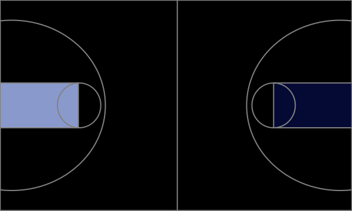

<!DOCTYPE html>
<!-- saved from url=(0029)http://jsdatav.is/chap04.html -->
<html class="no-font-feature-settings"><head><meta http-equiv="Content-Type" content="text/html; charset=UTF-8">
        <meta http-equiv="X-UA-Compatible" content="IE=edge">
        <meta http-equiv="Cache-Control" content="no-transform">
        <!--[if lte IE 8]>
            <script>window.location.href='http://browsehappy.com';</script>
        <![endif]-->
        
        <meta name="viewport" content="width=device-width, initial-scale=1">
        <meta name="author" content="Stephen Thomas &lt;stephen@sathomas.me&gt;">
        <meta name="mobile-web-app-capable" content="yes">
        <link rel="apple-touch-icon" sizes="152x152" href="http://jsdatav.is/apple-touch-icon.png">
        <link rel="shortcut icon" href="http://jsdatav.is/favicon.ico">
        <link rel="stylesheet" href="./Chapter4_files/styles.min.css">
        <link rel="alternate" type="application/rss+xml" title="RSS Feed for jsDataV.is" href="http://jsdatav.is/rss.xml">
        <title>Data Visualization with JavaScript</title>
        <script async="" src="./Chapter4_files/analytics.js.download"></script><script>
            var chartStyles = {
                color: {
                    text:               "#444444",
                    primary:            "#CA0000",
                    primaryLightest:    "#FE4C4C",
                    primaryLight:       "#F71515",
                    primaryDark:        "#A50000",
                    primaryDarkest:     "#7B0000",
                    secondary:          "#007979",
                    secondaryLightest:  "#2D9999",
                    secondaryLight:     "#0D9494",
                    secondaryDark:      "#006363",
                    secondaryDarkest:   "#004A4A",
                    alternate:          "#7EBD00",
                    alternateLightest:  "#B6ED47",
                    alternateLight:     "#A0E714",
                    alternateDark:      "#679A00",
                    alternateDarkest:   "#4D7300",
                    tertiary:           "#CA5C00",
                    tertiaryLightest:   "#FE9D4C",
                    tertiaryLight:      "#F77B15",
                    tertiaryDark:       "#A54B00",
                    tertiaryDarkest:    "#7B3800",
                    quaternary:         "#A2005C",
                    quaternaryLightest: "#CC3D8E",
                    quaternaryLight:    "#C61177",
                    quaternaryDark:     "#85004B",
                    quaternaryDarkest:  "#630038",
                    blockBackground:    "#F5F5F5"
                },
                font: {
                    family:             "Varela, sans-serif"
                }
            };
        </script>

<!--
    Adjustments to styles and JavaScript just for screen
    captures to be used in printed book.
 -->

<script>

    // Adjustments only active if page is loaded from
    // the local file system.

    if (window.location.protocol === "file:") {

        // Update the properties used by JavaScript code
        // to create the live visualizations.

        chartStyles.color.text = "#000000";
        chartStyles.font.family = "Avenir";

        var css = document.createElement('style');
        css.type = 'text/css';
        var styles = "figure, .no-font-feature-settings figure, .no-font-feature-settings figure .lgcp {color: black; font-family: Avenir;}";

        if (css.styleSheet) { css.styleSheet.cssText = styles; }
        else                { css.appendChild(document.createTextNode(styles)); }

        document.getElementsByTagName("head")[0].appendChild(css);

        document.getElementsByTagName('html')[0].classList.add("localfile");

    }

</script>

    </head>
    <body class="fade" data-gr-c-s-loaded="true">
        <div id="nav-target"></div>
        <nav class="headroom headroom--not-top headroom--unpinned">
            <ul>
                <li>
                    <a href="http://jsdatav.is/index.html" alt="jsDataV.is" title="jsDataV.is">
                        <svg width="32px" height="32px" viewBox="0 0 32 32">
                            <title>jsDataV.is</title>
                            <g class="jsdatavis-logo">
                                <path d="M22.5,2.5 L16.5,15.5"></path>
                                <path d="M28.5,24.5 L16.5,15.5"></path>
                                <path d="M9.5,28.5 L16.5,15.5"></path>
                                <path d="M2.5,18.5 L16.5,15.5"></path>
                                <circle cx="9" cy="29" r="3"></circle>
                                <circle cx="3" cy="18" r="3"></circle>
                                <circle cx="29" cy="25" r="3"></circle>
                                <circle cx="22" cy="3" r="3"></circle>
                                <circle cx="17" cy="15" r="6"></circle>
                            </g>
                        </svg>
                    </a>
                </li>
                <li id="contents">Contents ▾
                    <ol>
                        <li><a href="http://jsdatav.is/intro.html">Introduction</a></li>
                        <li><a href="http://jsdatav.is/chap01.html"><span class="lgcp">1</span>: Graphing Data</a></li>
                        <li><a href="http://jsdatav.is/chap02.html"><span class="lgcp">2</span>: Making Charts Interactive</a></li>
                        <li><a href="http://jsdatav.is/chap03.html"><span class="lgcp">3</span>: Integrating Charts on a Page</a></li>
                        <li><a href="http://jsdatav.is/chap04.html"><span class="lgcp">4</span>: Creating Specialized Graphs</a><ol><li><a href="http://jsdatav.is/chap04.html#visualizing-hierarchies-with-tree-maps">Visualizing Hierarchies with Tree Maps</a></li><li><a href="http://jsdatav.is/chap04.html#highlighting-regions-with-a-heat-map">Highlighting Regions with a Heat Map</a></li><li><a href="http://jsdatav.is/chap04.html#showing-relationships-with-network-graphs">Showing Relationships with Network Graphs</a></li><li><a href="http://jsdatav.is/chap04.html#revealing-language-patterns-with-word-clouds">Revealing Language Patterns with Word Clouds</a></li><li><a href="http://jsdatav.is/chap04.html#summing-up">Summing Up</a></li></ol></li>
                        <li><a href="http://jsdatav.is/chap05.html"><span class="lgcp">5</span>: Showing Timelines</a></li>
                        <li><a href="http://jsdatav.is/chap06.html"><span class="lgcp">6</span>: Visualizing Geographic Data</a></li>
                        <li><a href="http://jsdatav.is/chap07.html"><span class="lgcp">7</span>: Custom Visualizations with D3.js</a></li>
                        <li><a href="http://jsdatav.is/apndA.html"><span class="lgcp">A</span>: Managing Data in the Browser</a></li>
                        <li><a href="http://jsdatav.is/apndB.html"><span class="lgcp">B</span>: Building Data-Driven Applications</a></li>
                    </ol>
                </li>
            </ul>
            <!-- <form id="search">
                <input type="search" id="st-search-input" placeholder="Search the site..." class="st-search-input" />
            </form> -->
        </nav>
        <main>

<style>
body { counter-reset: chapter 4; }
</style>

<h1 id="chapter-4-creating-specialized-graphs">Chapter 4: Creating Specialized Graphs</h1>
<p>The first three chapters looked at different ways to create many common types of charts with JavaScript. But if your data has unique properties, or if you want to show it in an unusual way, a more specialized chart might be more appropriate than a typical bar, line or scatter plot.</p>
<p>Fortunately, there are many JavaScript techniques and plugins to expand our visualization vocabulary beyond the standard charts. In this chapter, we’ll look at approaches for several specialized chart types, including:</p>
<ul>
<li>How to combine hierarchy and dimension with tree maps</li>
<li>How to highlight regions with heat maps</li>
<li>How to show links between elements with network graphs</li>
<li>How to reveal language patterns with word clouds</li>
</ul>
<h2 id="visualizing-hierarchies-with-tree-maps">Visualizing Hierarchies with Tree Maps</h2>
<p>Data that we want to visualize can often be organized into a hierarchy, and in many cases that hierarchy is itself an important aspect of the visualization. This chapter considers several tools for visualizing hierarchical data, and we’ll begin the examples with one of the simplest approaches: tree maps. Tree maps represent numeric data with two-dimensional areas, and they indicate hierarchies by nesting subordinate areas within their parent.</p>
<p>There are several algorithms for constructing tree maps from hierarchical data; one of the most common is the <em>squarified</em> algorithm developed by <a href="http://www.win.tue.nl/~vanwijk/stm.pdf">Bruls, Huizing, and van Wijk</a>. This algorithm is favored for many visualizations because it usually generates visually pleasing proportions for the tree map area. To create the graphics in our example, we can use Imran Ghory’s <a href="https://github.com/imranghory/treemap-squared">Treemap-Squared</a> library. That library includes code for both calculating and drawing tree maps.</p>
<h3 id="step-1-include-the-required-libraries">Step 1: Include the Required Libraries</h3>
<p>The treemap-squared library itself depends on the <a href="http://raphaeljs.com/">Raphaël</a> library for low-level drawing functions. Our markup, therefore, must include both libraries. The Raphaël library is popular enough for public content distribution networks to support. In line 9 of the example markup below we’re relying on CloudFlare’s <span class="smcp">CDN</span>. We’ll have to use our own resources, however, to host the treemap-squared library, and we do so in line 10.</p>
<blockquote>
<p>Note: Chapter 2 includes a more extensive discussion of content distributions networks and the trade-offs involved in using them.</p>
</blockquote>
<div class="sourceCode"><table class="sourceCode html numberLines line-9 line-10"><tbody><tr class="sourceCode"><td class="lineNumbers"><pre>1
2
3
4
5
6
7
8
<span class="emphasized">9</span>
<span class="emphasized">10</span>
11
12
13
14
</pre></td><td class="sourceCode"><pre><code class="sourceCode html"><span class="dt">&lt;!DOCTYPE </span>html<span class="dt">&gt;</span>
<span class="kw">&lt;html</span><span class="ot"> lang=</span><span class="st">"en"</span><span class="kw">&gt;</span>
  <span class="kw">&lt;head&gt;</span>
    <span class="kw">&lt;meta</span><span class="ot"> charset=</span><span class="st">"utf-8"</span><span class="kw">&gt;</span>
    <span class="kw">&lt;title&gt;&lt;/title&gt;</span>
  <span class="kw">&lt;/head&gt;</span>
  <span class="kw">&lt;body&gt;</span>
    <span class="kw">&lt;div</span><span class="ot"> id=</span><span class="st">"treemap"</span><span class="kw">&gt;&lt;/div&gt;</span>
<span class="emphasized">    <span class="kw">&lt;script</span> </span>
<span class="emphasized"><span class="ot">      src=</span><span class="st">"//cdnjs.cloudflare.com/ajax/libs/raphael/2.1.0/raphael-min.js"</span><span class="kw">&gt;</span></span>
    <span class="kw">&lt;/script&gt;</span>
    <span class="kw">&lt;script</span><span class="ot"> src=</span><span class="st">"js/treemap-squared-0.5.min.js"</span><span class="kw">&gt;&lt;/script&gt;</span>
  <span class="kw">&lt;/body&gt;</span>
<span class="kw">&lt;/html&gt;</span></code></pre></td></tr></tbody></table></div>
<p>As you can see, we’ve set aside a <code>&lt;div&gt;</code> to hold our tree map. We’ve also included the JavaScript libraries as the last part of the <code>&lt;body&gt;</code> element, as that provides the best browser performance.</p>
<h3 id="step-2-prepare-the-data">Step 2: Prepare the Data</h3>
<p>For our example we’ll show the population of the United States divided by region and then, within each region, by state. The data is available from the <a href="https://www.census.gov/popest/data/state/totals/2012/index.html"><span class="smcp">US</span> Census Bureau</a>. We’ll follow its convention and divide the country into four regions. The resulting JavaScript array could look like the following snippet.</p>
<div class="sourceCode"><table class="sourceCode javascript numberLines"><tbody><tr class="sourceCode"><td class="lineNumbers"><pre>1
2
3
4
5
</pre></td><td class="sourceCode"><pre><code class="sourceCode javascript">census <span class="op">=</span> [
  <span class="op">{</span> <span class="dt">region</span><span class="op">:</span> <span class="st">"South"</span><span class="op">,</span> <span class="dt">state</span><span class="op">:</span> <span class="st">"AL"</span><span class="op">,</span> <span class="dt">pop2010</span><span class="op">:</span> <span class="dv">4784762</span><span class="op">,</span> <span class="dt">pop2012</span><span class="op">:</span> <span class="dv">4822023</span> <span class="op">},</span>
  <span class="op">{</span> <span class="dt">region</span><span class="op">:</span> <span class="st">"West"</span><span class="op">,</span>  <span class="dt">state</span><span class="op">:</span> <span class="st">"AK"</span><span class="op">,</span> <span class="dt">pop2010</span><span class="op">:</span>  <span class="dv">714046</span><span class="op">,</span> <span class="dt">pop2012</span><span class="op">:</span>  <span class="dv">731449</span> <span class="op">},</span>
  <span class="op">{</span> <span class="dt">region</span><span class="op">:</span> <span class="st">"West"</span><span class="op">,</span>  <span class="dt">state</span><span class="op">:</span> <span class="st">"AZ"</span><span class="op">,</span> <span class="dt">pop2010</span><span class="op">:</span> <span class="dv">6410810</span><span class="op">,</span> <span class="dt">pop2012</span><span class="op">:</span> <span class="dv">6553255</span> <span class="op">},</span>
  <span class="co">// Data set continues...</span></code></pre></td></tr></tbody></table></div>
<p>We’ve retained both the 2010 and the 2012 data</p>
<p>To structure the data for the treemap-squared library, we need to create separate data arrays for each region. At the same time, we can also create arrays to label the data values using the two-letter state abbreviations. The following code steps through the <code>census</code> array to build data and label arrays for the <code>"South"</code> region. The same approach works for the other three regions as well.</p>
<div class="sourceCode"><table class="sourceCode javascript numberLines"><tbody><tr class="sourceCode"><td class="lineNumbers"><pre>1
2
3
4
5
6
7
8
9
</pre></td><td class="sourceCode"><pre><code class="sourceCode javascript"><span class="kw">var</span> south <span class="op">=</span> <span class="op">{};</span>
<span class="va">south</span>.<span class="at">data</span> <span class="op">=</span> []<span class="op">;</span>
<span class="va">south</span>.<span class="at">labels</span> <span class="op">=</span> []<span class="op">;</span>
<span class="cf">for</span> (<span class="kw">var</span> i<span class="op">=</span><span class="dv">0</span><span class="op">;</span> i<span class="op">&lt;</span><span class="va">census</span>.<span class="at">length</span><span class="op">;</span> i<span class="op">++</span>) <span class="op">{</span>
    <span class="cf">if</span> (census[i].<span class="at">region</span> <span class="op">===</span> <span class="st">"South"</span>) <span class="op">{</span>
        <span class="va">south</span>.<span class="va">data</span>.<span class="at">push</span>(census[i].<span class="at">pop2012</span>)<span class="op">;</span>
        <span class="va">south</span>.<span class="va">labels</span>.<span class="at">push</span>(census[i].<span class="at">state</span>)<span class="op">;</span>
    <span class="op">}</span>
<span class="op">}</span></code></pre></td></tr></tbody></table></div>
<h3 id="step-3-draw-the-tree-map">Step 3: Draw the Tree Map</h3>
<p>Now we’re ready to use the library to construct our tree map. We need to assemble the individual data and label arrays and then call the library’s main function. The first two parameters in line 3 are the width and height of the map.</p>
<div class="sourceCode"><table class="sourceCode javascript numberLines line-3"><tbody><tr class="sourceCode"><td class="lineNumbers"><pre>1
2
<span class="emphasized">3</span>
4
5
6
7
</pre></td><td class="sourceCode"><pre><code class="sourceCode javascript"><span class="kw">var</span> data <span class="op">=</span> [ 
    <span class="va">west</span>.<span class="at">data</span><span class="op">,</span> <span class="va">midwest</span>.<span class="at">data</span><span class="op">,</span> <span class="va">northeast</span>.<span class="at">data</span><span class="op">,</span> <span class="va">south</span>.<span class="at">data</span>
<span class="emphasized">]<span class="op">;</span></span>
<span class="kw">var</span> labels <span class="op">=</span> [ 
    <span class="va">west</span>.<span class="at">labels</span><span class="op">,</span> <span class="va">midwest</span>.<span class="at">labels</span><span class="op">,</span> <span class="va">northeast</span>.<span class="at">labels</span><span class="op">,</span> <span class="va">south</span>.<span class="at">labels</span>
]<span class="op">;</span>
<span class="va">Treemap</span>.<span class="at">draw</span>(<span class="st">"treemap"</span><span class="op">,</span> <span class="dv">600</span><span class="op">,</span> <span class="dv">450</span><span class="op">,</span> data<span class="op">,</span> labels)<span class="op">;</span></code></pre></td></tr></tbody></table></div>
<p>The resulting chart, shown in figure <span class="nextfigure">, provides a simple visualization of the <span class="smcp">US</span> population. Among the four regions, it is clear where most of the population resides. The bottom right quadrant (the South) has the largest share of the population. And within the regions the relative size of each state’s population is also clear. Notice, for example, how California dominates the West.</span></p>
<figure>
<div id="treemap-1"><svg height="440" version="1.1" width="620" xmlns="http://www.w3.org/2000/svg" style="overflow: hidden; position: relative; top: -0.171875px;"><desc style="-webkit-tap-highlight-color: rgba(0, 0, 0, 0);">Created with Raphaël 2.1.0</desc><defs style="-webkit-tap-highlight-color: rgba(0, 0, 0, 0);"></defs><rect x="0" y="0" width="620" height="440" r="0" rx="0" ry="0" fill="none" stroke="#000" style="-webkit-tap-highlight-color: rgba(0, 0, 0, 0);"></rect><rect x="0" y="0" width="27.550802869996392" height="23.07190298737324" r="0" rx="0" ry="0" fill="#007979" stroke="#ffffff" style="-webkit-tap-highlight-color: rgba(0, 0, 0, 0);"></rect><text x="13.775401434998196" y="11.53595149368662" text-anchor="middle" font="10px &quot;Arial&quot;" stroke="none" fill="#fcfcfc" style="-webkit-tap-highlight-color: rgba(0, 0, 0, 0); text-anchor: middle; font: 12px Varela, sans-serif;" font-size="12px" font-family="Varela, sans-serif"><tspan dy="4.496888993686619" style="-webkit-tap-highlight-color: rgba(0, 0, 0, 0);">AK</tspan></text><rect x="0" y="23.07190298737324" width="27.550802869996392" height="206.70759494034252" r="0" rx="0" ry="0" fill="#007979" stroke="#ffffff" style="-webkit-tap-highlight-color: rgba(0, 0, 0, 0);"></rect><text x="13.775401434998196" y="126.42570045754451" text-anchor="middle" font="10px &quot;Arial&quot;" stroke="none" fill="#fcfcfc" style="-webkit-tap-highlight-color: rgba(0, 0, 0, 0); text-anchor: middle; font: 20px Varela, sans-serif;" font-size="20px" font-family="Varela, sans-serif" transform="matrix(0,-1,1,0,-113.1406,139.6875)"><tspan dy="6.996012957544508" style="-webkit-tap-highlight-color: rgba(0, 0, 0, 0);">AZ</tspan></text><rect x="27.550802869996392" y="0" width="143.87296159497583" height="229.77949792771577" r="0" rx="0" ry="0" fill="#007979" stroke="#ffffff" style="-webkit-tap-highlight-color: rgba(0, 0, 0, 0);"></rect><text x="99.48728366748432" y="114.88974896385788" text-anchor="middle" font="10px &quot;Arial&quot;" stroke="none" fill="#fcfcfc" style="-webkit-tap-highlight-color: rgba(0, 0, 0, 0); text-anchor: middle; font: 20px Varela, sans-serif;" font-size="20px" font-family="Varela, sans-serif"><tspan dy="7.006936463857883" style="-webkit-tap-highlight-color: rgba(0, 0, 0, 0);">CA</tspan></text><rect x="171.42376446497224" y="0" width="84.24371219260541" height="53.513222528226976" r="0" rx="0" ry="0" fill="#007979" stroke="#ffffff" style="-webkit-tap-highlight-color: rgba(0, 0, 0, 0);"></rect><text x="213.54562056127494" y="26.756611264113488" text-anchor="middle" font="10px &quot;Arial&quot;" stroke="none" fill="#fcfcfc" style="-webkit-tap-highlight-color: rgba(0, 0, 0, 0); text-anchor: middle; font: 20px Varela, sans-serif;" font-size="20px" font-family="Varela, sans-serif"><tspan dy="6.998798764113488" style="-webkit-tap-highlight-color: rgba(0, 0, 0, 0);">CO</tspan></text><rect x="255.66747665757765" y="0" width="22.61046006675616" height="53.513222528226976" r="0" rx="0" ry="0" fill="#007979" stroke="#ffffff" style="-webkit-tap-highlight-color: rgba(0, 0, 0, 0);"></rect><text x="266.97270669095576" y="26.756611264113488" text-anchor="middle" font="10px &quot;Arial&quot;" stroke="none" fill="#fcfcfc" style="-webkit-tap-highlight-color: rgba(0, 0, 0, 0); text-anchor: middle; font: 17px Varela, sans-serif;" font-size="17px" font-family="Varela, sans-serif"><tspan dy="5.998798764113488" style="-webkit-tap-highlight-color: rgba(0, 0, 0, 0);">HI</tspan></text><rect x="171.42376446497224" y="53.513222528226976" width="31.812790512908407" height="43.59038709687479" r="0" rx="0" ry="0" fill="#007979" stroke="#ffffff" style="-webkit-tap-highlight-color: rgba(0, 0, 0, 0);"></rect><text x="187.33015972142644" y="75.30841607666437" text-anchor="middle" font="10px &quot;Arial&quot;" stroke="none" fill="#fcfcfc" style="-webkit-tap-highlight-color: rgba(0, 0, 0, 0); text-anchor: middle; font: 18px Varela, sans-serif;" font-size="18px" font-family="Varela, sans-serif"><tspan dy="6.503728576664372" style="-webkit-tap-highlight-color: rgba(0, 0, 0, 0);">ID</tspan></text><rect x="203.23655497788064" y="53.513222528226976" width="20.03871591457647" height="43.59038709687479" r="0" rx="0" ry="0" fill="#007979" stroke="#ffffff" style="-webkit-tap-highlight-color: rgba(0, 0, 0, 0);"></rect><text x="213.25591293516888" y="75.30841607666437" text-anchor="middle" font="10px &quot;Arial&quot;" stroke="none" fill="#fcfcfc" style="-webkit-tap-highlight-color: rgba(0, 0, 0, 0); text-anchor: middle; font: 14px Varela, sans-serif;" font-size="14px" font-family="Varela, sans-serif" transform="matrix(0,-1,1,0,138.1797,288.7891)"><tspan dy="5.003728576664372" style="-webkit-tap-highlight-color: rgba(0, 0, 0, 0);">MT</tspan></text><rect x="223.27527089245712" y="53.513222528226976" width="55.0026658318767" height="43.59038709687479" r="0" rx="0" ry="0" fill="#007979" stroke="#ffffff" style="-webkit-tap-highlight-color: rgba(0, 0, 0, 0);"></rect><text x="250.77660380839546" y="75.30841607666437" text-anchor="middle" font="10px &quot;Arial&quot;" stroke="none" fill="#fcfcfc" style="-webkit-tap-highlight-color: rgba(0, 0, 0, 0); text-anchor: middle; font: 20px Varela, sans-serif;" font-size="20px" font-family="Varela, sans-serif"><tspan dy="7.003728576664372" style="-webkit-tap-highlight-color: rgba(0, 0, 0, 0);">NV</tspan></text><rect x="171.42376446497224" y="97.10360962510177" width="37.23517048271128" height="48.67415116657375" r="0" rx="0" ry="0" fill="#007979" stroke="#ffffff" style="-webkit-tap-highlight-color: rgba(0, 0, 0, 0);"></rect><text x="190.04134970632788" y="121.44068520838864" text-anchor="middle" font="10px &quot;Arial&quot;" stroke="none" fill="#fcfcfc" style="-webkit-tap-highlight-color: rgba(0, 0, 0, 0); text-anchor: middle; font: 20px Varela, sans-serif;" font-size="20px" font-family="Varela, sans-serif"><tspan dy="6.9953727083886434" style="-webkit-tap-highlight-color: rgba(0, 0, 0, 0);">NM</tspan></text><rect x="208.65893494768352" y="97.10360962510177" width="69.6190017766503" height="48.67415116657375" r="0" rx="0" ry="0" fill="#007979" stroke="#ffffff" style="-webkit-tap-highlight-color: rgba(0, 0, 0, 0);"></rect><text x="243.46843583600867" y="121.44068520838864" text-anchor="middle" font="10px &quot;Arial&quot;" stroke="none" fill="#fcfcfc" style="-webkit-tap-highlight-color: rgba(0, 0, 0, 0); text-anchor: middle; font: 20px Varela, sans-serif;" font-size="20px" font-family="Varela, sans-serif"><tspan dy="6.9953727083886434" style="-webkit-tap-highlight-color: rgba(0, 0, 0, 0);">OR</tspan></text><rect x="171.42376446497224" y="145.77776079167552" width="29.5389549526476" height="84.00173713604022" r="0" rx="0" ry="0" fill="#007979" stroke="#ffffff" style="-webkit-tap-highlight-color: rgba(0, 0, 0, 0);"></rect><text x="186.19324194129604" y="187.77862935969563" text-anchor="middle" font="10px &quot;Arial&quot;" stroke="none" fill="#fcfcfc" style="-webkit-tap-highlight-color: rgba(0, 0, 0, 0); text-anchor: middle; font: 20px Varela, sans-serif;" font-size="20px" font-family="Varela, sans-serif"><tspan dy="7.005191859695628" style="-webkit-tap-highlight-color: rgba(0, 0, 0, 0);">UT</tspan></text><rect x="200.96271941761984" y="145.77776079167552" width="77.31521730671398" height="77.52283144220314" r="0" rx="0" ry="0" fill="#007979" stroke="#ffffff" style="-webkit-tap-highlight-color: rgba(0, 0, 0, 0);"></rect><text x="239.62032807097683" y="184.5391765127771" text-anchor="middle" font="10px &quot;Arial&quot;" stroke="none" fill="#fcfcfc" style="-webkit-tap-highlight-color: rgba(0, 0, 0, 0); text-anchor: middle; font: 20px Varela, sans-serif;" font-size="20px" font-family="Varela, sans-serif"><tspan dy="7.00011401277709" style="-webkit-tap-highlight-color: rgba(0, 0, 0, 0);">WA</tspan></text><rect x="200.96271941761984" y="223.30059223387866" width="77.31521730671477" height="6.478905693837078" r="0" rx="0" ry="0" fill="#007979" stroke="#ffffff" style="-webkit-tap-highlight-color: rgba(0, 0, 0, 0);"></rect><text x="239.62032807097722" y="226.5400450807972" text-anchor="middle" font="10px &quot;Arial&quot;" stroke="none" fill="#fcfcfc" style="-webkit-tap-highlight-color: rgba(0, 0, 0, 0); text-anchor: middle; font: 11px Varela, sans-serif;" font-size="11px" font-family="Varela, sans-serif"><tspan dy="4.000982580797199" style="-webkit-tap-highlight-color: rgba(0, 0, 0, 0);">WY</tspan></text><rect x="0" y="229.77949792771577" width="80.24944113306617" height="139.42718152682718" r="0" rx="0" ry="0" fill="#ca5c00" stroke="#ffffff" style="-webkit-tap-highlight-color: rgba(0, 0, 0, 0);"></rect><text x="40.124720566533085" y="299.49308869112934" text-anchor="middle" font="10px &quot;Arial&quot;" stroke="none" fill="#fcfcfc" style="-webkit-tap-highlight-color: rgba(0, 0, 0, 0); text-anchor: middle; font: 20px Varela, sans-serif;" font-size="20px" font-family="Varela, sans-serif"><tspan dy="7.000901191129344" style="-webkit-tap-highlight-color: rgba(0, 0, 0, 0);">IL</tspan></text><rect x="0" y="369.20667945454295" width="80.24944113306617" height="70.79332054545705" r="0" rx="0" ry="0" fill="#ca5c00" stroke="#ffffff" style="-webkit-tap-highlight-color: rgba(0, 0, 0, 0);"></rect><text x="40.124720566533085" y="404.6033397272715" text-anchor="middle" font="10px &quot;Arial&quot;" stroke="none" fill="#fcfcfc" style="-webkit-tap-highlight-color: rgba(0, 0, 0, 0); text-anchor: middle; font: 20px Varela, sans-serif;" font-size="20px" font-family="Varela, sans-serif"><tspan dy="7.001777227271475" style="-webkit-tap-highlight-color: rgba(0, 0, 0, 0);">IN</tspan></text><rect x="80.24944113306617" y="229.77949792771577" width="38.424483955404455" height="69.52735733479406" r="0" rx="0" ry="0" fill="#ca5c00" stroke="#ffffff" style="-webkit-tap-highlight-color: rgba(0, 0, 0, 0);"></rect><text x="99.4616831107684" y="264.5431765951128" text-anchor="middle" font="10px &quot;Arial&quot;" stroke="none" fill="#fcfcfc" style="-webkit-tap-highlight-color: rgba(0, 0, 0, 0); text-anchor: middle; font: 20px Varela, sans-serif;" font-size="20px" font-family="Varela, sans-serif"><tspan dy="7.004114095112811" style="-webkit-tap-highlight-color: rgba(0, 0, 0, 0);">IA</tspan></text><rect x="118.67392508847063" y="229.77949792771577" width="36.07114545747119" height="69.52735733479406" r="0" rx="0" ry="0" fill="#ca5c00" stroke="#ffffff" style="-webkit-tap-highlight-color: rgba(0, 0, 0, 0);"></rect><text x="136.70949781720623" y="264.5431765951128" text-anchor="middle" font="10px &quot;Arial&quot;" stroke="none" fill="#fcfcfc" style="-webkit-tap-highlight-color: rgba(0, 0, 0, 0); text-anchor: middle; font: 20px Varela, sans-serif;" font-size="20px" font-family="Varela, sans-serif"><tspan dy="7.004114095112811" style="-webkit-tap-highlight-color: rgba(0, 0, 0, 0);">KS</tspan></text><rect x="154.74507054594181" y="229.77949792771577" width="123.532866178392" height="69.52735733479406" r="0" rx="0" ry="0" fill="#ca5c00" stroke="#ffffff" style="-webkit-tap-highlight-color: rgba(0, 0, 0, 0);"></rect><text x="216.5115036351378" y="264.5431765951128" text-anchor="middle" font="10px &quot;Arial&quot;" stroke="none" fill="#fcfcfc" style="-webkit-tap-highlight-color: rgba(0, 0, 0, 0); text-anchor: middle; font: 20px Varela, sans-serif;" font-size="20px" font-family="Varela, sans-serif"><tspan dy="7.004114095112811" style="-webkit-tap-highlight-color: rgba(0, 0, 0, 0);">MI</tspan></text><rect x="80.24944113306617" y="299.3068552625098" width="70.42201900798807" height="66.380102764409" r="0" rx="0" ry="0" fill="#ca5c00" stroke="#ffffff" style="-webkit-tap-highlight-color: rgba(0, 0, 0, 0);"></rect><text x="115.4604506370602" y="332.49690664471433" text-anchor="middle" font="10px &quot;Arial&quot;" stroke="none" fill="#fcfcfc" style="-webkit-tap-highlight-color: rgba(0, 0, 0, 0); text-anchor: middle; font: 20px Varela, sans-serif;" font-size="20px" font-family="Varela, sans-serif"><tspan dy="7.004719144714329" style="-webkit-tap-highlight-color: rgba(0, 0, 0, 0);">MN</tspan></text><rect x="80.24944113306617" y="365.68695802691883" width="70.42201900798807" height="74.31304197308117" r="0" rx="0" ry="0" fill="#ca5c00" stroke="#ffffff" style="-webkit-tap-highlight-color: rgba(0, 0, 0, 0);"></rect><text x="115.4604506370602" y="402.8434790134594" text-anchor="middle" font="10px &quot;Arial&quot;" stroke="none" fill="#fcfcfc" style="-webkit-tap-highlight-color: rgba(0, 0, 0, 0); text-anchor: middle; font: 20px Varela, sans-serif;" font-size="20px" font-family="Varela, sans-serif"><tspan dy="7.007541513459387" style="-webkit-tap-highlight-color: rgba(0, 0, 0, 0);">MO</tspan></text><rect x="150.67146014105424" y="299.3068552625098" width="92.66646946863449" height="17.40114471690879" r="0" rx="0" ry="0" fill="#ca5c00" stroke="#ffffff" style="-webkit-tap-highlight-color: rgba(0, 0, 0, 0);"></rect><text x="197.00469487537148" y="308.0074276209642" text-anchor="middle" font="10px &quot;Arial&quot;" stroke="none" fill="#fcfcfc" style="-webkit-tap-highlight-color: rgba(0, 0, 0, 0); text-anchor: middle; font: 20px Varela, sans-serif;" font-size="20px" font-family="Varela, sans-serif"><tspan dy="6.999615120964222" style="-webkit-tap-highlight-color: rgba(0, 0, 0, 0);">NE</tspan></text><rect x="243.33792960968873" y="299.3068552625098" width="34.940007114645084" height="17.40114471690879" r="0" rx="0" ry="0" fill="#ca5c00" stroke="#ffffff" style="-webkit-tap-highlight-color: rgba(0, 0, 0, 0);"></rect><text x="260.80793316701124" y="308.0074276209642" text-anchor="middle" font="10px &quot;Arial&quot;" stroke="none" fill="#fcfcfc" style="-webkit-tap-highlight-color: rgba(0, 0, 0, 0); text-anchor: middle; font: 12px Varela, sans-serif;" font-size="12px" font-family="Varela, sans-serif"><tspan dy="4.499615120964222" style="-webkit-tap-highlight-color: rgba(0, 0, 0, 0);">ND</tspan></text><rect x="150.67146014105424" y="316.7079999794186" width="81.36984912953716" height="123.29200002058138" r="0" rx="0" ry="0" fill="#ca5c00" stroke="#ffffff" style="-webkit-tap-highlight-color: rgba(0, 0, 0, 0);"></rect><text x="191.35638470582282" y="378.35399998970934" text-anchor="middle" font="10px &quot;Arial&quot;" stroke="none" fill="#fcfcfc" style="-webkit-tap-highlight-color: rgba(0, 0, 0, 0); text-anchor: middle; font: 20px Varela, sans-serif;" font-size="20px" font-family="Varela, sans-serif"><tspan dy="7.002437489709337" style="-webkit-tap-highlight-color: rgba(0, 0, 0, 0);">OH</tspan></text><rect x="232.0413092705914" y="316.7079999794186" width="46.236627453742415" height="15.66307405907287" r="0" rx="0" ry="0" fill="#ca5c00" stroke="#ffffff" style="-webkit-tap-highlight-color: rgba(0, 0, 0, 0);"></rect><text x="255.1596229974626" y="324.53953700895505" text-anchor="middle" font="10px &quot;Arial&quot;" stroke="none" fill="#fcfcfc" style="-webkit-tap-highlight-color: rgba(0, 0, 0, 0); text-anchor: middle; font: 13px Varela, sans-serif;" font-size="13px" font-family="Varela, sans-serif"><tspan dy="4.500474508955051" style="-webkit-tap-highlight-color: rgba(0, 0, 0, 0);">SD</tspan></text><rect x="232.0413092705914" y="332.3710740384915" width="46.236627453742415" height="107.6289259615084" r="0" rx="0" ry="0" fill="#ca5c00" stroke="#ffffff" style="-webkit-tap-highlight-color: rgba(0, 0, 0, 0);"></rect><text x="255.1596229974626" y="386.18553701924566" text-anchor="middle" font="10px &quot;Arial&quot;" stroke="none" fill="#fcfcfc" style="-webkit-tap-highlight-color: rgba(0, 0, 0, 0); text-anchor: middle; font: 20px Varela, sans-serif;" font-size="20px" font-family="Varela, sans-serif"><tspan dy="7.005849519245658" style="-webkit-tap-highlight-color: rgba(0, 0, 0, 0);">WI</tspan></text><rect x="278.2779367243338" y="0" width="30.148531660636024" height="103.49131010545767" r="0" rx="0" ry="0" fill="#a2005c" stroke="#ffffff" style="-webkit-tap-highlight-color: rgba(0, 0, 0, 0);"></rect><text x="293.35220255465185" y="51.745655052728836" text-anchor="middle" font="10px &quot;Arial&quot;" stroke="none" fill="#fcfcfc" style="-webkit-tap-highlight-color: rgba(0, 0, 0, 0); text-anchor: middle; font: 20px Varela, sans-serif;" font-size="20px" font-family="Varela, sans-serif"><tspan dy="7.003467552728836" style="-webkit-tap-highlight-color: rgba(0, 0, 0, 0);">CN</tspan></text><rect x="278.2779367243338" y="103.49131010545767" width="30.148531660636024" height="38.31379570322687" r="0" rx="0" ry="0" fill="#a2005c" stroke="#ffffff" style="-webkit-tap-highlight-color: rgba(0, 0, 0, 0);"></rect><text x="293.35220255465185" y="122.64820795707111" text-anchor="middle" font="10px &quot;Arial&quot;" stroke="none" fill="#fcfcfc" style="-webkit-tap-highlight-color: rgba(0, 0, 0, 0); text-anchor: middle; font: 16px Varela, sans-serif;" font-size="16px" font-family="Varela, sans-serif"><tspan dy="5.499770457071108" style="-webkit-tap-highlight-color: rgba(0, 0, 0, 0);">ME</tspan></text><rect x="308.42646838496984" y="0" width="48.823516033294595" height="118.29716055578143" r="0" rx="0" ry="0" fill="#a2005c" stroke="#ffffff" style="-webkit-tap-highlight-color: rgba(0, 0, 0, 0);"></rect><text x="332.83822640161713" y="59.148580277890716" text-anchor="middle" font="10px &quot;Arial&quot;" stroke="none" fill="#fcfcfc" style="-webkit-tap-highlight-color: rgba(0, 0, 0, 0); text-anchor: middle; font: 20px Varela, sans-serif;" font-size="20px" font-family="Varela, sans-serif"><tspan dy="7.000142777890716" style="-webkit-tap-highlight-color: rgba(0, 0, 0, 0);">MA</tspan></text><rect x="308.42646838496984" y="118.29716055578143" width="48.823516033294595" height="23.507945252903113" r="0" rx="0" ry="0" fill="#a2005c" stroke="#ffffff" style="-webkit-tap-highlight-color: rgba(0, 0, 0, 0);"></rect><text x="332.83822640161713" y="130.051133182233" text-anchor="middle" font="10px &quot;Arial&quot;" stroke="none" fill="#fcfcfc" style="-webkit-tap-highlight-color: rgba(0, 0, 0, 0); text-anchor: middle; font: 16px Varela, sans-serif;" font-size="16px" font-family="Varela, sans-serif"><tspan dy="5.496445682233002" style="-webkit-tap-highlight-color: rgba(0, 0, 0, 0);">NH</tspan></text><rect x="357.24998441826443" y="0" width="54.32508458080275" height="141.80510580868454" r="0" rx="0" ry="0" fill="#a2005c" stroke="#ffffff" style="-webkit-tap-highlight-color: rgba(0, 0, 0, 0);"></rect><text x="384.41252670866584" y="70.90255290434227" text-anchor="middle" font="10px &quot;Arial&quot;" stroke="none" fill="#fcfcfc" style="-webkit-tap-highlight-color: rgba(0, 0, 0, 0); text-anchor: middle; font: 20px Varela, sans-serif;" font-size="20px" font-family="Varela, sans-serif"><tspan dy="7.004115404342272" style="-webkit-tap-highlight-color: rgba(0, 0, 0, 0);">NJ</tspan></text><rect x="411.5750689990672" y="0" width="119.93291106451454" height="141.80510580868454" r="0" rx="0" ry="0" fill="#a2005c" stroke="#ffffff" style="-webkit-tap-highlight-color: rgba(0, 0, 0, 0);"></rect><text x="471.54152453132446" y="70.90255290434227" text-anchor="middle" font="10px &quot;Arial&quot;" stroke="none" fill="#fcfcfc" style="-webkit-tap-highlight-color: rgba(0, 0, 0, 0); text-anchor: middle; font: 20px Varela, sans-serif;" font-size="20px" font-family="Varela, sans-serif"><tspan dy="7.004115404342272" style="-webkit-tap-highlight-color: rgba(0, 0, 0, 0);">NY</tspan></text><rect x="531.5079800635817" y="0" width="88.49201993641827" height="125.34312695404378" r="0" rx="0" ry="0" fill="#a2005c" stroke="#ffffff" style="-webkit-tap-highlight-color: rgba(0, 0, 0, 0);"></rect><text x="575.7539900317909" y="62.67156347702189" text-anchor="middle" font="10px &quot;Arial&quot;" stroke="none" fill="#fcfcfc" style="-webkit-tap-highlight-color: rgba(0, 0, 0, 0); text-anchor: middle; font: 20px Varela, sans-serif;" font-size="20px" font-family="Varela, sans-serif"><tspan dy="7.007500977021891" style="-webkit-tap-highlight-color: rgba(0, 0, 0, 0);">PA</tspan></text><rect x="531.5079800635817" y="125.34312695404378" width="55.44490501004884" height="16.461978854640762" r="0" rx="0" ry="0" fill="#a2005c" stroke="#ffffff" style="-webkit-tap-highlight-color: rgba(0, 0, 0, 0);"></rect><text x="559.2304325686061" y="133.57411638136415" text-anchor="middle" font="10px &quot;Arial&quot;" stroke="none" fill="#fcfcfc" style="-webkit-tap-highlight-color: rgba(0, 0, 0, 0); text-anchor: middle; font: 15px Varela, sans-serif;" font-size="15px" font-family="Varela, sans-serif"><tspan dy="5.503803881364149" style="-webkit-tap-highlight-color: rgba(0, 0, 0, 0);">RI</tspan></text><rect x="586.9528850736306" y="125.34312695404378" width="33.04711492636875" height="16.461978854640762" r="0" rx="0" ry="0" fill="#a2005c" stroke="#ffffff" style="-webkit-tap-highlight-color: rgba(0, 0, 0, 0);"></rect><text x="603.476442536815" y="133.57411638136415" text-anchor="middle" font="10px &quot;Arial&quot;" stroke="none" fill="#fcfcfc" style="-webkit-tap-highlight-color: rgba(0, 0, 0, 0); text-anchor: middle; font: 11px Varela, sans-serif;" font-size="11px" font-family="Varela, sans-serif"><tspan dy="4.003803881364149" style="-webkit-tap-highlight-color: rgba(0, 0, 0, 0);">VT</tspan></text><rect x="278.2779367243338" y="141.80510580868454" width="27.162882101591094" height="154.2719804201964" r="0" rx="0" ry="0" fill="#7ebd00" stroke="#ffffff" style="-webkit-tap-highlight-color: rgba(0, 0, 0, 0);"></rect><text x="291.85937777512936" y="218.94109601878273" text-anchor="middle" font="10px &quot;Arial&quot;" stroke="none" fill="#fcfcfc" style="-webkit-tap-highlight-color: rgba(0, 0, 0, 0); text-anchor: middle; font: 20px Varela, sans-serif;" font-size="20px" font-family="Varela, sans-serif"><tspan dy="6.99578351878273" style="-webkit-tap-highlight-color: rgba(0, 0, 0, 0);">AL</tspan></text><rect x="278.2779367243338" y="296.07708622888094" width="27.162882101591094" height="94.3521588114769" r="0" rx="0" ry="0" fill="#7ebd00" stroke="#ffffff" style="-webkit-tap-highlight-color: rgba(0, 0, 0, 0);"></rect><text x="291.85937777512936" y="343.2531656346194" text-anchor="middle" font="10px &quot;Arial&quot;" stroke="none" fill="#fcfcfc" style="-webkit-tap-highlight-color: rgba(0, 0, 0, 0); text-anchor: middle; font: 20px Varela, sans-serif;" font-size="20px" font-family="Varela, sans-serif" transform="matrix(0,-1,1,0,-51.8828,634.6016)"><tspan dy="6.995353134619393" style="-webkit-tap-highlight-color: rgba(0, 0, 0, 0);">AR</tspan></text><rect x="278.2779367243338" y="390.42924504035784" width="27.162882101591094" height="29.340714274386244" r="0" rx="0" ry="0" fill="#7ebd00" stroke="#ffffff" style="-webkit-tap-highlight-color: rgba(0, 0, 0, 0);"></rect><text x="291.85937777512936" y="405.099602177551" text-anchor="middle" font="10px &quot;Arial&quot;" stroke="none" fill="#fcfcfc" style="-webkit-tap-highlight-color: rgba(0, 0, 0, 0); text-anchor: middle; font: 14px Varela, sans-serif;" font-size="14px" font-family="Varela, sans-serif"><tspan dy="4.998039677550992" style="-webkit-tap-highlight-color: rgba(0, 0, 0, 0);">DE</tspan></text><rect x="278.2779367243338" y="419.7699593147441" width="27.162882101591094" height="20.230040685255915" r="0" rx="0" ry="0" fill="#7ebd00" stroke="#ffffff" style="-webkit-tap-highlight-color: rgba(0, 0, 0, 0);"></rect><text x="291.85937777512936" y="429.884979657372" text-anchor="middle" font="10px &quot;Arial&quot;" stroke="none" fill="#fcfcfc" style="-webkit-tap-highlight-color: rgba(0, 0, 0, 0); text-anchor: middle; font: 11px Varela, sans-serif;" font-size="11px" font-family="Varela, sans-serif"><tspan dy="4.002167157372014" style="-webkit-tap-highlight-color: rgba(0, 0, 0, 0);">DC</tspan></text><rect x="305.4408188259249" y="141.80510580868454" width="85.20672059428318" height="197.02086650781624" r="0" rx="0" ry="0" fill="#7ebd00" stroke="#ffffff" style="-webkit-tap-highlight-color: rgba(0, 0, 0, 0);"></rect><text x="348.0441791230665" y="240.31553906259268" text-anchor="middle" font="10px &quot;Arial&quot;" stroke="none" fill="#fcfcfc" style="-webkit-tap-highlight-color: rgba(0, 0, 0, 0); text-anchor: middle; font: 20px Varela, sans-serif;" font-size="20px" font-family="Varela, sans-serif"><tspan dy="6.995226562592677" style="-webkit-tap-highlight-color: rgba(0, 0, 0, 0);">FL</tspan></text><rect x="305.4408188259249" y="338.8259723165008" width="85.20672059428318" height="101.17402768349922" r="0" rx="0" ry="0" fill="#7ebd00" stroke="#ffffff" style="-webkit-tap-highlight-color: rgba(0, 0, 0, 0);"></rect><text x="348.0441791230665" y="389.4129861582504" text-anchor="middle" font="10px &quot;Arial&quot;" stroke="none" fill="#fcfcfc" style="-webkit-tap-highlight-color: rgba(0, 0, 0, 0); text-anchor: middle; font: 20px Varela, sans-serif;" font-size="20px" font-family="Varela, sans-serif"><tspan dy="6.998923658250419" style="-webkit-tap-highlight-color: rgba(0, 0, 0, 0);">GA</tspan></text><rect x="390.6475394202081" y="141.80510580868454" width="67.57702805187648" height="56.33130274526812" r="0" rx="0" ry="0" fill="#7ebd00" stroke="#ffffff" style="-webkit-tap-highlight-color: rgba(0, 0, 0, 0);"></rect><text x="424.43605344614633" y="169.97075718131862" text-anchor="middle" font="10px &quot;Arial&quot;" stroke="none" fill="#fcfcfc" style="-webkit-tap-highlight-color: rgba(0, 0, 0, 0); text-anchor: middle; font: 20px Varela, sans-serif;" font-size="20px" font-family="Varela, sans-serif"><tspan dy="6.994194681318618" style="-webkit-tap-highlight-color: rgba(0, 0, 0, 0);">KY</tspan></text><rect x="458.2245674720846" y="141.80510580868454" width="70.9937876554468" height="56.33130274526812" r="0" rx="0" ry="0" fill="#7ebd00" stroke="#ffffff" style="-webkit-tap-highlight-color: rgba(0, 0, 0, 0);"></rect><text x="493.72146129980797" y="169.97075718131862" text-anchor="middle" font="10px &quot;Arial&quot;" stroke="none" fill="#fcfcfc" style="-webkit-tap-highlight-color: rgba(0, 0, 0, 0); text-anchor: middle; font: 20px Varela, sans-serif;" font-size="20px" font-family="Varela, sans-serif"><tspan dy="6.994194681318618" style="-webkit-tap-highlight-color: rgba(0, 0, 0, 0);">LA</tspan></text><rect x="529.2183551275314" y="141.80510580868454" width="90.78164487246863" height="56.33130274526812" r="0" rx="0" ry="0" fill="#7ebd00" stroke="#ffffff" style="-webkit-tap-highlight-color: rgba(0, 0, 0, 0);"></rect><text x="574.6091775637657" y="169.97075718131862" text-anchor="middle" font="10px &quot;Arial&quot;" stroke="none" fill="#fcfcfc" style="-webkit-tap-highlight-color: rgba(0, 0, 0, 0); text-anchor: middle; font: 20px Varela, sans-serif;" font-size="20px" font-family="Varela, sans-serif"><tspan dy="6.994194681318618" style="-webkit-tap-highlight-color: rgba(0, 0, 0, 0);">MD</tspan></text><rect x="390.6475394202081" y="198.13640855395266" width="41.361020365713046" height="62.71565328534035" r="0" rx="0" ry="0" fill="#7ebd00" stroke="#ffffff" style="-webkit-tap-highlight-color: rgba(0, 0, 0, 0);"></rect><text x="411.32804960306464" y="229.49423519662284" text-anchor="middle" font="10px &quot;Arial&quot;" stroke="none" fill="#fcfcfc" style="-webkit-tap-highlight-color: rgba(0, 0, 0, 0); text-anchor: middle; font: 20px Varela, sans-serif;" font-size="20px" font-family="Varela, sans-serif"><tspan dy="7.002047696622839" style="-webkit-tap-highlight-color: rgba(0, 0, 0, 0);">MS</tspan></text><rect x="432.00855978592114" y="198.13640855395266" width="135.13088430363774" height="62.71565328534035" r="0" rx="0" ry="0" fill="#7ebd00" stroke="#ffffff" style="-webkit-tap-highlight-color: rgba(0, 0, 0, 0);"></rect><text x="499.57400193774004" y="229.49423519662284" text-anchor="middle" font="10px &quot;Arial&quot;" stroke="none" fill="#fcfcfc" style="-webkit-tap-highlight-color: rgba(0, 0, 0, 0); text-anchor: middle; font: 20px Varela, sans-serif;" font-size="20px" font-family="Varela, sans-serif"><tspan dy="7.002047696622839" style="-webkit-tap-highlight-color: rgba(0, 0, 0, 0);">NC</tspan></text><rect x="567.1394440895589" y="198.13640855395266" width="52.86055591044112" height="62.71565328534035" r="0" rx="0" ry="0" fill="#7ebd00" stroke="#ffffff" style="-webkit-tap-highlight-color: rgba(0, 0, 0, 0);"></rect><text x="593.5697220447794" y="229.49423519662284" text-anchor="middle" font="10px &quot;Arial&quot;" stroke="none" fill="#fcfcfc" style="-webkit-tap-highlight-color: rgba(0, 0, 0, 0); text-anchor: middle; font: 20px Varela, sans-serif;" font-size="20px" font-family="Varela, sans-serif"><tspan dy="7.002047696622839" style="-webkit-tap-highlight-color: rgba(0, 0, 0, 0);">OK</tspan></text><rect x="390.6475394202081" y="260.852061839293" width="54.232833349328246" height="75.69300621239006" r="0" rx="0" ry="0" fill="#7ebd00" stroke="#ffffff" style="-webkit-tap-highlight-color: rgba(0, 0, 0, 0);"></rect><text x="417.76395609487224" y="298.69856494548804" text-anchor="middle" font="10px &quot;Arial&quot;" stroke="none" fill="#fcfcfc" style="-webkit-tap-highlight-color: rgba(0, 0, 0, 0); text-anchor: middle; font: 20px Varela, sans-serif;" font-size="20px" font-family="Varela, sans-serif"><tspan dy="7.0032524454880445" style="-webkit-tap-highlight-color: rgba(0, 0, 0, 0);">SC</tspan></text><rect x="390.6475394202081" y="336.5450680516831" width="54.232833349328246" height="103.45493194831698" r="0" rx="0" ry="0" fill="#7ebd00" stroke="#ffffff" style="-webkit-tap-highlight-color: rgba(0, 0, 0, 0);"></rect><text x="417.76395609487224" y="388.27253402584154" text-anchor="middle" font="10px &quot;Arial&quot;" stroke="none" fill="#fcfcfc" style="-webkit-tap-highlight-color: rgba(0, 0, 0, 0); text-anchor: middle; font: 20px Varela, sans-serif;" font-size="20px" font-family="Varela, sans-serif"><tspan dy="6.999096525841537" style="-webkit-tap-highlight-color: rgba(0, 0, 0, 0);">TN</tspan></text><rect x="444.88037276953634" y="260.852061839293" width="175.11962723046366" height="129.3182832917031" r="0" rx="0" ry="0" fill="#7ebd00" stroke="#ffffff" style="-webkit-tap-highlight-color: rgba(0, 0, 0, 0);"></rect><text x="532.4401863847681" y="325.51120348514456" text-anchor="middle" font="10px &quot;Arial&quot;" stroke="none" fill="#fcfcfc" style="-webkit-tap-highlight-color: rgba(0, 0, 0, 0); text-anchor: middle; font: 20px Varela, sans-serif;" font-size="20px" font-family="Varela, sans-serif"><tspan dy="7.003390985144563" style="-webkit-tap-highlight-color: rgba(0, 0, 0, 0);">TX</tspan></text><rect x="444.88037276953634" y="390.1703451309961" width="142.76127919928075" height="49.829654869004" r="0" rx="0" ry="0" fill="#7ebd00" stroke="#ffffff" style="-webkit-tap-highlight-color: rgba(0, 0, 0, 0);"></rect><text x="516.2610123691767" y="415.0851725654981" text-anchor="middle" font="10px &quot;Arial&quot;" stroke="none" fill="#fcfcfc" style="-webkit-tap-highlight-color: rgba(0, 0, 0, 0); text-anchor: middle; font: 20px Varela, sans-serif;" font-size="20px" font-family="Varela, sans-serif"><tspan dy="6.999235065498112" style="-webkit-tap-highlight-color: rgba(0, 0, 0, 0);">VA</tspan></text><rect x="587.6416519688171" y="390.1703451309961" width="32.35834803118291" height="49.82965486900383" r="0" rx="0" ry="0" fill="#7ebd00" stroke="#ffffff" style="-webkit-tap-highlight-color: rgba(0, 0, 0, 0);"></rect><text x="603.8208259844085" y="415.08517256549806" text-anchor="middle" font="10px &quot;Arial&quot;" stroke="none" fill="#fcfcfc" style="-webkit-tap-highlight-color: rgba(0, 0, 0, 0); text-anchor: middle; font: 20px Varela, sans-serif;" font-size="20px" font-family="Varela, sans-serif" transform="matrix(0,-1,1,0,188.7969,1018.9688)"><tspan dy="6.9992350654980555" style="-webkit-tap-highlight-color: rgba(0, 0, 0, 0);">WV</tspan></text></svg>

</div>
<figcaption>
Tree maps show the relative size of data values using rectangular area.
</figcaption>
</figure>
<h3 id="step-4-varying-the-shading-to-show-additional-data">Step 4: Varying the Shading to Show Additional Data</h3>
<p>The tree map in figure <span class="lastfigure"> does a nice job of showing the <span class="smcp">US</span> population distribution in 2012. The population isn’t static, however, and we can enhance our visualization to indicate trends by taking advantage of the 2010 population data that’s still lurking in our data set. When we iterate through the <code>census</code> array to extract individual regions, we can also calculate a few additional values:</span></p>
<ul>
<li>We accumulate the total population for all states, both in 2010 and in 2012, in lines 11 and 12, respectively. These values let us calculate the average growth rate for the entire country.</li>
<li>For each state we can calculate its own growth rate in line 13.</li>
<li>For each region, we save both the minimum and maximum growth rates in lines 18 and 19.</li>
</ul>
<p>Here’s an expanded version of our earlier code fragment that includes these additional calculations.</p>
<div class="sourceCode"><table class="sourceCode javascript numberLines"><tbody><tr class="sourceCode"><td class="lineNumbers"><pre>1
2
3
4
5
6
7
8
9
10
11
12
13
14
15
16
17
18
19
20
21
22
</pre></td><td class="sourceCode"><pre><code class="sourceCode javascript"><span class="kw">var</span> total2010 <span class="op">=</span> <span class="dv">0</span><span class="op">;</span>
<span class="kw">var</span> total2012 <span class="op">=</span> <span class="dv">0</span><span class="op">;</span>
<span class="kw">var</span> south <span class="op">=</span> <span class="op">{</span>
    <span class="dt">data</span><span class="op">:</span> []<span class="op">,</span>
    <span class="dt">labels</span><span class="op">:</span> []<span class="op">,</span>
    <span class="dt">growth</span><span class="op">:</span> []<span class="op">,</span>
    <span class="dt">minGrowth</span><span class="op">:</span> <span class="dv">100</span><span class="op">,</span>
    <span class="dt">maxGrowth</span><span class="op">:</span> <span class="op">-</span><span class="dv">100</span>
<span class="op">};</span>
<span class="cf">for</span> (<span class="kw">var</span> i<span class="op">=</span><span class="dv">0</span><span class="op">;</span> i<span class="op">&lt;</span><span class="va">census</span>.<span class="at">length</span><span class="op">;</span> i<span class="op">++</span>) <span class="op">{</span>
    total2010 <span class="op">+=</span> census[i].<span class="at">pop2010</span><span class="op">;</span>
    total2012 <span class="op">+=</span> census[i].<span class="at">pop2012</span><span class="op">;</span>
    <span class="kw">var</span> growth <span class="op">=</span> (census[i].<span class="at">pop2012</span> <span class="op">-</span> census[i].<span class="at">pop2010</span>)/census[i].<span class="at">pop2010</span><span class="op">;</span>
    <span class="cf">if</span> (census[i].<span class="at">region</span> <span class="op">===</span> <span class="st">"South"</span>) <span class="op">{</span>
        <span class="va">south</span>.<span class="va">data</span>.<span class="at">push</span>(census[i].<span class="at">pop2012</span>)<span class="op">;</span>
        <span class="va">south</span>.<span class="va">labels</span>.<span class="at">push</span>(census[i].<span class="at">state</span>)<span class="op">;</span>
        <span class="va">south</span>.<span class="va">growth</span>.<span class="at">push</span>(growth)<span class="op">;</span>
        <span class="cf">if</span> (growth <span class="op">&gt;</span> <span class="va">south</span>.<span class="at">maxGrowth</span>) <span class="op">{</span> <span class="va">south</span>.<span class="at">maxGrowth</span> <span class="op">=</span> growth<span class="op">;</span> <span class="op">}</span>
        <span class="cf">if</span> (growth <span class="op">&lt;</span> <span class="va">south</span>.<span class="at">minGrowth</span>) <span class="op">{</span> <span class="va">south</span>.<span class="at">minGrowth</span> <span class="op">=</span> growth<span class="op">;</span> <span class="op">}</span>
    <span class="op">}</span>
    <span class="co">// Code continues...</span>
<span class="op">}</span></code></pre></td></tr></tbody></table></div>
<p>In the same way that we created a master object for the data and the labels, we create another master object for the growth rates. Let’s also calculate the total growth rate for the country overall.</p>
<div class="sourceCode"><table class="sourceCode javascript numberLines"><tbody><tr class="sourceCode"><td class="lineNumbers"><pre>1
2
3
4
</pre></td><td class="sourceCode"><pre><code class="sourceCode javascript"><span class="kw">var</span> growth <span class="op">=</span> [ 
    <span class="va">west</span>.<span class="at">growth</span><span class="op">,</span> <span class="va">midwest</span>.<span class="at">growth</span><span class="op">,</span> <span class="va">northeast</span>.<span class="at">growth</span><span class="op">,</span> <span class="va">south</span>.<span class="at">growth</span>
]<span class="op">;</span>
<span class="kw">var</span> totalGrowth <span class="op">=</span> (total2012 <span class="op">-</span> total2010)/total2010<span class="op">;</span></code></pre></td></tr></tbody></table></div>
<p>Now we need a function to calculate the color for a tree map rectangle. We start by defining two color ranges, one for growth rates higher than the national average and another for lower growth rates. We can then pick an appropriate color for each state, based on that state’s growth rate. As an example, here’s one possible set of colors.</p>
<div class="sourceCode"><table class="sourceCode javascript numberLines"><tbody><tr class="sourceCode"><td class="lineNumbers"><pre>1
2
3
4
5
6
7
8
</pre></td><td class="sourceCode"><pre><code class="sourceCode javascript"><span class="kw">var</span> colorRanges <span class="op">=</span> <span class="op">{</span> 
  <span class="dt">positive</span><span class="op">:</span> [ 
    <span class="st">"#FFFFBF"</span><span class="op">,</span><span class="st">"#D9EF8B"</span><span class="op">,</span><span class="st">"#A6D96A"</span><span class="op">,</span><span class="st">"#66BD63"</span><span class="op">,</span><span class="st">"#1A9850"</span><span class="op">,</span><span class="st">"#006837"</span> 
  ]<span class="op">,</span>
  <span class="dt">negative</span><span class="op">:</span> [ 
    <span class="st">"#FFFFBF"</span><span class="op">,</span><span class="st">"#FEE08B"</span><span class="op">,</span><span class="st">"#FDAE61"</span><span class="op">,</span><span class="st">"#F46D43"</span><span class="op">,</span><span class="st">"#D73027"</span><span class="op">,</span><span class="st">"#A50026"</span> 
  ]
<span class="op">};</span></code></pre></td></tr></tbody></table></div>
<p>Next is the <code>pickColor</code> function that uses these color ranges to select the right color for each box. The treemap-squared library will call it with two parameters—the coordinates of the rectangle it’s about to draw, and the index into the data set. We don’t need the coordinates in our example, but we will use the index to find the value to model. Once we find the state’s growth rate, we can subtract the national average. That calculation determines which color range to use. States that are growing faster than the national average get the positive color range; states growing slower than the average get the negative range.</p>
<p>The final part of the code calculates where on the appropriate color range to select the color. It uses a linear scale based on the extreme values from among all the states. So, for example, if a state’s growth rate is halfway between the overall average and the maximum growth rate, we’ll give it a color that’s halfway in the positive color range array.</p>
<div class="sourceCode"><table class="sourceCode javascript numberLines"><tbody><tr class="sourceCode"><td class="lineNumbers"><pre>1
2
3
4
5
6
7
8
9
10
11
12
13
14
15
16
17
18
19
20
</pre></td><td class="sourceCode"><pre><code class="sourceCode javascript"><span class="kw">function</span> <span class="at">pickColor</span>(coordinates<span class="op">,</span> index) <span class="op">{</span>
    <span class="kw">var</span> regionIdx <span class="op">=</span> index[<span class="dv">0</span>]<span class="op">;</span>
    <span class="kw">var</span> stateIdx  <span class="op">=</span> index[<span class="dv">1</span>]<span class="op">;</span>
    <span class="kw">var</span> growthRate <span class="op">=</span> growth[regionIdx][stateIdx]<span class="op">;</span>
    <span class="kw">var</span> deltaGrowth <span class="op">=</span> growthRate <span class="op">-</span> totalGrowth<span class="op">;</span>
    <span class="cf">if</span> (deltaGrowth <span class="op">&gt;</span> <span class="dv">0</span>) <span class="op">{</span>
        colorRange <span class="op">=</span> <span class="va">colorRanges</span>.<span class="at">positive</span><span class="op">;</span>
    <span class="op">}</span> <span class="cf">else</span> <span class="op">{</span>
        colorRange <span class="op">=</span> <span class="va">colorRanges</span>.<span class="at">negative</span><span class="op">;</span>
        deltaGrowth <span class="op">=</span> <span class="op">-</span><span class="dv">1</span> <span class="op">*</span> deltaGrowth<span class="op">;</span>
    <span class="op">}</span>
    <span class="kw">var</span> colorIndex <span class="op">=</span> <span class="va">Math</span>.<span class="at">floor</span>(<span class="va">colorRange</span>.<span class="at">length</span> <span class="op">*</span> 
        (deltaGrowth <span class="op">-</span> minDelta) / (maxDelta <span class="op">-</span> minDelta))<span class="op">;</span>
    <span class="cf">if</span> (colorIndex <span class="op">&gt;=</span> <span class="va">colorRange</span>.<span class="at">length</span>) <span class="op">{</span> 
        colorIndex <span class="op">=</span> <span class="va">colorRange</span>.<span class="at">length</span> <span class="op">-</span> <span class="dv">1</span><span class="op">;</span> 
    <span class="op">}</span>
    
    color <span class="op">=</span> colorRange[colorIndex]<span class="op">;</span>
    <span class="cf">return</span><span class="op">{</span> <span class="st">"fill"</span> <span class="op">:</span> color <span class="op">};</span>
<span class="op">}</span></code></pre></td></tr></tbody></table></div>
<p>Now when we call <code>TreeMap.draw()</code>, we can add this function to its parameters, specifically by setting it as the value for the <code>box</code> key of the options object. The treemap-squared library will then defer to our function for selecting the colors of the regions.</p>
<div class="sourceCode"><table class="sourceCode javascript numberLines"><tbody><tr class="sourceCode"><td class="lineNumbers"><pre>1
</pre></td><td class="sourceCode"><pre><code class="sourceCode javascript"><span class="va">Treemap</span>.<span class="at">draw</span>(<span class="st">"treemap"</span><span class="op">,</span> <span class="dv">600</span><span class="op">,</span> <span class="dv">450</span><span class="op">,</span> data<span class="op">,</span> labels<span class="op">,</span> <span class="op">{</span><span class="st">'box'</span> <span class="op">:</span> pickColor<span class="op">}</span>)<span class="op">;</span></code></pre></td></tr></tbody></table></div>
<p>The resulting tree map of figure <span class="nextfigure"> still shows the relative populations for all of the states. Now, through the use of color shades, it also indicates the rate of population growth compared to the national average. The visualization clearly shows the migration from the Northeast and Midwest to the South and West.</span></p>
<figure>
<div id="treemap-2"><svg height="440" version="1.1" width="620" xmlns="http://www.w3.org/2000/svg" style="overflow: hidden; position: relative; top: -0.21875px;"><desc style="-webkit-tap-highlight-color: rgba(0, 0, 0, 0);">Created with Raphaël 2.1.0</desc><defs style="-webkit-tap-highlight-color: rgba(0, 0, 0, 0);"></defs><rect x="0" y="0" width="620" height="440" r="0" rx="0" ry="0" fill="none" stroke="#000" style="-webkit-tap-highlight-color: rgba(0, 0, 0, 0);"></rect><rect x="0" y="0" width="27.550802869996392" height="23.07190298737324" r="0" rx="0" ry="0" fill="#7ebd00" stroke="#ffffff" style="-webkit-tap-highlight-color: rgba(0, 0, 0, 0);"></rect><text x="13.775401434998196" y="11.53595149368662" text-anchor="middle" font="10px &quot;Arial&quot;" stroke="none" fill="#fcfcfc" style="-webkit-tap-highlight-color: rgba(0, 0, 0, 0); text-anchor: middle; font: 12px Varela, sans-serif;" font-size="12px" font-family="Varela, sans-serif"><tspan dy="4.496888993686619" style="-webkit-tap-highlight-color: rgba(0, 0, 0, 0);">AK</tspan></text><rect x="0" y="23.07190298737324" width="27.550802869996392" height="206.70759494034252" r="0" rx="0" ry="0" fill="#7ebd00" stroke="#ffffff" style="-webkit-tap-highlight-color: rgba(0, 0, 0, 0);"></rect><text x="13.775401434998196" y="126.42570045754451" text-anchor="middle" font="10px &quot;Arial&quot;" stroke="none" fill="#fcfcfc" style="-webkit-tap-highlight-color: rgba(0, 0, 0, 0); text-anchor: middle; font: 20px Varela, sans-serif;" font-size="20px" font-family="Varela, sans-serif" transform="matrix(0,-1,1,0,-113.1406,139.6875)"><tspan dy="6.996012957544508" style="-webkit-tap-highlight-color: rgba(0, 0, 0, 0);">AZ</tspan></text><rect x="27.550802869996392" y="0" width="143.87296159497583" height="229.77949792771577" r="0" rx="0" ry="0" fill="#7ebd00" stroke="#ffffff" style="-webkit-tap-highlight-color: rgba(0, 0, 0, 0);"></rect><text x="99.48728366748432" y="114.88974896385788" text-anchor="middle" font="10px &quot;Arial&quot;" stroke="none" fill="#fcfcfc" style="-webkit-tap-highlight-color: rgba(0, 0, 0, 0); text-anchor: middle; font: 20px Varela, sans-serif;" font-size="20px" font-family="Varela, sans-serif"><tspan dy="7.006936463857883" style="-webkit-tap-highlight-color: rgba(0, 0, 0, 0);">CA</tspan></text><rect x="171.42376446497224" y="0" width="84.24371219260541" height="53.513222528226976" r="0" rx="0" ry="0" fill="#679a00" stroke="#ffffff" style="-webkit-tap-highlight-color: rgba(0, 0, 0, 0);"></rect><text x="213.54562056127494" y="26.756611264113488" text-anchor="middle" font="10px &quot;Arial&quot;" stroke="none" fill="#fcfcfc" style="-webkit-tap-highlight-color: rgba(0, 0, 0, 0); text-anchor: middle; font: 20px Varela, sans-serif;" font-size="20px" font-family="Varela, sans-serif"><tspan dy="6.998798764113488" style="-webkit-tap-highlight-color: rgba(0, 0, 0, 0);">CO</tspan></text><rect x="255.66747665757765" y="0" width="22.61046006675616" height="53.513222528226976" r="0" rx="0" ry="0" fill="#7ebd00" stroke="#ffffff" style="-webkit-tap-highlight-color: rgba(0, 0, 0, 0);"></rect><text x="266.97270669095576" y="26.756611264113488" text-anchor="middle" font="10px &quot;Arial&quot;" stroke="none" fill="#fcfcfc" style="-webkit-tap-highlight-color: rgba(0, 0, 0, 0); text-anchor: middle; font: 17px Varela, sans-serif;" font-size="17px" font-family="Varela, sans-serif"><tspan dy="5.998798764113488" style="-webkit-tap-highlight-color: rgba(0, 0, 0, 0);">HI</tspan></text><rect x="171.42376446497224" y="53.513222528226976" width="31.812790512908407" height="43.59038709687479" r="0" rx="0" ry="0" fill="#a0e714" stroke="#ffffff" style="-webkit-tap-highlight-color: rgba(0, 0, 0, 0);"></rect><text x="187.33015972142644" y="75.30841607666437" text-anchor="middle" font="10px &quot;Arial&quot;" stroke="none" fill="#fcfcfc" style="-webkit-tap-highlight-color: rgba(0, 0, 0, 0); text-anchor: middle; font: 18px Varela, sans-serif;" font-size="18px" font-family="Varela, sans-serif"><tspan dy="6.503728576664372" style="-webkit-tap-highlight-color: rgba(0, 0, 0, 0);">ID</tspan></text><rect x="203.23655497788064" y="53.513222528226976" width="20.03871591457647" height="43.59038709687479" r="0" rx="0" ry="0" fill="#f77b15" stroke="#ffffff" style="-webkit-tap-highlight-color: rgba(0, 0, 0, 0);"></rect><text x="213.25591293516888" y="75.30841607666437" text-anchor="middle" font="10px &quot;Arial&quot;" stroke="none" fill="#fcfcfc" style="-webkit-tap-highlight-color: rgba(0, 0, 0, 0); text-anchor: middle; font: 14px Varela, sans-serif;" font-size="14px" font-family="Varela, sans-serif" transform="matrix(0,-1,1,0,138.1797,288.7891)"><tspan dy="5.003728576664372" style="-webkit-tap-highlight-color: rgba(0, 0, 0, 0);">MT</tspan></text><rect x="223.27527089245712" y="53.513222528226976" width="55.0026658318767" height="43.59038709687479" r="0" rx="0" ry="0" fill="#7ebd00" stroke="#ffffff" style="-webkit-tap-highlight-color: rgba(0, 0, 0, 0);"></rect><text x="250.77660380839546" y="75.30841607666437" text-anchor="middle" font="10px &quot;Arial&quot;" stroke="none" fill="#fcfcfc" style="-webkit-tap-highlight-color: rgba(0, 0, 0, 0); text-anchor: middle; font: 20px Varela, sans-serif;" font-size="20px" font-family="Varela, sans-serif"><tspan dy="7.003728576664372" style="-webkit-tap-highlight-color: rgba(0, 0, 0, 0);">NV</tspan></text><rect x="171.42376446497224" y="97.10360962510177" width="37.23517048271128" height="48.67415116657375" r="0" rx="0" ry="0" fill="#ca5c00" stroke="#ffffff" style="-webkit-tap-highlight-color: rgba(0, 0, 0, 0);"></rect><text x="190.04134970632788" y="121.44068520838864" text-anchor="middle" font="10px &quot;Arial&quot;" stroke="none" fill="#fcfcfc" style="-webkit-tap-highlight-color: rgba(0, 0, 0, 0); text-anchor: middle; font: 20px Varela, sans-serif;" font-size="20px" font-family="Varela, sans-serif"><tspan dy="6.9953727083886434" style="-webkit-tap-highlight-color: rgba(0, 0, 0, 0);">NM</tspan></text><rect x="208.65893494768352" y="97.10360962510177" width="69.6190017766503" height="48.67415116657375" r="0" rx="0" ry="0" fill="#a0e714" stroke="#ffffff" style="-webkit-tap-highlight-color: rgba(0, 0, 0, 0);"></rect><text x="243.46843583600867" y="121.44068520838864" text-anchor="middle" font="10px &quot;Arial&quot;" stroke="none" fill="#fcfcfc" style="-webkit-tap-highlight-color: rgba(0, 0, 0, 0); text-anchor: middle; font: 20px Varela, sans-serif;" font-size="20px" font-family="Varela, sans-serif"><tspan dy="6.9953727083886434" style="-webkit-tap-highlight-color: rgba(0, 0, 0, 0);">OR</tspan></text><rect x="171.42376446497224" y="145.77776079167552" width="29.5389549526476" height="84.00173713604022" r="0" rx="0" ry="0" fill="#679a00" stroke="#ffffff" style="-webkit-tap-highlight-color: rgba(0, 0, 0, 0);"></rect><text x="186.19324194129604" y="187.77862935969563" text-anchor="middle" font="10px &quot;Arial&quot;" stroke="none" fill="#fcfcfc" style="-webkit-tap-highlight-color: rgba(0, 0, 0, 0); text-anchor: middle; font: 20px Varela, sans-serif;" font-size="20px" font-family="Varela, sans-serif"><tspan dy="7.005191859695628" style="-webkit-tap-highlight-color: rgba(0, 0, 0, 0);">UT</tspan></text><rect x="200.96271941761984" y="145.77776079167552" width="77.31521730671398" height="77.52283144220314" r="0" rx="0" ry="0" fill="#7ebd00" stroke="#ffffff" style="-webkit-tap-highlight-color: rgba(0, 0, 0, 0);"></rect><text x="239.62032807097683" y="184.5391765127771" text-anchor="middle" font="10px &quot;Arial&quot;" stroke="none" fill="#fcfcfc" style="-webkit-tap-highlight-color: rgba(0, 0, 0, 0); text-anchor: middle; font: 20px Varela, sans-serif;" font-size="20px" font-family="Varela, sans-serif"><tspan dy="7.00011401277709" style="-webkit-tap-highlight-color: rgba(0, 0, 0, 0);">WA</tspan></text><rect x="200.96271941761984" y="223.30059223387866" width="77.31521730671477" height="6.478905693837078" r="0" rx="0" ry="0" fill="#7ebd00" stroke="#ffffff" style="-webkit-tap-highlight-color: rgba(0, 0, 0, 0);"></rect><text x="239.62032807097722" y="226.5400450807972" text-anchor="middle" font="10px &quot;Arial&quot;" stroke="none" fill="#fcfcfc" style="-webkit-tap-highlight-color: rgba(0, 0, 0, 0); text-anchor: middle; font: 11px Varela, sans-serif;" font-size="11px" font-family="Varela, sans-serif"><tspan dy="4.000982580797199" style="-webkit-tap-highlight-color: rgba(0, 0, 0, 0);">WY</tspan></text><rect x="0" y="229.77949792771577" width="80.24944113306617" height="139.42718152682718" r="0" rx="0" ry="0" fill="#a54b00" stroke="#ffffff" style="-webkit-tap-highlight-color: rgba(0, 0, 0, 0);"></rect><text x="40.124720566533085" y="299.49308869112934" text-anchor="middle" font="10px &quot;Arial&quot;" stroke="none" fill="#fcfcfc" style="-webkit-tap-highlight-color: rgba(0, 0, 0, 0); text-anchor: middle; font: 20px Varela, sans-serif;" font-size="20px" font-family="Varela, sans-serif"><tspan dy="7.000901191129344" style="-webkit-tap-highlight-color: rgba(0, 0, 0, 0);">IL</tspan></text><rect x="0" y="369.20667945454295" width="80.24944113306617" height="70.79332054545705" r="0" rx="0" ry="0" fill="#ca5c00" stroke="#ffffff" style="-webkit-tap-highlight-color: rgba(0, 0, 0, 0);"></rect><text x="40.124720566533085" y="404.6033397272715" text-anchor="middle" font="10px &quot;Arial&quot;" stroke="none" fill="#fcfcfc" style="-webkit-tap-highlight-color: rgba(0, 0, 0, 0); text-anchor: middle; font: 20px Varela, sans-serif;" font-size="20px" font-family="Varela, sans-serif"><tspan dy="7.001777227271475" style="-webkit-tap-highlight-color: rgba(0, 0, 0, 0);">IN</tspan></text><rect x="80.24944113306617" y="229.77949792771577" width="38.424483955404455" height="69.52735733479406" r="0" rx="0" ry="0" fill="#ca5c00" stroke="#ffffff" style="-webkit-tap-highlight-color: rgba(0, 0, 0, 0);"></rect><text x="99.4616831107684" y="264.5431765951128" text-anchor="middle" font="10px &quot;Arial&quot;" stroke="none" fill="#fcfcfc" style="-webkit-tap-highlight-color: rgba(0, 0, 0, 0); text-anchor: middle; font: 20px Varela, sans-serif;" font-size="20px" font-family="Varela, sans-serif"><tspan dy="7.004114095112811" style="-webkit-tap-highlight-color: rgba(0, 0, 0, 0);">IA</tspan></text><rect x="118.67392508847063" y="229.77949792771577" width="36.07114545747119" height="69.52735733479406" r="0" rx="0" ry="0" fill="#ca5c00" stroke="#ffffff" style="-webkit-tap-highlight-color: rgba(0, 0, 0, 0);"></rect><text x="136.70949781720623" y="264.5431765951128" text-anchor="middle" font="10px &quot;Arial&quot;" stroke="none" fill="#fcfcfc" style="-webkit-tap-highlight-color: rgba(0, 0, 0, 0); text-anchor: middle; font: 20px Varela, sans-serif;" font-size="20px" font-family="Varela, sans-serif"><tspan dy="7.004114095112811" style="-webkit-tap-highlight-color: rgba(0, 0, 0, 0);">KS</tspan></text><rect x="154.74507054594181" y="229.77949792771577" width="123.532866178392" height="69.52735733479406" r="0" rx="0" ry="0" fill="#a54b00" stroke="#ffffff" style="-webkit-tap-highlight-color: rgba(0, 0, 0, 0);"></rect><text x="216.5115036351378" y="264.5431765951128" text-anchor="middle" font="10px &quot;Arial&quot;" stroke="none" fill="#fcfcfc" style="-webkit-tap-highlight-color: rgba(0, 0, 0, 0); text-anchor: middle; font: 20px Varela, sans-serif;" font-size="20px" font-family="Varela, sans-serif"><tspan dy="7.004114095112811" style="-webkit-tap-highlight-color: rgba(0, 0, 0, 0);">MI</tspan></text><rect x="80.24944113306617" y="299.3068552625098" width="70.42201900798807" height="66.380102764409" r="0" rx="0" ry="0" fill="#ca5c00" stroke="#ffffff" style="-webkit-tap-highlight-color: rgba(0, 0, 0, 0);"></rect><text x="115.4604506370602" y="332.49690664471433" text-anchor="middle" font="10px &quot;Arial&quot;" stroke="none" fill="#fcfcfc" style="-webkit-tap-highlight-color: rgba(0, 0, 0, 0); text-anchor: middle; font: 20px Varela, sans-serif;" font-size="20px" font-family="Varela, sans-serif"><tspan dy="7.004719144714329" style="-webkit-tap-highlight-color: rgba(0, 0, 0, 0);">MN</tspan></text><rect x="80.24944113306617" y="365.68695802691883" width="70.42201900798807" height="74.31304197308117" r="0" rx="0" ry="0" fill="#ca5c00" stroke="#ffffff" style="-webkit-tap-highlight-color: rgba(0, 0, 0, 0);"></rect><text x="115.4604506370602" y="402.8434790134594" text-anchor="middle" font="10px &quot;Arial&quot;" stroke="none" fill="#fcfcfc" style="-webkit-tap-highlight-color: rgba(0, 0, 0, 0); text-anchor: middle; font: 20px Varela, sans-serif;" font-size="20px" font-family="Varela, sans-serif"><tspan dy="7.007541513459387" style="-webkit-tap-highlight-color: rgba(0, 0, 0, 0);">MO</tspan></text><rect x="150.67146014105424" y="299.3068552625098" width="92.66646946863449" height="17.40114471690879" r="0" rx="0" ry="0" fill="#f77b15" stroke="#ffffff" style="-webkit-tap-highlight-color: rgba(0, 0, 0, 0);"></rect><text x="197.00469487537148" y="308.0074276209642" text-anchor="middle" font="10px &quot;Arial&quot;" stroke="none" fill="#fcfcfc" style="-webkit-tap-highlight-color: rgba(0, 0, 0, 0); text-anchor: middle; font: 20px Varela, sans-serif;" font-size="20px" font-family="Varela, sans-serif"><tspan dy="6.999615120964222" style="-webkit-tap-highlight-color: rgba(0, 0, 0, 0);">NE</tspan></text><rect x="243.33792960968873" y="299.3068552625098" width="34.940007114645084" height="17.40114471690879" r="0" rx="0" ry="0" fill="#4d7300" stroke="#ffffff" style="-webkit-tap-highlight-color: rgba(0, 0, 0, 0);"></rect><text x="260.80793316701124" y="308.0074276209642" text-anchor="middle" font="10px &quot;Arial&quot;" stroke="none" fill="#fcfcfc" style="-webkit-tap-highlight-color: rgba(0, 0, 0, 0); text-anchor: middle; font: 12px Varela, sans-serif;" font-size="12px" font-family="Varela, sans-serif"><tspan dy="4.499615120964222" style="-webkit-tap-highlight-color: rgba(0, 0, 0, 0);">ND</tspan></text><rect x="150.67146014105424" y="316.7079999794186" width="81.36984912953716" height="123.29200002058138" r="0" rx="0" ry="0" fill="#a54b00" stroke="#ffffff" style="-webkit-tap-highlight-color: rgba(0, 0, 0, 0);"></rect><text x="191.35638470582282" y="378.35399998970934" text-anchor="middle" font="10px &quot;Arial&quot;" stroke="none" fill="#fcfcfc" style="-webkit-tap-highlight-color: rgba(0, 0, 0, 0); text-anchor: middle; font: 20px Varela, sans-serif;" font-size="20px" font-family="Varela, sans-serif"><tspan dy="7.002437489709337" style="-webkit-tap-highlight-color: rgba(0, 0, 0, 0);">OH</tspan></text><rect x="232.0413092705914" y="316.7079999794186" width="46.236627453742415" height="15.66307405907287" r="0" rx="0" ry="0" fill="#7ebd00" stroke="#ffffff" style="-webkit-tap-highlight-color: rgba(0, 0, 0, 0);"></rect><text x="255.1596229974626" y="324.53953700895505" text-anchor="middle" font="10px &quot;Arial&quot;" stroke="none" fill="#fcfcfc" style="-webkit-tap-highlight-color: rgba(0, 0, 0, 0); text-anchor: middle; font: 13px Varela, sans-serif;" font-size="13px" font-family="Varela, sans-serif"><tspan dy="4.500474508955051" style="-webkit-tap-highlight-color: rgba(0, 0, 0, 0);">SD</tspan></text><rect x="232.0413092705914" y="332.3710740384915" width="46.236627453742415" height="107.6289259615084" r="0" rx="0" ry="0" fill="#ca5c00" stroke="#ffffff" style="-webkit-tap-highlight-color: rgba(0, 0, 0, 0);"></rect><text x="255.1596229974626" y="386.18553701924566" text-anchor="middle" font="10px &quot;Arial&quot;" stroke="none" fill="#fcfcfc" style="-webkit-tap-highlight-color: rgba(0, 0, 0, 0); text-anchor: middle; font: 20px Varela, sans-serif;" font-size="20px" font-family="Varela, sans-serif"><tspan dy="7.005849519245658" style="-webkit-tap-highlight-color: rgba(0, 0, 0, 0);">WI</tspan></text><rect x="278.2779367243338" y="0" width="30.148531660636024" height="103.49131010545767" r="0" rx="0" ry="0" fill="#ca5c00" stroke="#ffffff" style="-webkit-tap-highlight-color: rgba(0, 0, 0, 0);"></rect><text x="293.35220255465185" y="51.745655052728836" text-anchor="middle" font="10px &quot;Arial&quot;" stroke="none" fill="#fcfcfc" style="-webkit-tap-highlight-color: rgba(0, 0, 0, 0); text-anchor: middle; font: 20px Varela, sans-serif;" font-size="20px" font-family="Varela, sans-serif"><tspan dy="7.003467552728836" style="-webkit-tap-highlight-color: rgba(0, 0, 0, 0);">CN</tspan></text><rect x="278.2779367243338" y="103.49131010545767" width="30.148531660636024" height="38.31379570322687" r="0" rx="0" ry="0" fill="#a54b00" stroke="#ffffff" style="-webkit-tap-highlight-color: rgba(0, 0, 0, 0);"></rect><text x="293.35220255465185" y="122.64820795707111" text-anchor="middle" font="10px &quot;Arial&quot;" stroke="none" fill="#fcfcfc" style="-webkit-tap-highlight-color: rgba(0, 0, 0, 0); text-anchor: middle; font: 16px Varela, sans-serif;" font-size="16px" font-family="Varela, sans-serif"><tspan dy="5.499770457071108" style="-webkit-tap-highlight-color: rgba(0, 0, 0, 0);">ME</tspan></text><rect x="308.42646838496984" y="0" width="48.823516033294595" height="118.29716055578143" r="0" rx="0" ry="0" fill="#ca5c00" stroke="#ffffff" style="-webkit-tap-highlight-color: rgba(0, 0, 0, 0);"></rect><text x="332.83822640161713" y="59.148580277890716" text-anchor="middle" font="10px &quot;Arial&quot;" stroke="none" fill="#fcfcfc" style="-webkit-tap-highlight-color: rgba(0, 0, 0, 0); text-anchor: middle; font: 20px Varela, sans-serif;" font-size="20px" font-family="Varela, sans-serif"><tspan dy="7.000142777890716" style="-webkit-tap-highlight-color: rgba(0, 0, 0, 0);">MA</tspan></text><rect x="308.42646838496984" y="118.29716055578143" width="48.823516033294595" height="23.507945252903113" r="0" rx="0" ry="0" fill="#a54b00" stroke="#ffffff" style="-webkit-tap-highlight-color: rgba(0, 0, 0, 0);"></rect><text x="332.83822640161713" y="130.051133182233" text-anchor="middle" font="10px &quot;Arial&quot;" stroke="none" fill="#fcfcfc" style="-webkit-tap-highlight-color: rgba(0, 0, 0, 0); text-anchor: middle; font: 16px Varela, sans-serif;" font-size="16px" font-family="Varela, sans-serif"><tspan dy="5.496445682233002" style="-webkit-tap-highlight-color: rgba(0, 0, 0, 0);">NH</tspan></text><rect x="357.24998441826443" y="0" width="54.32508458080275" height="141.80510580868454" r="0" rx="0" ry="0" fill="#ca5c00" stroke="#ffffff" style="-webkit-tap-highlight-color: rgba(0, 0, 0, 0);"></rect><text x="384.41252670866584" y="70.90255290434227" text-anchor="middle" font="10px &quot;Arial&quot;" stroke="none" fill="#fcfcfc" style="-webkit-tap-highlight-color: rgba(0, 0, 0, 0); text-anchor: middle; font: 20px Varela, sans-serif;" font-size="20px" font-family="Varela, sans-serif"><tspan dy="7.004115404342272" style="-webkit-tap-highlight-color: rgba(0, 0, 0, 0);">NJ</tspan></text><rect x="411.5750689990672" y="0" width="119.93291106451454" height="141.80510580868454" r="0" rx="0" ry="0" fill="#ca5c00" stroke="#ffffff" style="-webkit-tap-highlight-color: rgba(0, 0, 0, 0);"></rect><text x="471.54152453132446" y="70.90255290434227" text-anchor="middle" font="10px &quot;Arial&quot;" stroke="none" fill="#fcfcfc" style="-webkit-tap-highlight-color: rgba(0, 0, 0, 0); text-anchor: middle; font: 20px Varela, sans-serif;" font-size="20px" font-family="Varela, sans-serif"><tspan dy="7.004115404342272" style="-webkit-tap-highlight-color: rgba(0, 0, 0, 0);">NY</tspan></text><rect x="531.5079800635817" y="0" width="88.49201993641827" height="125.34312695404378" r="0" rx="0" ry="0" fill="#ca5c00" stroke="#ffffff" style="-webkit-tap-highlight-color: rgba(0, 0, 0, 0);"></rect><text x="575.7539900317909" y="62.67156347702189" text-anchor="middle" font="10px &quot;Arial&quot;" stroke="none" fill="#fcfcfc" style="-webkit-tap-highlight-color: rgba(0, 0, 0, 0); text-anchor: middle; font: 20px Varela, sans-serif;" font-size="20px" font-family="Varela, sans-serif"><tspan dy="7.007500977021891" style="-webkit-tap-highlight-color: rgba(0, 0, 0, 0);">PA</tspan></text><rect x="531.5079800635817" y="125.34312695404378" width="55.44490501004884" height="16.461978854640762" r="0" rx="0" ry="0" fill="#a54b00" stroke="#ffffff" style="-webkit-tap-highlight-color: rgba(0, 0, 0, 0);"></rect><text x="559.2304325686061" y="133.57411638136415" text-anchor="middle" font="10px &quot;Arial&quot;" stroke="none" fill="#fcfcfc" style="-webkit-tap-highlight-color: rgba(0, 0, 0, 0); text-anchor: middle; font: 15px Varela, sans-serif;" font-size="15px" font-family="Varela, sans-serif"><tspan dy="5.503803881364149" style="-webkit-tap-highlight-color: rgba(0, 0, 0, 0);">RI</tspan></text><rect x="586.9528850736306" y="125.34312695404378" width="33.04711492636875" height="16.461978854640762" r="0" rx="0" ry="0" fill="#a54b00" stroke="#ffffff" style="-webkit-tap-highlight-color: rgba(0, 0, 0, 0);"></rect><text x="603.476442536815" y="133.57411638136415" text-anchor="middle" font="10px &quot;Arial&quot;" stroke="none" fill="#fcfcfc" style="-webkit-tap-highlight-color: rgba(0, 0, 0, 0); text-anchor: middle; font: 11px Varela, sans-serif;" font-size="11px" font-family="Varela, sans-serif"><tspan dy="4.003803881364149" style="-webkit-tap-highlight-color: rgba(0, 0, 0, 0);">VT</tspan></text><rect x="278.2779367243338" y="141.80510580868454" width="27.162882101591094" height="154.2719804201964" r="0" rx="0" ry="0" fill="#ca5c00" stroke="#ffffff" style="-webkit-tap-highlight-color: rgba(0, 0, 0, 0);"></rect><text x="291.85937777512936" y="218.94109601878273" text-anchor="middle" font="10px &quot;Arial&quot;" stroke="none" fill="#fcfcfc" style="-webkit-tap-highlight-color: rgba(0, 0, 0, 0); text-anchor: middle; font: 20px Varela, sans-serif;" font-size="20px" font-family="Varela, sans-serif"><tspan dy="6.99578351878273" style="-webkit-tap-highlight-color: rgba(0, 0, 0, 0);">AL</tspan></text><rect x="278.2779367243338" y="296.07708622888094" width="27.162882101591094" height="94.3521588114769" r="0" rx="0" ry="0" fill="#ca5c00" stroke="#ffffff" style="-webkit-tap-highlight-color: rgba(0, 0, 0, 0);"></rect><text x="291.85937777512936" y="343.2531656346194" text-anchor="middle" font="10px &quot;Arial&quot;" stroke="none" fill="#fcfcfc" style="-webkit-tap-highlight-color: rgba(0, 0, 0, 0); text-anchor: middle; font: 20px Varela, sans-serif;" font-size="20px" font-family="Varela, sans-serif" transform="matrix(0,-1,1,0,-51.8828,634.6016)"><tspan dy="6.995353134619393" style="-webkit-tap-highlight-color: rgba(0, 0, 0, 0);">AR</tspan></text><rect x="278.2779367243338" y="390.42924504035784" width="27.162882101591094" height="29.340714274386244" r="0" rx="0" ry="0" fill="#7ebd00" stroke="#ffffff" style="-webkit-tap-highlight-color: rgba(0, 0, 0, 0);"></rect><text x="291.85937777512936" y="405.099602177551" text-anchor="middle" font="10px &quot;Arial&quot;" stroke="none" fill="#fcfcfc" style="-webkit-tap-highlight-color: rgba(0, 0, 0, 0); text-anchor: middle; font: 14px Varela, sans-serif;" font-size="14px" font-family="Varela, sans-serif"><tspan dy="4.998039677550992" style="-webkit-tap-highlight-color: rgba(0, 0, 0, 0);">DE</tspan></text><rect x="278.2779367243338" y="419.7699593147441" width="27.162882101591094" height="20.230040685255915" r="0" rx="0" ry="0" fill="#4d7300" stroke="#ffffff" style="-webkit-tap-highlight-color: rgba(0, 0, 0, 0);"></rect><text x="291.85937777512936" y="429.884979657372" text-anchor="middle" font="10px &quot;Arial&quot;" stroke="none" fill="#fcfcfc" style="-webkit-tap-highlight-color: rgba(0, 0, 0, 0); text-anchor: middle; font: 11px Varela, sans-serif;" font-size="11px" font-family="Varela, sans-serif"><tspan dy="4.002167157372014" style="-webkit-tap-highlight-color: rgba(0, 0, 0, 0);">DC</tspan></text><rect x="305.4408188259249" y="141.80510580868454" width="85.20672059428318" height="197.02086650781624" r="0" rx="0" ry="0" fill="#7ebd00" stroke="#ffffff" style="-webkit-tap-highlight-color: rgba(0, 0, 0, 0);"></rect><text x="348.0441791230665" y="240.31553906259268" text-anchor="middle" font="10px &quot;Arial&quot;" stroke="none" fill="#fcfcfc" style="-webkit-tap-highlight-color: rgba(0, 0, 0, 0); text-anchor: middle; font: 20px Varela, sans-serif;" font-size="20px" font-family="Varela, sans-serif"><tspan dy="6.995226562592677" style="-webkit-tap-highlight-color: rgba(0, 0, 0, 0);">FL</tspan></text><rect x="305.4408188259249" y="338.8259723165008" width="85.20672059428318" height="101.17402768349922" r="0" rx="0" ry="0" fill="#7ebd00" stroke="#ffffff" style="-webkit-tap-highlight-color: rgba(0, 0, 0, 0);"></rect><text x="348.0441791230665" y="389.4129861582504" text-anchor="middle" font="10px &quot;Arial&quot;" stroke="none" fill="#fcfcfc" style="-webkit-tap-highlight-color: rgba(0, 0, 0, 0); text-anchor: middle; font: 20px Varela, sans-serif;" font-size="20px" font-family="Varela, sans-serif"><tspan dy="6.998923658250419" style="-webkit-tap-highlight-color: rgba(0, 0, 0, 0);">GA</tspan></text><rect x="390.6475394202081" y="141.80510580868454" width="67.57702805187648" height="56.33130274526812" r="0" rx="0" ry="0" fill="#ca5c00" stroke="#ffffff" style="-webkit-tap-highlight-color: rgba(0, 0, 0, 0);"></rect><text x="424.43605344614633" y="169.97075718131862" text-anchor="middle" font="10px &quot;Arial&quot;" stroke="none" fill="#fcfcfc" style="-webkit-tap-highlight-color: rgba(0, 0, 0, 0); text-anchor: middle; font: 20px Varela, sans-serif;" font-size="20px" font-family="Varela, sans-serif"><tspan dy="6.994194681318618" style="-webkit-tap-highlight-color: rgba(0, 0, 0, 0);">KY</tspan></text><rect x="458.2245674720846" y="141.80510580868454" width="70.9937876554468" height="56.33130274526812" r="0" rx="0" ry="0" fill="#ca5c00" stroke="#ffffff" style="-webkit-tap-highlight-color: rgba(0, 0, 0, 0);"></rect><text x="493.72146129980797" y="169.97075718131862" text-anchor="middle" font="10px &quot;Arial&quot;" stroke="none" fill="#fcfcfc" style="-webkit-tap-highlight-color: rgba(0, 0, 0, 0); text-anchor: middle; font: 20px Varela, sans-serif;" font-size="20px" font-family="Varela, sans-serif"><tspan dy="6.994194681318618" style="-webkit-tap-highlight-color: rgba(0, 0, 0, 0);">LA</tspan></text><rect x="529.2183551275314" y="141.80510580868454" width="90.78164487246863" height="56.33130274526812" r="0" rx="0" ry="0" fill="#7ebd00" stroke="#ffffff" style="-webkit-tap-highlight-color: rgba(0, 0, 0, 0);"></rect><text x="574.6091775637657" y="169.97075718131862" text-anchor="middle" font="10px &quot;Arial&quot;" stroke="none" fill="#fcfcfc" style="-webkit-tap-highlight-color: rgba(0, 0, 0, 0); text-anchor: middle; font: 20px Varela, sans-serif;" font-size="20px" font-family="Varela, sans-serif"><tspan dy="6.994194681318618" style="-webkit-tap-highlight-color: rgba(0, 0, 0, 0);">MD</tspan></text><rect x="390.6475394202081" y="198.13640855395266" width="41.361020365713046" height="62.71565328534035" r="0" rx="0" ry="0" fill="#ca5c00" stroke="#ffffff" style="-webkit-tap-highlight-color: rgba(0, 0, 0, 0);"></rect><text x="411.32804960306464" y="229.49423519662284" text-anchor="middle" font="10px &quot;Arial&quot;" stroke="none" fill="#fcfcfc" style="-webkit-tap-highlight-color: rgba(0, 0, 0, 0); text-anchor: middle; font: 20px Varela, sans-serif;" font-size="20px" font-family="Varela, sans-serif"><tspan dy="7.002047696622839" style="-webkit-tap-highlight-color: rgba(0, 0, 0, 0);">MS</tspan></text><rect x="432.00855978592114" y="198.13640855395266" width="135.13088430363774" height="62.71565328534035" r="0" rx="0" ry="0" fill="#7ebd00" stroke="#ffffff" style="-webkit-tap-highlight-color: rgba(0, 0, 0, 0);"></rect><text x="499.57400193774004" y="229.49423519662284" text-anchor="middle" font="10px &quot;Arial&quot;" stroke="none" fill="#fcfcfc" style="-webkit-tap-highlight-color: rgba(0, 0, 0, 0); text-anchor: middle; font: 20px Varela, sans-serif;" font-size="20px" font-family="Varela, sans-serif"><tspan dy="7.002047696622839" style="-webkit-tap-highlight-color: rgba(0, 0, 0, 0);">NC</tspan></text><rect x="567.1394440895589" y="198.13640855395266" width="52.86055591044112" height="62.71565328534035" r="0" rx="0" ry="0" fill="#f77b15" stroke="#ffffff" style="-webkit-tap-highlight-color: rgba(0, 0, 0, 0);"></rect><text x="593.5697220447794" y="229.49423519662284" text-anchor="middle" font="10px &quot;Arial&quot;" stroke="none" fill="#fcfcfc" style="-webkit-tap-highlight-color: rgba(0, 0, 0, 0); text-anchor: middle; font: 20px Varela, sans-serif;" font-size="20px" font-family="Varela, sans-serif"><tspan dy="7.002047696622839" style="-webkit-tap-highlight-color: rgba(0, 0, 0, 0);">OK</tspan></text><rect x="390.6475394202081" y="260.852061839293" width="54.232833349328246" height="75.69300621239006" r="0" rx="0" ry="0" fill="#7ebd00" stroke="#ffffff" style="-webkit-tap-highlight-color: rgba(0, 0, 0, 0);"></rect><text x="417.76395609487224" y="298.69856494548804" text-anchor="middle" font="10px &quot;Arial&quot;" stroke="none" fill="#fcfcfc" style="-webkit-tap-highlight-color: rgba(0, 0, 0, 0); text-anchor: middle; font: 20px Varela, sans-serif;" font-size="20px" font-family="Varela, sans-serif"><tspan dy="7.0032524454880445" style="-webkit-tap-highlight-color: rgba(0, 0, 0, 0);">SC</tspan></text><rect x="390.6475394202081" y="336.5450680516831" width="54.232833349328246" height="103.45493194831698" r="0" rx="0" ry="0" fill="#a0e714" stroke="#ffffff" style="-webkit-tap-highlight-color: rgba(0, 0, 0, 0);"></rect><text x="417.76395609487224" y="388.27253402584154" text-anchor="middle" font="10px &quot;Arial&quot;" stroke="none" fill="#fcfcfc" style="-webkit-tap-highlight-color: rgba(0, 0, 0, 0); text-anchor: middle; font: 20px Varela, sans-serif;" font-size="20px" font-family="Varela, sans-serif"><tspan dy="6.999096525841537" style="-webkit-tap-highlight-color: rgba(0, 0, 0, 0);">TN</tspan></text><rect x="444.88037276953634" y="260.852061839293" width="175.11962723046366" height="129.3182832917031" r="0" rx="0" ry="0" fill="#679a00" stroke="#ffffff" style="-webkit-tap-highlight-color: rgba(0, 0, 0, 0);"></rect><text x="532.4401863847681" y="325.51120348514456" text-anchor="middle" font="10px &quot;Arial&quot;" stroke="none" fill="#fcfcfc" style="-webkit-tap-highlight-color: rgba(0, 0, 0, 0); text-anchor: middle; font: 20px Varela, sans-serif;" font-size="20px" font-family="Varela, sans-serif"><tspan dy="7.003390985144563" style="-webkit-tap-highlight-color: rgba(0, 0, 0, 0);">TX</tspan></text><rect x="444.88037276953634" y="390.1703451309961" width="142.76127919928075" height="49.829654869004" r="0" rx="0" ry="0" fill="#7ebd00" stroke="#ffffff" style="-webkit-tap-highlight-color: rgba(0, 0, 0, 0);"></rect><text x="516.2610123691767" y="415.0851725654981" text-anchor="middle" font="10px &quot;Arial&quot;" stroke="none" fill="#fcfcfc" style="-webkit-tap-highlight-color: rgba(0, 0, 0, 0); text-anchor: middle; font: 20px Varela, sans-serif;" font-size="20px" font-family="Varela, sans-serif"><tspan dy="6.999235065498112" style="-webkit-tap-highlight-color: rgba(0, 0, 0, 0);">VA</tspan></text><rect x="587.6416519688171" y="390.1703451309961" width="32.35834803118291" height="49.82965486900383" r="0" rx="0" ry="0" fill="#a54b00" stroke="#ffffff" style="-webkit-tap-highlight-color: rgba(0, 0, 0, 0);"></rect><text x="603.8208259844085" y="415.08517256549806" text-anchor="middle" font="10px &quot;Arial&quot;" stroke="none" fill="#fcfcfc" style="-webkit-tap-highlight-color: rgba(0, 0, 0, 0); text-anchor: middle; font: 20px Varela, sans-serif;" font-size="20px" font-family="Varela, sans-serif" transform="matrix(0,-1,1,0,188.7969,1018.9688)"><tspan dy="6.9992350654980555" style="-webkit-tap-highlight-color: rgba(0, 0, 0, 0);">WV</tspan></text></svg>

</div>
<figcaption>
Tree maps can use color as well as area to show data values.
</figcaption>
</figure>
<script>
;(function(){

    draw = function() {

        var census = [
          { region: "South",      state: "AL",  pop2010:  4784762,  pop2012:  4822023 },
          { region: "West",       state: "AK",  pop2010:   714046,  pop2012:   731449 },
          { region: "West",       state: "AZ",  pop2010:  6410810,  pop2012:  6553255 },
          { region: "South",      state: "AR",  pop2010:  2922750,  pop2012:  2949131 },
          { region: "West",       state: "CA",  pop2010: 37334410,  pop2012: 38041430 },
          { region: "West",       state: "CO",  pop2010:  5048472,  pop2012:  5187582 },
          { region: "Northeast",  state: "CN",  pop2010:  3576616,  pop2012:  3590347 },
          { region: "South",      state: "DE",  pop2010:   899824,  pop2012:   917092 },
          { region: "South",      state: "DC",  pop2010:   604989,  pop2012:   632323 },
          { region: "South",      state: "FL",  pop2010: 18845967,  pop2012: 19317568 },
          { region: "South",      state: "GA",  pop2010:  9714748,  pop2012:  9919945 },
          { region: "West",       state: "HI",  pop2010:  1364274,  pop2012:  1392313 },
          { region: "West",       state: "ID",  pop2010:  1570784,  pop2012:  1595728 },
          { region: "Midwest",    state: "IL",  pop2010: 12840459,  pop2012: 12875255 },
          { region: "Midwest",    state: "IN",  pop2010:  6489856,  pop2012:  6537334 },
          { region: "Midwest",    state: "IA",  pop2010:  3050321,  pop2012:  3074186 },
          { region: "Midwest",    state: "KS",  pop2010:  2858837,  pop2012:  2885905 },
          { region: "South",      state: "KY",  pop2010:  4346655,  pop2012:  4380415 },
          { region: "South",      state: "LA",  pop2010:  4544125,  pop2012:  4601893 },
          { region: "Northeast",  state: "ME",  pop2010:  1327585,  pop2012:  1329192 },
          { region: "South",      state: "MD",  pop2010:  5787998,  pop2012:  5884563 },
          { region: "Northeast",  state: "MA",  pop2010:  6563259,  pop2012:  6646144 },
          { region: "Midwest",    state: "MI",  pop2010:  9877670,  pop2012:  9883360 },
          { region: "Midwest",    state: "MN",  pop2010:  5310737,  pop2012:  5379139 },
          { region: "South",      state: "MS",  pop2010:  2969137,  pop2012:  2984926 },
          { region: "Midwest",    state: "MO",  pop2010:  5996092,  pop2012:  6021988 },
          { region: "West",       state: "MT",  pop2010:   990735,  pop2012:  1005141 },
          { region: "Midwest",    state: "NE",  pop2010:  1829696,  pop2012:  1855525 },
          { region: "West",       state: "NV",  pop2010:  2703758,  pop2012:  2758931 },
          { region: "Northeast",  state: "NH",  pop2010:  1316843,  pop2012:  1320718 },
          { region: "Northeast",  state: "NJ",  pop2010:  8803388,  pop2012:  8864590 },
          { region: "West",       state: "NM",  pop2010:  2064767,  pop2012:  2085538 },
          { region: "Northeast",  state: "NY",  pop2010: 19399242,  pop2012: 19570261 },
          { region: "South",      state: "NC",  pop2010:  9559048,  pop2012:  9752073 },
          { region: "Midwest",    state: "ND",  pop2010:   674363,  pop2012:   699628 },
          { region: "Midwest",    state: "OH",  pop2010: 11538290,  pop2012: 11544225 },
          { region: "South",      state: "OK",  pop2010:  3759482,  pop2012:  3814820 },
          { region: "West",       state: "OR",  pop2010:  3838212,  pop2012:  3899353 },
          { region: "Northeast",  state: "PA",  pop2010: 12711308,  pop2012: 12763536 },
          { region: "Northeast",  state: "RI",  pop2010:  1052769,  pop2012:  1050292 },
          { region: "South",      state: "SC",  pop2010:  4635835,  pop2012:  4723723 },
          { region: "Midwest",    state: "SD",  pop2010:   816223,  pop2012:   833354 },
          { region: "South",      state: "TN",  pop2010:  6356673,  pop2012:  6456243 },
          { region: "South",      state: "TX",  pop2010: 25242683,  pop2012: 26059203 },
          { region: "West",       state: "UT",  pop2010:  2775093,  pop2012:  2855287 },
          { region: "Northeast",  state: "VT",  pop2010:   625916,  pop2012:   626011 },
          { region: "South",      state: "VA",  pop2010:  8025105,  pop2012:  8185867 },
          { region: "West",       state: "WA",  pop2010:  6743636,  pop2012:  6897012 },
          { region: "South",      state: "WV",  pop2010:  1854019,  pop2012:  1855413 },
          { region: "Midwest",    state: "WI",  pop2010:  5689591,  pop2012:  5726398 },
          { region: "West",       state: "WY",  pop2010:   564367,  pop2012:   576412 }
        ];
        
        var total2010 = 0, total2012 = 0;
        var south     = { data:[],labels:[],growth:[],minGrowth:100,maxGrowth: -100 };
        var west      = { data:[],labels:[],growth:[],minGrowth:100,maxGrowth: -100 };
        var midwest   = { data:[],labels:[],growth:[],minGrowth:100,maxGrowth: -100 };
        var northeast = { data:[],labels:[],growth:[],minGrowth:100,maxGrowth: -100 };
        for (var i=0; i<census.length; i++) {
            var region;
            total2010 += census[i].pop2010;
            total2012 += census[i].pop2012;
            var growth = (census[i].pop2012 - census[i].pop2010)/census[i].pop2010;
            switch (census[i].region) {
                case "South":     region = south; break;
                case "West":      region = west;  break;
                case "Midwest":   region = midwest; break;
                case "Northeast": region = northeast; break;
            }
            region.data.push(census[i].pop2012);
            region.labels.push(census[i].state);
            region.growth.push(growth);
            if (growth > region.maxGrowth) region.maxGrowth = growth;
            if (growth < region.minGrowth) region.minGrowth = growth;
        };
        
        var data   = [ west.data,   midwest.data,   northeast.data,   south.data ];
        var labels = [ west.labels, midwest.labels, northeast.labels, south.labels ];
        var growth = [ west.growth, midwest.growth, northeast.growth, south.growth ];
        var totalGrowth = (total2012 - total2010)/total2010;
        
        var colors = ["#007979", "#CA5C00", "#A2005C", "#7EBD00"];

        function pickColor1(coordinates, index) {
            var regionIdx = index[0];
            return {"fill": colors[regionIdx], "stroke": "#FFFFFF"};
        }
        
        Treemap.draw("treemap-1", 620, 440, data, labels, {'box' : pickColor1, "label": {"font-family": chartStyles.font.family}});
        
        var colorRanges = { 
          positive: ["#B6ED47","#A0E714","#7EBD00","#679A00","#4D7300"],
          negative: ["#FE9D4C","#F77B15","#CA5C00","#A54B00","#7B3800"]
        };
        
        var minDelta = Math.min(south.minGrowth, west.minGrowth, midwest.minGrowth, northeast.minGrowth) - totalGrowth;
        var maxDelta = Math.max(south.maxGrowth, west.maxGrowth, midwest.maxGrowth, northeast.maxGrowth) - totalGrowth;
        
        function pickColor2(coordinates, index) {
            var regionIdx = index[0];
            var stateIdx  = index[1];
            var growthRate = growth[regionIdx][stateIdx];
            var deltaGrowth = growthRate - totalGrowth;
            if (deltaGrowth > 0) {
                colorRange = colorRanges.positive;
            } else {
                colorRange = colorRanges.negative;
                deltaGrowth = -1 * deltaGrowth;
            }
            var colorIndex = Math.floor(colorRange.length*(deltaGrowth-minDelta)/(maxDelta-minDelta));
            if (colorIndex >= colorRange.length) colorIndex = colorRange.length - 1;
            
            color = colorRange[colorIndex];
            return{ "fill" : color, "stroke": "#FFFFFF"};
        }
        
        Treemap.draw("treemap-2", 620, 440, data, labels, {'box' : pickColor2, "label": {"font-family": chartStyles.font.family}});

    };
    
    if (typeof contentLoaded != "undefined") {
        contentLoaded.done(draw);
    } else {
        window.addEventListener('load', draw);
    }

}());
</script>
<h2 id="highlighting-regions-with-a-heat-map">Highlighting Regions with a Heat Map</h2>
<p>If you work in the web industry, heat maps may already be a part of your job. Usability researchers often use heat maps to evaluate site designs, especially when they want to analyze which parts of a web page get the most attention from users. Heat maps work by overlaying values, represented as semi-transparent colors, over a two-dimensional area. As the example in figure <span class="nextfigure"> shows, different colors represent different levels of attention. Users focus most on areas colored red, and less on yellow, green, and blue areas.</span></p>
<figure>

<figcaption>
Heat maps traditionally show where web users focus their attention on a page.
</figcaption>
</figure>
<p>For this example we’ll use a heat map to visualize an important aspect of a basketball game: where on the court the teams are scoring most of their points. The software we’ll use is the <a href="http://www.patrick-wied.at/static/heatmapjs/">heatmap.js</a> library from Patrick Wied. If you need to create traditional web site heat maps, that library includes built-in support for capturing mouse movements and mouse clicks on a web page. Although we won’t use those features for our example, the general approach is much the same.</p>
<h3 id="step-1-include-the-required-javascript">Step 1: Include the Required JavaScript</h3>
<p>For modern browsers, the heatmap.js library has no additional requirements. The library includes optional additions for real-time heat maps and for geographic integration, but we won’t need these in our example. Older browsers (principally Internet Explorer version 8 and older) can use heatmap.js with the <em>explorer canvas</em> library. Since we don’t need to burden all users with this library, we’ll use conditional comments to include it only when it’s needed. Following current best practices, we include all script files at the end of our <code>&lt;body&gt;</code>.</p>
<div class="sourceCode"><table class="sourceCode html numberLines"><tbody><tr class="sourceCode"><td class="lineNumbers"><pre>1
2
3
4
5
6
7
8
9
10
11
</pre></td><td class="sourceCode"><pre><code class="sourceCode html"><span class="dt">&lt;!DOCTYPE </span>html<span class="dt">&gt;</span>
<span class="kw">&lt;html</span><span class="ot"> lang=</span><span class="st">"en"</span><span class="kw">&gt;</span>
  <span class="kw">&lt;head&gt;</span>
    <span class="kw">&lt;meta</span><span class="ot"> charset=</span><span class="st">"utf-8"</span><span class="kw">&gt;</span>
    <span class="kw">&lt;title&gt;&lt;/title&gt;</span>
  <span class="kw">&lt;/head&gt;</span>
  <span class="kw">&lt;body&gt;</span>
    <span class="co">&lt;!--[if lt IE 9]&gt;&lt;script src="js/excanvas.min.js"&gt;&lt;/script&gt;&lt;![endif]--&gt;</span>
    <span class="kw">&lt;script</span><span class="ot"> src=</span><span class="st">"js/heatmap.js"</span><span class="kw">&gt;&lt;/script&gt;</span>
  <span class="kw">&lt;/body&gt;</span>
<span class="kw">&lt;/html&gt;</span></code></pre></td></tr></tbody></table></div>
<h3 id="step-2-define-the-visualization-data">Step 2: Define the Visualization Data</h3>
<p>For our example, we’ll visualize the <span class="smcp">NCAA</span> Mens’ Basketball game on 13 February 2013 between Duke University and the University of North Carolina. Our <a href="http://www.cbssports.com/collegebasketball/gametracker/live/NCAAB_20130213_UNC@DUKE">dataset</a> contains details about every point scored in the game. To clean the data, we convert the time of each score to minutes from the game start, and we define the position of the scorer in x- and y-coordinates. We’ve defined these coordinates using several important conventions:</p>
<ul>
<li>We’ll show North Carolina’s points on the left side of the court and Duke’s points on the right side.</li>
<li>The bottom-left corner of the court corresponds to position (0,0), and the top-right corner corresponds to (10,10).</li>
<li>To avoid confusing free throws with field goals, we’ve given all free throws a position of (–1,–1).</li>
</ul>
<p>Here’s the beginning of the data; the full data is available with the book’s <a href="https://github.com/sathomas/jsDataV.is-source">source code</a>.</p>
<div class="sourceCode"><table class="sourceCode javascript numberLines"><tbody><tr class="sourceCode"><td class="lineNumbers"><pre>1
2
3
4
5
6
7
8
</pre></td><td class="sourceCode"><pre><code class="sourceCode javascript"><span class="kw">var</span> game <span class="op">=</span> [
    <span class="op">{</span> <span class="dt">team</span><span class="op">:</span> <span class="st">"UNC"</span><span class="op">,</span>  <span class="dt">points</span><span class="op">:</span> <span class="dv">2</span><span class="op">,</span> <span class="dt">time</span><span class="op">:</span> <span class="fl">0.85</span><span class="op">,</span> 
      <span class="dt">unc</span><span class="op">:</span> <span class="dv">2</span><span class="op">,</span> <span class="dt">duke</span><span class="op">:</span> <span class="dv">0</span><span class="op">,</span> <span class="dt">x</span><span class="op">:</span> <span class="fl">0.506</span><span class="op">,</span> <span class="dt">y</span><span class="op">:</span> <span class="fl">5.039</span> <span class="op">},</span>
    <span class="op">{</span> <span class="dt">team</span><span class="op">:</span> <span class="st">"UNC"</span><span class="op">,</span>  <span class="dt">points</span><span class="op">:</span> <span class="dv">3</span><span class="op">,</span> <span class="dt">time</span><span class="op">:</span> <span class="fl">1.22</span><span class="op">,</span> 
      <span class="dt">unc</span><span class="op">:</span> <span class="dv">5</span><span class="op">,</span> <span class="dt">duke</span><span class="op">:</span> <span class="dv">0</span><span class="op">,</span> <span class="dt">x</span><span class="op">:</span> <span class="fl">1.377</span><span class="op">,</span> <span class="dt">y</span><span class="op">:</span> <span class="fl">1.184</span> <span class="op">},</span>
    <span class="op">{</span> <span class="dt">team</span><span class="op">:</span> <span class="st">"DUKE"</span><span class="op">,</span> <span class="dt">points</span><span class="op">:</span> <span class="dv">2</span><span class="op">,</span> <span class="dt">time</span><span class="op">:</span> <span class="fl">1.65</span>  
      <span class="dt">unc</span><span class="op">:</span> <span class="dv">5</span><span class="op">,</span> <span class="dt">duke</span><span class="op">:</span> <span class="dv">2</span><span class="op">,</span> <span class="dt">x</span><span class="op">:</span> <span class="fl">8.804</span><span class="op">,</span> <span class="dt">y</span><span class="op">:</span> <span class="fl">7.231</span> <span class="op">},</span>
    <span class="co">// Data set continues...</span></code></pre></td></tr></tbody></table></div>
<h3 id="step-3-create-the-background-image">Step 3: Create the Background Image</h3>
<p>A simple diagram of a basketball court, like that in figure <span class="nextfigure">, works fine for our visualization. The dimensions of our background image are 600 by 360 pixels.</span></p>
<figure>

<figcaption>
A background image sets the context for the visualization.
</figcaption>
</figure>
<h3 id="step-4-set-aside-an-html-element-to-contain-the-visualization">Step 4: Set Aside an HTML Element to Contain the Visualization</h3>
<p>In our web page, we need to define the element (generally a <code>&lt;div&gt;</code>) that will hold the heat map. When we create the element, we specify its dimensions, and we define the background. The following fragment does both of those using inline styles to keep the example concise. You might want to use a <span class="smcp">CSS</span> stylesheet in an actual implementation</p>
<div class="sourceCode"><table class="sourceCode html numberLines"><tbody><tr class="sourceCode"><td class="lineNumbers"><pre>1
2
3
4
</pre></td><td class="sourceCode"><pre><code class="sourceCode html"><span class="kw">&lt;div</span><span class="ot"> id=</span><span class="st">'heatmap'</span> 
<span class="ot">    style=</span><span class="st">"position:relative;width:600px;height:360px;"</span><span class="er">+</span>
          <span class="er">"background-image:url('img/basketball.png');"</span><span class="kw">&gt;</span>
<span class="kw">&lt;/div&gt;</span></code></pre></td></tr></tbody></table></div>
<p>Notice that we’ve given the element a unique <code>id</code>. The heatmap.js library needs that <code>id</code> to place the map on the page. Most importantly, we also set the <code>position</code> property to <code>relative</code>. The heatmap.js library positions its graphics using absolute positioning, and we want to contain those graphics within the parent element.</p>
<h3 id="step-5-format-the-data">Step 5: Format the Data</h3>
<p>For our next step, we must convert the game data into the proper format for the library. The heatmap.js library expects individual data points to contain three properties:</p>
<ol type="1">
<li>the <code>x</code> coordinate, measured in pixels from the left of the containing element</li>
<li>the <code>y</code> coordinate, measured in pixels from the top of the containing element</li>
<li>the magnitude of the data point (specified by the <code>count</code> property)</li>
</ol>
<p>The library also requires the maximum magnitude for the entire map, and here things get a little tricky. With standard heat maps, the magnitudes of all the data points for any particular position sum together. In our case that means that all the baskets scored from layups and slam dunks—which are effectively from the same position on the court—are added together by the heat map algorithm. That one position, right underneath the basket, dominates the rest of the court. To counteract that effect, we specify a maximum value far less than what the heat map would expect. In our case, we’ll set the maximum value to <code>3</code>, which means that any location where at least three points were scored will be colored red, and we’ll easily be able to see all the baskets.</p>
<p>We can use JavaScript to transform the <code>game</code> array into the appropriate format. We start by fetching the height and width of the containing element in lines 1-3. If those dimensions change, our code will still work fine. Then we initialize the <code>dataset</code> object with a <code>max</code> property and an empty <code>data</code> array in lines 4-6. Finally, we iterate through the game data and add relevant data points to this array. Notice that we’re filtering out free throws in line 9.</p>
<div class="sourceCode"><table class="sourceCode javascript numberLines"><tbody><tr class="sourceCode"><td class="lineNumbers"><pre>1
2
3
4
5
6
7
8
9
10
11
12
13
14
</pre></td><td class="sourceCode"><pre><code class="sourceCode javascript"><span class="kw">var</span> docNode <span class="op">=</span> <span class="va">document</span>.<span class="at">getElementById</span>(<span class="st">"heatmap"</span>)<span class="op">;</span>
<span class="kw">var</span> height <span class="op">=</span> <span class="va">docNode</span>.<span class="at">clientHeight</span><span class="op">;</span>
<span class="kw">var</span> width  <span class="op">=</span> <span class="va">docNode</span>.<span class="at">clientWidth</span><span class="op">;</span>
<span class="kw">var</span> dataset <span class="op">=</span> <span class="op">{};</span>
<span class="va">dataset</span>.<span class="at">max</span> <span class="op">=</span> <span class="dv">3</span><span class="op">;</span>
<span class="va">dataset</span>.<span class="at">data</span> <span class="op">=</span> []<span class="op">;</span>
<span class="cf">for</span> (<span class="kw">var</span> i<span class="op">=</span><span class="dv">0</span><span class="op">;</span> i<span class="op">&lt;</span><span class="va">game</span>.<span class="at">length</span><span class="op">;</span> i<span class="op">++</span>) <span class="op">{</span>
    <span class="kw">var</span> currentShot <span class="op">=</span> game[<span class="dv">1</span>]<span class="op">;</span>
    <span class="cf">if</span> ((<span class="va">currentShot</span>.<span class="at">x</span> <span class="op">!==</span> <span class="op">-</span><span class="dv">1</span>) <span class="op">&amp;&amp;</span> (<span class="va">currentShot</span>.<span class="at">y</span> <span class="op">!==</span> <span class="op">-</span><span class="dv">1</span>)) <span class="op">{</span>
        <span class="kw">var</span> x <span class="op">=</span> <span class="va">Math</span>.<span class="at">round</span>(width  <span class="op">*</span> <span class="va">currentShot</span>.<span class="at">x</span>/<span class="dv">10</span>)<span class="op">;</span>
        <span class="kw">var</span> y <span class="op">=</span> height <span class="op">-</span> <span class="va">Math</span>.<span class="at">round</span>(height <span class="op">*</span> <span class="va">currentShot</span>.<span class="at">y</span>/<span class="dv">10</span>)<span class="op">;</span>
        <span class="va">dataset</span>.<span class="va">data</span>.<span class="at">push</span>(<span class="op">{</span><span class="st">"x"</span><span class="op">:</span> x<span class="op">,</span> <span class="st">"y"</span><span class="op">:</span> y<span class="op">,</span> <span class="st">"count"</span><span class="op">:</span> <span class="va">currentShot</span>.<span class="at">points</span><span class="op">}</span>)<span class="op">;</span>
    <span class="op">}</span>
<span class="op">}</span></code></pre></td></tr></tbody></table></div>
<h3 id="step-6-draw-the-map">Step 6: Draw the Map</h3>
<p>With a containing element and a formatted data set, it’s a simple matter to draw the heat map. We create the heat map object (the library uses the name <code>h337</code> in an attempt to be clever) by specifying the containing element, a radius for each point, and an opacity. Then we add the data set to this object.</p>
<div class="sourceCode"><table class="sourceCode javascript numberLines"><tbody><tr class="sourceCode"><td class="lineNumbers"><pre>1
2
3
4
5
6
</pre></td><td class="sourceCode"><pre><code class="sourceCode javascript"><span class="kw">var</span> heatmap <span class="op">=</span> <span class="va">h337</span>.<span class="at">create</span>(<span class="op">{</span>
    <span class="dt">element</span><span class="op">:</span> <span class="st">"heatmap"</span><span class="op">,</span>
    <span class="dt">radius</span><span class="op">:</span> <span class="dv">30</span><span class="op">,</span>
    <span class="dt">opacity</span><span class="op">:</span> <span class="dv">50</span>
<span class="op">}</span>)<span class="op">;</span>
<span class="va">heatmap</span>.<span class="va">store</span>.<span class="at">setDataSet</span>(dataset)<span class="op">;</span></code></pre></td></tr></tbody></table></div>
<p>The resulting visualization in figure <span class="nextfigure"> shows where each team scored its points.</span></p>
<figure>
<div id="heatmap1" style="position:relative;width:600px;height:360px;background-image: url(&#39;img/basketball.svg&#39;);">

<canvas width="600" height="360" style="position: absolute; top: 0px; left: 0px; z-index: 1;"></canvas></div>
<figcaption>
The heat map shows successful shots in the game.
</figcaption>
</figure>
<h3 id="step-7-adjust-the-heat-map-z-index">Step 7: Adjust the Heat Map z-index</h3>
<p>The heatmap.js library is especially aggressive in its manipulation of the <code>z-index</code> property. To ensure that the heat map appears above all other elements on the page, the library explicitly sets this property to a value of <code>10000000000</code>. If your web page has elements that you don’t want the heat map to obscure (such as fixed-position navigation menus), that value is probably too aggressive. You can fix it by modifying the source code directly. Or, as an alternative, you can simply reset the value after the library finishes drawing the map.</p>
<p>If you’re using jQuery, the following code will reduce the z-index to a more reasonable value.</p>
<div class="sourceCode"><table class="sourceCode javascript numberLines"><tbody><tr class="sourceCode"><td class="lineNumbers"><pre>1
</pre></td><td class="sourceCode"><pre><code class="sourceCode javascript"><span class="at">$</span>(<span class="st">"#heatmap canvas"</span>).<span class="at">css</span>(<span class="st">"z-index"</span><span class="op">,</span> <span class="st">"1"</span>)<span class="op">;</span></code></pre></td></tr></tbody></table></div>
<script>
;(function(){

    draw = function() {

        var game = [
            { team: "UNC",  points: 2, time: 0.85,  unc:  2, duke: 0,  x: 0.506, y: 5.039, note: "Dexter Strickland made Layup" },
            { team: "UNC",  points: 3, time: 1.22,  unc:  5, duke: 0,  x: 1.377, y: 1.184, note: "Reggie Bullock made 3-pt. Jump Shot" },
            { team: "DUKE", points: 2, time: 1.65,  unc:  5, duke: 2,  x: 8.804, y: 7.231, note: "Rasheed Sulaimon made Jump Shot" },
            { team: "UNC",  points: 2, time: 2.32,  unc:  7, duke: 2,  x: 0.506, y: 5.039, note: "James Michael McAdoo made Slam Dunk" },
            { team: "DUKE", points: 2, time: 2.90,  unc:  7, duke: 4,  x: 9.45,  y: 5.011, note: "Amile Jefferson made Layup" },
            { team: "UNC",  points: 2, time: 3.18,  unc:  9, duke: 4,  x: 0.506, y: 5.039, note: "Dexter Strickland made Layup" },
            { team: "DUKE", points: 2, time: 4.43,  unc:  9, duke: 6,  x: 8.690, y: 4.602, note: "Quinn Cook made Floating Jump Shot" },
            { team: "UNC",  points: 2, time: 5.18,  unc: 11, duke: 6,  x: 0.506, y: 5.039, note: "Dexter Strickland made Tip-in" },
            { team: "DUKE", points: 2, time: 5.45,  unc: 11, duke: 8,  x: 0.45,  y: 5.011, note: "Mason Plumlee made Layup" },
            { team: "UNC",  points: 2, time: 5.83,  unc: 13, duke: 8,  x: 0.506, y: 5.039, note: "James Michael McAdoo made Slam Dunk" },
            { team: "UNC",  points: 1, time: 6.73,  unc: 14, duke: 8,  x: -1,    y: -1,    note: "P.J. Hairston made 2nd of 2 Free Throws" },
            { team: "DUKE", points: 2, time: 7.07,  unc: 14, duke: 10, x: 8.579, y: 6.861, note: "Rasheed Sulaimon made Jump Shot" },
            { team: "UNC",  points: 3, time: 7.35,  unc: 17, duke: 10, x: 2.415, y: 8.318, note: "Reggie Bullock made 3-pt. Jump Shot" },
            { team: "DUKE", points: 1, time: 7.93,  unc: 17, duke: 11, x: -1,    y: -1,    note: "Mason Plumlee made 1st of 2 Free Throws" },
            { team: "DUKE", points: 1, time: 7.93,  unc: 17, duke: 12, x: -1,    y: -1,    note: "Mason Plumlee made 2nd of 2 Free Throws" },
            { team: "DUKE", points: 2, time: 8.35,  unc: 17, duke: 14, x: 9.132, y: 4.417, note: "Quinn Cook made Fadeaway Jump Shot" },
            { team: "UNC",  points: 1, time: 10.12, unc: 18, duke: 14, x: -1,    y: -1,    note: "Dexter Strickland made 1st of 2 Free Throws" },
            { team: "UNC",  points: 1, time: 10.12, unc: 19, duke: 14, x: -1,    y: -1,    note: "Dexter Strickland made 2nd of 2 Free Throws" },
            { team: "UNC",  points: 2, time: 11.45, unc: 21, duke: 14, x: 0.506, y: 5.039, note: "James Michael McAdoo made Layup" },
            { team: "DUKE", points: 2, time: 11.52, unc: 21, duke: 16, x: 0.45,  y: 5.011, note: "Mason Plumlee made Slam Dunk" },
            { team: "DUKE", points: 2, time: 12.05, unc: 21, duke: 18, x: 0.45,  y: 5.011, note: "Quinn Cook made Slam Dunk" },
            { team: "UNC",  points: 2, time: 12.22, unc: 23, duke: 18, x: 1.142, y: 6.476, note: "P.J. Hairston made Jump Shot" },
            { team: "UNC",  points: 2, time: 12.78, unc: 25, duke: 18, x: 0.506, y: 5.039, note: "Marcus Paige made Layup" },
            { team: "UNC",  points: 3, time: 13.30, unc: 28, duke: 18, x: 2.188, y: 8.077, note: "Reggie Bullock made 3-pt. Jump Shot" },
            { team: "DUKE", points: 2, time: 14.90, unc: 28, duke: 20, x: 8.911, y: 7.457, note: "Seth Curry made Jump Shot" },
            { team: "DUKE", points: 1, time: 15.18, unc: 28, duke: 21, x: -1,    y: -1,    note: "Quinn Cook made 1st of 2 Free Throws" },
            { team: "DUKE", points: 1, time: 15.18, unc: 28, duke: 22, x: -1,    y: -1,    note: "Quinn Cook made 2nd of 2 Free Throws" },
            { team: "UNC",  points: 2, time: 15.50, unc: 30, duke: 22, x: 1.15,  y: 7.279, note: "Leslie McDonald made Jump Shot" },
            { team: "DUKE", points: 2, time: 15.77, unc: 30, duke: 24, x: 9.665, y: 9.054, note: "Tyler Thornton made Jump Shot" },
            { team: "UNC",  points: 1, time: 16.17, unc: 31, duke: 25, x: -1,    y: -1,    note: "J.P. Tokoto made 1st of 2 Free Throws" },
            { team: "DUKE", points: 2, time: 17.32, unc: 31, duke: 27, x: 0.45,  y: 5.011, note: "Quinn Cook made Reverse Layup" },
            { team: "DUKE", points: 2, time: 18.97, unc: 33, duke: 29, x: 0.45,  y: 5.011, note: "Mason Plumlee made Slam Dunk" },
            { team: "UNC",  points: 1, time: 20.55, unc: 34, duke: 29, x: -1,    y: -1,    note: "James Michael McAdoo made 1st of 2 Free Throws" },
            { team: "DUKE", points: 2, time: 20.63, unc: 34, duke: 31, x: 9.455, y: 5.015, note: "Quinn Cook made Layup" },
            { team: "UNC",  points: 2, time: 21.40, unc: 36, duke: 31, x: 0.518, y: 5.012, note: "Reggie Bullock made Tip-in" },
            { team: "UNC",  points: 2, time: 22.00, unc: 38, duke: 31, x: 0.518, y: 5.012, note: "James Michael McAdoo made Slam Dunk" },
            { team: "DUKE", points: 1, time: 22.97, unc: 38, duke: 32, x: -1,    y: -1,    note: "Seth Curry made 2nd of 2 Free Throws" },
            { team: "DUKE", points: 3, time: 23.63, unc: 38, duke: 35, x: 9.255, y: 0.540, note: "Tyler Thornton made 3-pt. Jump Shot" },
            { team: "DUKE", points: 2, time: 23.42, unc: 38, duke: 37, x: 9.455, y: 5.015, note: "Rasheed Sulaimon made Layup" },
            { team: "UNC",  points: 3, time: 24.82, unc: 41, duke: 37, x: 1.892, y: 1.384, note: "P.J. Hairston made 3-pt. Jump Shot" },
            { team: "DUKE", points: 2, time: 25.30, unc: 41, duke: 39, x: 9.455, y: 5.015, note: "Josh Hairston made Slam Dunk" },
            { team: "DUKE", points: 3, time: 25.70, unc: 41, duke: 42, x: 7.771, y: 2.166, note: "Seth Curry made 3-pt. Jump Shot" },
            { team: "UNC",  points: 1, time: 26.07, unc: 43, duke: 42, x: -1,    y: -1,    note: "P.J. Hairston made 2nd of 2 Free Throws" },
            { team: "DUKE", points: 2, time: 26.50, unc: 43, duke: 44, x: 9.455, y: 5.015, note: "Quinn Cook made Layup" },
            { team: "DUKE", points: 3, time: 26.87, unc: 43, duke: 47, x: 7.327, y: 7.447, note: "Rasheed Sulaimon made 3-pt. Jump Shot" },
            { team: "UNC",  points: 2, time: 27.32, unc: 45, duke: 47, x: 1.575, y: 4.225, note: "Dexter Strickland made Jump Shot" },
            { team: "DUKE", points: 3, time: 27.55, unc: 45, duke: 50, x: 9.139, y: 0.355, note: "Tyler Thornton made 3-pt. Jump Shot" },
            { team: "DUKE", points: 2, time: 28.35, unc: 47, duke: 52, x: 9.455, y: 5.015, note: "Mason Plumlee made Layup" },
            { team: "DUKE", points: 2, time: 32.35, unc: 47, duke: 54, x: 9.037, y: 5.229, note: "Mason Plumlee made Hook Shot" },
            { team: "UNC",  points: 3, time: 32.70, unc: 50, duke: 54, x: 3.042, y: 5.005, note: "Reggie Bullock made 3-pt. Jump Shot" },
            { team: "UNC",  points: 1, time: 33.33, unc: 51, duke: 54, x: -1,    y: -1,    note: "Reggie Bullock made 1st of 2 Free Throws" },
            { team: "DUKE", points: 2, time: 33.50, unc: 51, duke: 56, x: 9.455, y: 5.015, note: "Rasheed Sulaimon made Layup" },
            { team: "DUKE", points: 3, time: 34.92, unc: 51, duke: 59, x: 8.175, y: 0.929, note: "Seth Curry made 3-pt. Jump Shot" },
            { team: "UNC",  points: 2, time: 35.17, unc: 53, duke: 59, x: 0.518, y: 5.012, note: "RP.J. Hairston made Tip-in" },
            { team: "DUKE", points: 2, time: 36.12, unc: 53, duke: 61, x: 8.916, y: 5.016, note: "Mason Plumlee made Hook Shot" },
            { team: "UNC",  points: 2, time: 36.37, unc: 55, duke: 61, x: 0.518, y: 5.012, note: "RMarcus Paige made Layup" },
            { team: "DUKE", points: 1, time: 36.73, unc: 55, duke: 62, x: -1,    y: -1,    note: "Seth Curry made 1st of 2 Free Throws" },
            { team: "DUKE", points: 1, time: 36.73, unc: 55, duke: 63, x: -1,    y: -1,    note: "Seth Curry made 2nd of 2 Free Throws" },
            { team: "UNC",  points: 2, time: 37.18, unc: 57, duke: 63, x: 0.518, y: 5.012, note: "RP.J. Hairston made Layup" },
            { team: "DUKE", points: 1, time: 37.67, unc: 57, duke: 64, x: -1,    y: -1,    note: "Mason Plumlee made 1st of 2 Free Throws" },
            { team: "DUKE", points: 1, time: 37.67, unc: 57, duke: 65, x: -1,    y: -1,    note: "Mason Plumlee made 2nd of 2 Free Throws" },
            { team: "UNC",  points: 2, time: 38.15, unc: 59, duke: 65, x: 0.518, y: 5.012, note: "RMarcus Paige made Layup" },
            { team: "UNC",  points: 1, time: 38.77, unc: 60, duke: 65, x: -1,    y: -1,    note: "Dexter Strickland made 1st of 2 Free Throws" },
            { team: "UNC",  points: 1, time: 38.77, unc: 61, duke: 65, x: -1,    y: -1,    note: "Dexter Strickland made 2nd of 2 Free Throws" },
            { team: "DUKE", points: 1, time: 39.38, unc: 61, duke: 66, x: -1,    y: -1,    note: "Rasheed Sulaimon made 1st of 2 Free Throws" },
            { team: "DUKE", points: 1, time: 39.38, unc: 61, duke: 67, x: -1,    y: -1,    note: "Rasheed Sulaimon made 2nd of 2 Free Throws" },
            { team: "UNC",  points: 1, time: 39.45, unc: 62, duke: 67, x: -1,    y: -1,    note: "P.J. Hairston made 1st of 2 Free Throws" },
            { team: "DUKE", points: 1, time: 39.50, unc: 62, duke: 68, x: -1,    y: -1,    note: "Mason Plumlee made 1st of 2 Free Throws" },
            { team: "DUKE", points: 1, time: 39.50, unc: 62, duke: 69, x: -1,    y: -1,    note: "Mason Plumlee made 2nd of 2 Free Throws" },
            { team: "UNC",  points: 2, time: 39.70, unc: 64, duke: 69, x: 0.518, y: 5.012, note: "P.J. Hairston made Layup" },
            { team: "DUKE", points: 1, time: 39.72, unc: 64, duke: 70, x: -1,    y: -1,    note: "Quinn Cook made 1st of 2 Free Throws" },
            { team: "DUKE", points: 1, time: 39.72, unc: 64, duke: 71, x: -1,    y: -1,    note: "Quinn Cook made 2nd of 2 Free Throws" },
            { team: "UNC",  points: 1, time: 39.87, unc: 65, duke: 71, x: -1,    y: -1,    note: "P.J. Hairston made 1st of 2 Free Throws" },
            { team: "UNC",  points: 1, time: 39.87, unc: 66, duke: 71, x: -1,    y: -1,    note: "P.J. Hairston made 2nd of 2 Free Throws" },
            { team: "DUKE", points: 1, time: 39.92, unc: 66, duke: 72, x: -1,    y: -1,    note: "Quinn Cook made 1st of 2 Free Throws" },
            { team: "DUKE", points: 1, time: 39.92, unc: 66, duke: 73, x: -1,    y: -1,    note: "Quinn Cook made 2nd of 2 Free Throws" },
            { team: "UNC",  points: 2, time: 39.98, unc: 68, duke: 73, x: 0.518, y: 5.012, note: "RP.J. Hairston made Slam Dunk" }
        ];
        
        var height = $("#heatmap1").height();
        var width  = $("#heatmap1").width();
        var dataset = {};
        dataset.max = 3;
        dataset.data = [];
        for (var i=0; i<game.length; i++) {
            if ((game[i].x !== -1) && (game[i].y !== -1)) {
                var x = Math.round(width  * game[i].x/10);
                var y = height - Math.round(height * game[i].y/10);
                dataset.data.push({"x": x, "y": y, "count": game[i].points});
            }
        }
        var heatmap1 = h337.create({
            element: "heatmap1",
            radius: 30,
            opacity: 50
        });
        heatmap1.store.setDataSet(dataset);
        $("#heatmap1 canvas").css("z-index", "1");

    };
    
    if (typeof contentLoaded != "undefined") {
        contentLoaded.done(draw);
    } else {
        window.addEventListener('load', draw);
    }

}());
</script>
<h2 id="showing-relationships-with-network-graphs">Showing Relationships with Network Graphs</h2>
<p>Visualizations don’t always focus on the actual data values; sometimes the most interesting aspects of a data set are the relationships among its members. The relationships between members of a social network, for example, might be the most important feature of that network. To visualize these types of relationships, we can use a <em>network graph.</em> Network graphs represent objects, generally known as <em>nodes,</em> as points or circles. Lines or arcs (technically called <em>edges</em>) connect these nodes to indicate relationships.</p>
<p>Constructing network graphs can be a bit tricky, as the underlying mathematics is not always trivial. Fortunately, the <a href="http://sigmajs.org/">sigmajs</a> library takes care of most of the complicated calculations. By using that library, we can create full-featured network graphs with just a little bit of JavaScript. For our example, we’ll consider one critic’s list of the <a href="http://www.thejazzresource.com/top_25_jazz_albums.html">top 25 jazz albums of all time</a>. Several musicians performed on more than one of these albums, and a network graph lets us explore those connections.</p>
<h3 id="step-1-include-the-required-libraries-1">Step 1: Include the Required Libraries</h3>
<p>The sigmajs library does not depend on any other JavaScript libraries, so we don’t need any other included scripts. It is not, however, available on common content distribution networks. Consequently, we’ll have to serve it from our own web host.</p>
<div class="sourceCode"><table class="sourceCode html numberLines line-8"><tbody><tr class="sourceCode"><td class="lineNumbers"><pre>1
2
3
4
5
6
7
<span class="emphasized">8</span>
9
10
11
</pre></td><td class="sourceCode"><pre><code class="sourceCode html"><span class="dt">&lt;!DOCTYPE </span>html<span class="dt">&gt;</span>
<span class="kw">&lt;html</span><span class="ot"> lang=</span><span class="st">"en"</span><span class="kw">&gt;</span>
  <span class="kw">&lt;head&gt;</span>
    <span class="kw">&lt;meta</span><span class="ot"> charset=</span><span class="st">"utf-8"</span><span class="kw">&gt;</span>
    <span class="kw">&lt;title&gt;&lt;/title&gt;</span>
  <span class="kw">&lt;/head&gt;</span>
  <span class="kw">&lt;body&gt;</span>
<span class="emphasized">    <span class="kw">&lt;div</span><span class="ot"> id=</span><span class="st">"graph"</span><span class="kw">&gt;&lt;/div&gt;</span></span>
    <span class="kw">&lt;script</span><span class="ot"> src=</span><span class="st">"js/sigma.min.js"</span><span class="kw">&gt;&lt;/script&gt;</span>
  <span class="kw">&lt;/body&gt;</span>
<span class="kw">&lt;/html&gt;</span></code></pre></td></tr></tbody></table></div>
<p>As you can see, we’ve set aside a <code>&lt;div&gt;</code> in line 8 to hold our graph. We’ve also included the JavaScript library as the last part of the <code>&lt;body&gt;</code> element, as that provides the best browser performance.</p>
<blockquote>
<p>Note: In most of the examples in this book, I’ve included steps you can take to make your visualizations compatible with older web browsers such as Internet Explorer 8. In this case, however, those approaches degrade performance so severely that they are rarely workable. To view the network graph visualization, your users will need a modern browser.</p>
</blockquote>
<h3 id="step-2-prepare-the-data-1">Step 2: Prepare the Data</h3>
<p>Our data on the top 25 jazz albums looks like the following snippet. I’m showing only the first couple of albums below, but you can see the full list in the book’s <a href="https://github.com/sathomas/jsDataV.is-source">source code</a>.</p>
<div class="sourceCode"><table class="sourceCode javascript numberLines"><tbody><tr class="sourceCode"><td class="lineNumbers"><pre>1
2
3
4
5
6
7
8
9
10
11
12
13
14
15
16
17
18
19
20
</pre></td><td class="sourceCode"><pre><code class="sourceCode javascript"><span class="kw">var</span> albums <span class="op">=</span> [
  <span class="op">{</span>
    <span class="dt">album</span><span class="op">:</span> <span class="st">"Miles Davis - Kind of Blue"</span><span class="op">,</span>
    <span class="dt">musicians</span><span class="op">:</span> [
      <span class="st">"Cannonball Adderley"</span><span class="op">,</span>
      <span class="st">"Paul Chambers"</span><span class="op">,</span>
      <span class="st">"Jimmy Cobb"</span><span class="op">,</span>
      <span class="st">"John Coltrane"</span><span class="op">,</span>
      <span class="st">"Miles Davis"</span><span class="op">,</span>
      <span class="st">"Bill Evans"</span>
    ]
  <span class="op">},{</span>
    <span class="dt">album</span><span class="op">:</span> <span class="st">"John Coltrane - A Love Supreme"</span><span class="op">,</span>
    <span class="dt">musicians</span><span class="op">:</span> [
      <span class="st">"John Coltrane"</span><span class="op">,</span>
      <span class="st">"Jimmy Garrison"</span><span class="op">,</span>
      <span class="st">"Elvin Jones"</span><span class="op">,</span>
      <span class="st">"McCoy Tyner"</span>
    ]
  <span class="co">// Data set continues...</span></code></pre></td></tr></tbody></table></div>
<p>That’s not exactly the structure that sigmajs requires. We could convert it to a sigmajs <span class="smcp">JSON</span> data structure in bulk, but there’s really no need. Instead, as we’ll see in the next step, we can simply pass data to the library one element at a time.</p>
<h3 id="step-3-define-the-graphs-nodes">Step 3: Define the Graph’s Nodes</h3>
<p>Now we’re ready to use the library to construct our graph. We start by initializing the library and indicating where it should construct the graph. That parameter is the <code>id</code> of the <code>&lt;div&gt;</code> element set aside to hold the visualization.</p>
<div class="sourceCode"><table class="sourceCode javascript numberLines"><tbody><tr class="sourceCode"><td class="lineNumbers"><pre>1
</pre></td><td class="sourceCode"><pre><code class="sourceCode javascript"><span class="kw">var</span> s <span class="op">=</span> <span class="kw">new</span> <span class="at">sigma</span>(<span class="st">"graph"</span>)<span class="op">;</span></code></pre></td></tr></tbody></table></div>
<p>Now we can continue by adding the nodes to the graph. In our case, each album is a node. As we add a node to the graph, we give it a unique identifier (which must be a string), a label, and a position. Figuring out an initial position can be a bit tricky for arbitrary data. In a few steps we’ll look at an approach that makes the initial position less critical. For now, though, we’ll simply spread our albums in a circle using basic trigonometry. The <code>radius</code> value is roughly half of the width of the container. We can also give each node a different size, but for our purposes it’s fine to set every album’s size to <code>1</code>.</p>
<div class="sourceCode"><table class="sourceCode javascript numberLines"><tbody><tr class="sourceCode"><td class="lineNumbers"><pre>1
2
3
4
5
6
7
8
9
10
</pre></td><td class="sourceCode"><pre><code class="sourceCode javascript"><span class="cf">for</span> (<span class="kw">var</span> idx<span class="op">=</span><span class="dv">0</span><span class="op">;</span> idx<span class="op">&lt;</span><span class="va">albums</span>.<span class="at">length</span><span class="op">;</span> idx<span class="op">++</span>) <span class="op">{</span>
    <span class="kw">var</span> theta <span class="op">=</span> idx<span class="op">*</span><span class="dv">2</span><span class="op">*</span><span class="va">Math</span>.<span class="at">PI</span> / <span class="va">albums</span>.<span class="at">length</span><span class="op">;</span>
    <span class="va">s</span>.<span class="va">graph</span>.<span class="at">addNode</span>(<span class="op">{</span>
        <span class="dt">id</span><span class="op">:</span> <span class="st">""</span><span class="op">+</span>idx<span class="op">,</span>   <span class="co">// Note: 'id' must be a string</span>
        <span class="dt">label</span><span class="op">:</span> albums[idx].<span class="at">album</span><span class="op">,</span>
        <span class="dt">x</span><span class="op">:</span> radius<span class="op">*</span><span class="va">Math</span>.<span class="at">sin</span>(theta)<span class="op">,</span>
        <span class="dt">y</span><span class="op">:</span> radius<span class="op">*</span><span class="va">Math</span>.<span class="at">cos</span>(theta)<span class="op">,</span>
        <span class="dt">size</span><span class="op">:</span> <span class="dv">1</span>
    <span class="op">}</span>)<span class="op">;</span>
<span class="op">}</span></code></pre></td></tr></tbody></table></div>
<p>Finally, after defining the graph, we tell the library to draw it.</p>
<div class="sourceCode"><table class="sourceCode javascript numberLines"><tbody><tr class="sourceCode"><td class="lineNumbers"><pre>1
</pre></td><td class="sourceCode"><pre><code class="sourceCode javascript"><span class="va">s</span>.<span class="at">refresh</span>()<span class="op">;</span></code></pre></td></tr></tbody></table></div>
<p>With figure <span class="nextfigure"> we now have a nicely drawn circle of the top jazz albums of all time. In this initial attempt some of the labels may get in one another’s way, but we’ll address that shortly.</span></p>
<figure>
<div id="graph-1" style="width:1000px;height:450px;position:relative;left:-300px;">

<canvas class="sigma-scene" width="2000" height="900px" style="position: absolute; width: 1000px; height: 450px;"></canvas><canvas class="sigma-labels" width="1000" height="450px" style="position: absolute; width: 1000px; height: 450px;"></canvas><canvas class="sigma-mouse" width="1000" height="450px" style="position: absolute; width: 1000px; height: 450px;"></canvas></div>
<figcaption>
Sigmajs draws graph nodes as small circles.
</figcaption>
</figure>
<p>If you try out this visualization in the browser, you’ll notice that the sigmajs library automatically supports panning the graph, and users can mover their mouse pointer over individual nodes to highlight the node labels.</p>
<h3 id="step-4-connect-the-nodes-with-edges">Step 4: Connect the Nodes with Edges</h3>
<p>Now that we have the nodes drawn in a circle, it’s time to connect them with edges. In our case, an edge—or connection between two albums—represents a musician who performed on both of the albums. To find those edges, we iterate through the albums in four stages.</p>
<ol type="1">
<li>Loop through each album as a potential source of a connection (line 1).</li>
<li>For the source album, loop through all musicians (line 3).</li>
<li>For each musician, loop through all of the remaining albums as potential targets for a connection (line 5).</li>
<li>For each target album, loop through all the musicians looking for a match (line 7).</li>
</ol>
<p>For the last step we’re using the <code>some()</code> method of JavaScript arrays. That method takes a function as a parameter, and it returns <code>true</code> if that function itself returns <code>true</code> for any element in the array.</p>
<div class="sourceCode"><table class="sourceCode javascript numberLines"><tbody><tr class="sourceCode"><td class="lineNumbers"><pre>1
2
3
4
5
6
7
8
9
10
11
12
13
14
15
16
17
18
</pre></td><td class="sourceCode"><pre><code class="sourceCode javascript"><span class="cf">for</span> (<span class="kw">var</span> srcIdx<span class="op">=</span><span class="dv">0</span><span class="op">;</span> srcIdx<span class="op">&lt;</span><span class="va">albums</span>.<span class="at">length</span><span class="op">;</span> srcIdx<span class="op">++</span>) <span class="op">{</span>
    <span class="kw">var</span> src <span class="op">=</span> albums[srcIdx]<span class="op">;</span>
    <span class="cf">for</span> (<span class="kw">var</span> mscIdx<span class="op">=</span><span class="dv">0</span><span class="op">;</span> mscIdx<span class="op">&lt;</span><span class="va">src</span>.<span class="va">musicians</span>.<span class="at">length</span><span class="op">;</span> mscIdx<span class="op">++</span>) <span class="op">{</span>
        <span class="kw">var</span> msc <span class="op">=</span> <span class="va">src</span>.<span class="at">musicians</span>[mscIdx]<span class="op">;</span>
        <span class="cf">for</span> (<span class="kw">var</span> tgtIdx<span class="op">=</span>srcIdx<span class="dv">+1</span><span class="op">;</span> tgtIdx<span class="op">&lt;</span><span class="va">albums</span>.<span class="at">length</span><span class="op">;</span> tgtIdx<span class="op">++</span>) <span class="op">{</span>
            <span class="kw">var</span> tgt <span class="op">=</span> albums[tgtIdx]<span class="op">;</span>
            <span class="cf">if</span> (<span class="va">tgt</span>.<span class="va">musicians</span>.<span class="at">some</span>(<span class="kw">function</span>(tgtMsc) <span class="op">{</span>
                <span class="cf">return</span> tgtMsc <span class="op">===</span> msc<span class="op">;</span>
            <span class="op">}</span>)) <span class="op">{</span>
                <span class="va">s</span>.<span class="va">graph</span>.<span class="at">addEdge</span>(<span class="op">{</span>
                    <span class="dt">id</span><span class="op">:</span> srcIdx <span class="op">+</span> <span class="st">"."</span> <span class="op">+</span> mscIdx <span class="op">+</span> <span class="st">"-"</span> <span class="op">+</span> tgtIdx<span class="op">,</span>
                    <span class="dt">source</span><span class="op">:</span> <span class="st">""</span><span class="op">+</span>srcIdx<span class="op">,</span>
                    <span class="dt">target</span><span class="op">:</span> <span class="st">""</span><span class="op">+</span>tgtIdx
                <span class="op">}</span>)
            <span class="op">}</span>
        <span class="op">}</span>
    <span class="op">}</span>
<span class="op">}</span></code></pre></td></tr></tbody></table></div>
<p>We’ll want to insert this code before we <code>refresh</code> the graph. When we’ve done that, we’ll have a connected circle of albums, as shown in figure <span class="nextfigure">.</span></p>
<figure>
<div id="graph-2" style="width:1000px;height:450px;position:relative;left:-300px;">

<canvas class="sigma-scene" width="2000" height="900px" style="position: absolute; width: 1000px; height: 450px;"></canvas><canvas class="sigma-labels" width="1000" height="450px" style="position: absolute; width: 1000px; height: 450px;"></canvas><canvas class="sigma-mouse" width="1000" height="450px" style="position: absolute; width: 1000px; height: 450px;"></canvas></div>
<figcaption>
Sigmajs can then connect graph nodes using lines to represent edges.
</figcaption>
</figure>
<p>Again, you can pan the graph to focus on different parts.</p>
<h3 id="step-5-automate-the-layout">Step 5: Automate the Layout</h3>
<p>So far we’ve manually placed the nodes in our graph in a circle. That’s not a terrible approach, but it can make it hard to discern some of the connections. It would be better if we could let the library calculate a more optimal layout than the simple circle. That’s exactly what we’ll do now.</p>
<p>The mathematics behind this approach is known as <em>force directed graphing.</em> In a nutshell, the algorithm proceeds by treating the graph’s nodes and edges as physical objects subject to real forces such as gravity and electromagnetism. It simulates the effect of those forces, pushing and prodding the nodes into new positions on the graph.</p>
<p>The underlying algorithm may be complicated, but sigmajs makes it easy to employ. First we have to add an optional plugin to the sigmajs library. That’s the <code>forceAtlas2</code> plugin in line 10 below.</p>
<div class="sourceCode"><table class="sourceCode html numberLines line-10"><tbody><tr class="sourceCode"><td class="lineNumbers"><pre>1
2
3
4
5
6
7
8
9
<span class="emphasized">10</span>
11
12
</pre></td><td class="sourceCode"><pre><code class="sourceCode html"><span class="dt">&lt;!DOCTYPE </span>html<span class="dt">&gt;</span>
<span class="kw">&lt;html</span><span class="ot"> lang=</span><span class="st">"en"</span><span class="kw">&gt;</span>
    <span class="kw">&lt;head&gt;</span>
        <span class="kw">&lt;meta</span><span class="ot"> charset=</span><span class="st">"utf-8"</span><span class="kw">&gt;</span>
        <span class="kw">&lt;title&gt;&lt;/title&gt;</span>
    <span class="kw">&lt;/head&gt;</span>
    <span class="kw">&lt;body&gt;</span>
        <span class="kw">&lt;div</span><span class="ot"> id=</span><span class="st">"graph"</span><span class="kw">&gt;&lt;/div&gt;</span>
        <span class="kw">&lt;script</span><span class="ot"> src=</span><span class="st">"js/sigma.min.js"</span><span class="kw">&gt;&lt;/script&gt;</span>
<span class="emphasized">        <span class="kw">&lt;script</span><span class="ot"> src=</span><span class="st">"js/sigma.layout.forceAtlas2.min.js"</span><span class="kw">&gt;&lt;/script&gt;</span></span>
    <span class="kw">&lt;/body&gt;</span>
<span class="kw">&lt;/html&gt;</span></code></pre></td></tr></tbody></table></div>
<p>Mathieu Jacomy and Tommaso Venturini developed the specific force-direction algorithm employed by this plugin; they document the algorithm, known as <em>Force Atlas 2</em>, in the 2011 paper <a href="http://webatlas.fr/tempshare/ForceAtlas2_Paper.pdf"><em>ForceAtlas2, A Graph Layout Algorithm for Handy Network Visualization</em></a><em>.</em> Although we don’t have to understand the mathematical details of the algorithm, knowing how to use its parameters does come in handy. There are three parameters that are important for most visualizations that use the plugin:</p>
<ul>
<li><strong>gravity.</strong> This parameter determines how strongly the algorithm tries to keep isolated nodes from drifting off the edges of the screen. Without any gravity, then the only force acting on isolated nodes will one that repels them from other nodes; undeterred, that force will push the nodes off the screen entirely. Since our data includes several isolated nodes, we’ll want to set this value relatively high to keep those nodes on the screen</li>
<li><strong>scalingRatio.</strong> This parameter determines how strongly nodes repel each other. A small value draws connected nodes closer together while a large value forces all nodes farther apart.</li>
<li><strong>slowDown.</strong> This parameter decreases the sensitivity of the nodes to the repulsive forces from their neighbors. Reducing the sensitivity (by increasing this value) can help reduce the instability that may result when nodes face competing forces from multiple neighbors. In our data there are many connections that will tend to draw the nodes together and compete with the force pulling them apart. To dampen the wild oscillations that might otherwise ensue, we’ll set this value relatively high as well.</li>
</ul>
<p>The best way to settle on values for these parameters is to experiment with the actual data. For this data set, we’ve settled on the values in line 1 below.</p>
<p>Now, instead of simply refreshing the graph when we’re ready to display it, we start the force directed algorithm, which periodically refreshes the display while it performs its simulation. We also need to stop the algorithm after it’s had a chance to run for awhile. In our case 10 seconds (<code>10000 ms</code>) is plenty of time.</p>
<div class="sourceCode"><table class="sourceCode javascript numberLines"><tbody><tr class="sourceCode"><td class="lineNumbers"><pre>1
2
</pre></td><td class="sourceCode"><pre><code class="sourceCode javascript"><span class="va">s</span>.<span class="at">startForceAtlas2</span>(<span class="op">{</span><span class="dt">gravity</span><span class="op">:</span><span class="dv">100</span><span class="op">,</span><span class="dt">scalingRatio</span><span class="op">:</span><span class="dv">70</span><span class="op">,</span><span class="dt">slowDown</span><span class="op">:</span><span class="dv">100</span><span class="op">}</span>)<span class="op">;</span>
<span class="at">setTimeout</span>(<span class="kw">function</span>() <span class="op">{</span> <span class="va">s</span>.<span class="at">stopForceAtlas2</span>()<span class="op">;</span> <span class="op">},</span> <span class="dv">10000</span>)<span class="op">;</span></code></pre></td></tr></tbody></table></div>
<p>As a result, our albums start out in their original circle, but quickly migrate to a position that makes it much easier to identify the connections. Some of the top albums are tightly connected, indicating that they have many musicians in common. A few, however, remain isolated. Their musicians make the list only once.</p>
<figure>
<div id="graph-3" style="width:650px;height:600px;position:relative;left:-50px">

<canvas class="sigma-scene" width="1300" height="1200px" style="position: absolute; width: 650px; height: 600px;"></canvas><canvas class="sigma-labels" width="650" height="600px" style="position: absolute; width: 650px; height: 600px;"></canvas><canvas class="sigma-mouse" width="650" height="600px" style="position: absolute; width: 650px; height: 600px;"></canvas></div>
<figcaption>
Force direction positions the graph nodes automatically.
</figcaption>
</figure>
<p>As you can see, the labels for the nodes still get in the way of each other; we’ll fix that in the next step. What’s important here, however, is that it’s much easier to identify the albums with lots of connections. The nodes representing those albums have migrated to the center of the graph, and they have many links to other nodes.</p>
<h3 id="step-6-adding-interactivity">Step 6: Adding Interactivity</h3>
<p>To keep the labels from interfering with one another, we can add some interactivity to the graph. By default, we’ll hide the labels entirely giving users the chance to appreciate the structure of the graph without distractions. We’ll then allow them to click on individual nodes to reveal the album title and it’s connections. To suppress the initial label display, we can modify the initialization code so that nodes have blank labels (line 5). We’ll save a reference to the album title though in line 6.</p>
<div class="sourceCode"><table class="sourceCode javascript numberLines line-5"><tbody><tr class="sourceCode"><td class="lineNumbers"><pre>1
2
3
4
<span class="emphasized">5</span>
6
7
8
9
10
11
</pre></td><td class="sourceCode"><pre><code class="sourceCode javascript"><span class="cf">for</span> (<span class="kw">var</span> idx<span class="op">=</span><span class="dv">0</span><span class="op">;</span> idx<span class="op">&lt;</span><span class="va">albums</span>.<span class="at">length</span><span class="op">;</span> idx<span class="op">++</span>) <span class="op">{</span>
    <span class="kw">var</span> theta <span class="op">=</span> idx<span class="op">*</span><span class="dv">2</span><span class="op">*</span><span class="va">Math</span>.<span class="at">PI</span> / <span class="va">albums</span>.<span class="at">length</span><span class="op">;</span>
    <span class="va">s</span>.<span class="va">graph</span>.<span class="at">addNode</span>(<span class="op">{</span>
        <span class="dt">id</span><span class="op">:</span> <span class="st">""</span><span class="op">+</span>idx<span class="op">,</span>   <span class="co">// Note: 'id' must be a string</span>
<span class="emphasized">        <span class="dt">label</span><span class="op">:</span> <span class="st">""</span><span class="op">,</span></span>
        <span class="dt">album</span><span class="op">:</span> albums[idx].<span class="at">album</span><span class="op">,</span>
        <span class="dt">x</span><span class="op">:</span> radius<span class="op">*</span><span class="va">Math</span>.<span class="at">sin</span>(theta)<span class="op">,</span>
        <span class="dt">y</span><span class="op">:</span> radius<span class="op">*</span><span class="va">Math</span>.<span class="at">cos</span>(theta)<span class="op">,</span>
        <span class="dt">size</span><span class="op">:</span> <span class="dv">1</span>
    <span class="op">}</span>)<span class="op">;</span>
<span class="op">}</span></code></pre></td></tr></tbody></table></div>
<p>Now we need a function that responds to clicks on the node elements. The sigmajs library supports exactly this sort of function with its interface. We simply bind to the <code>clickNode</code> event.</p>
<div class="sourceCode"><table class="sourceCode javascript numberLines"><tbody><tr class="sourceCode"><td class="lineNumbers"><pre>1
2
3
4
</pre></td><td class="sourceCode"><pre><code class="sourceCode javascript"><span class="va">s</span>.<span class="at">bind</span>(<span class="st">'clickNode'</span><span class="op">,</span> <span class="kw">function</span>(ev) <span class="op">{</span>
    <span class="kw">var</span> nodeIdx <span class="op">=</span> <span class="va">ev</span>.<span class="va">data</span>.<span class="va">node</span>.<span class="at">id</span><span class="op">;</span>
    <span class="co">// Code continues...</span>
<span class="op">}</span>)<span class="op">;</span></code></pre></td></tr></tbody></table></div>
<p>Within that function, the <code>ev.data.node.id</code> property gives us the index of the node that the user clicked. The complete set of nodes is available from the array returned by <code>s.graph.nodes()</code>. Since we want to display the label for the clicked node (but not for any other), we can iterate through the entire array. At each iteration, we either set the label property to an empty string (to hide it) or to the <code>album</code> property (to show it).</p>
<div class="sourceCode"><table class="sourceCode javascript numberLines"><tbody><tr class="sourceCode"><td class="lineNumbers"><pre>1
2
3
4
5
6
7
8
9
10
11
</pre></td><td class="sourceCode"><pre><code class="sourceCode javascript"><span class="va">s</span>.<span class="at">bind</span>(<span class="st">'clickNode'</span><span class="op">,</span> <span class="kw">function</span>(ev) <span class="op">{</span>
    <span class="kw">var</span> nodeIdx <span class="op">=</span> <span class="va">ev</span>.<span class="va">data</span>.<span class="va">node</span>.<span class="at">id</span><span class="op">;</span>
    <span class="kw">var</span> nodes <span class="op">=</span> <span class="va">s</span>.<span class="va">graph</span>.<span class="at">nodes</span>()<span class="op">;</span>
    <span class="va">nodes</span>.<span class="at">forEach</span>(<span class="kw">function</span>(node) <span class="op">{</span>
        <span class="cf">if</span> (nodes[nodeIdx] <span class="op">===</span> node) <span class="op">{</span>
            <span class="va">node</span>.<span class="at">label</span> <span class="op">=</span> <span class="va">node</span>.<span class="at">album</span><span class="op">;</span>
        <span class="op">}</span> <span class="cf">else</span> <span class="op">{</span>
            <span class="va">node</span>.<span class="at">label</span> <span class="op">=</span> <span class="st">""</span><span class="op">;</span>
        <span class="op">}</span>
    <span class="op">}</span>)<span class="op">;</span>
<span class="op">}</span>)<span class="op">;</span></code></pre></td></tr></tbody></table></div>
<p>Now that users have a way to show the title of an album, let’s give them a way to hide it. A small addition in the preceding code is all it takes to let users toggle the album display with subsequent clicks.</p>
<div class="sourceCode"><table class="sourceCode javascript numberLines"><tbody><tr class="sourceCode"><td class="lineNumbers"><pre>1
</pre></td><td class="sourceCode"><pre><code class="sourceCode javascript">        <span class="cf">if</span> (nodes[nodeIdx] <span class="op">===</span> node <span class="op">&amp;&amp;</span> <span class="va">node</span>.<span class="at">label</span> <span class="op">!==</span> <span class="va">node</span>.<span class="at">album</span>) <span class="op">{</span></code></pre></td></tr></tbody></table></div>
<p>As long as we’re making the graph respond to clicks, we can also take the opportunity to highlight the clicked node’s connections. We do that by changing their color. Just as <code>s.graph.nodes()</code> returns an array of the graph nodes, <code>s.graph.edges()</code> returns an array of edges. Each edge object includes <code>target</code> and <code>source</code> properties that hold the index of the relevant node.</p>
<p>We can then scan through all the graph’s edges to see if they connect to the clicked node. If the edge does connect to the node, we can change its color to something other than the default (line 4). Otherwise, we change the color back to the default (line 6). You can see in line 3 that we’re using the same approach as we did with the nodes to toggle the edge colors on successive clicks.</p>
<div class="sourceCode"><table class="sourceCode javascript numberLines"><tbody><tr class="sourceCode"><td class="lineNumbers"><pre>1
2
3
4
5
6
7
8
</pre></td><td class="sourceCode"><pre><code class="sourceCode javascript"><span class="va">s</span>.<span class="va">graph</span>.<span class="at">edges</span>().<span class="at">forEach</span>(<span class="kw">function</span>(edge) <span class="op">{</span>
    <span class="cf">if</span> ((nodes[nodeIdx].<span class="at">label</span> <span class="op">===</span> nodes[nodeIdx].<span class="at">album</span>) <span class="op">&amp;&amp;</span> 
        ((<span class="va">edge</span>.<span class="at">target</span> <span class="op">===</span> nodeIdx) <span class="op">||</span> (<span class="va">edge</span>.<span class="at">source</span> <span class="op">===</span> nodeIdx))) <span class="op">{</span>
        <span class="va">edge</span>.<span class="at">color</span> <span class="op">=</span> <span class="st">'blue'</span><span class="op">;</span>
    <span class="op">}</span> <span class="cf">else</span> <span class="op">{</span>
        <span class="va">edge</span>.<span class="at">color</span> <span class="op">=</span> <span class="st">'black'</span><span class="op">;</span>
    <span class="op">}</span>
<span class="op">}</span>)<span class="op">;</span></code></pre></td></tr></tbody></table></div>
<p>Now that we’ve changed the graph properties, we have to tell sigmajs to redraw it. That’s a simple matter of calling <code>s.refresh()</code>.</p>
<div class="sourceCode"><table class="sourceCode javascript numberLines"><tbody><tr class="sourceCode"><td class="lineNumbers"><pre>1
</pre></td><td class="sourceCode"><pre><code class="sourceCode javascript"><span class="va">s</span>.<span class="at">refresh</span>()<span class="op">;</span></code></pre></td></tr></tbody></table></div>
<p>Now we have a fully interactive network graph in figure <span class="nextfigure">. Our users can get a quick sense of the connections between albums, and a simple click provides additional details.</span></p>
<figure>
<div id="graph-4" style="width:650px;height:600px;position:relative;left:-50px">

<canvas class="sigma-scene" width="1300" height="1200px" style="position: absolute; width: 650px; height: 600px;"></canvas><canvas class="sigma-labels" width="650" height="600px" style="position: absolute; width: 650px; height: 600px;"></canvas><canvas class="sigma-mouse" width="650" height="600px" style="position: absolute; width: 650px; height: 600px;"></canvas></div>
<figcaption>
An interactive graph gives users the chance to highlight specific nodes.
</figcaption>
</figure>
<script>
;(function(){

  draw = function() {

        var albums = [
          {
            album: "Kind of Blue",
            musicians: [
              "Cannonball Adderley",
              "Paul Chambers",
              "Jimmy Cobb",
              "John Coltrane",
              "Miles Davis",
              "Bill Evans"
            ]
          },{
            album: "A Love Supreme",
            musicians: [
              "John Coltrane",
              "Jimmy Garrison",
              "Elvin Jones",
              "McCoy Tyner"
            ]
          },{
            album: "Time Out",
            musicians: [
              "Dave Brubeck",
              "Paul Desmond",
              "Joe Morello",
              "Eugene Write"
            ]
          },{
            album: "Ellington at Newport",
            musicians: [
              "Harry Carney",
              "John Willie Cook",
              "Duke Ellington",
              "Paul Gonsalves",
              "Jimmy Grissom",
              "Jimmy Hamilton",
              "Johnny Hodges",
              "Quentin Jackson",
              "William Anderson",
              "Ray Nance",
              "Russell Procope",
              "John Sanders",
              "Clark Terry",
              "James Woode",
              "Britt Woodman",
              "Sam Woodyar"
            ]
          },{
            album: "Jazz at Massey Hall",
            musicians: [
              "Dizzy Gillespie",
              "Charles Mingus",
              "Charlie Parker",
              "Bud Powell",
              "Max Roach"
            ]
          },{
            album: "The Best of the Hot Five...",
            musicians: [
              "Lil Hardin Armstrong",
              "Louis Armstrong",
              "Clarence Babcock",
              "Pete Briggs",
              "Mancy Carr",
              "Baby Dodds",
              "Johnny Dodds",
              "Earl Hines",
              "Kid Ory",
              "Don Redman",
              "Fred Robinson",
              "Zutty Singleton",
              "Johnny St. Cyr",
              "Jimmy Strong",
              "John Thomas",
              "Dave Wilborn"
            ]
          },{
            album: "Blue Trane",
            musicians: [
              "Paul Chambers",
              "John Coltrane",
              "Kenny Drew",
              "Curtis Fuller",
              "Philly Joe Jones",
              "Lee Morgan"
            ]
          },{
            album: "Getz/Gilberto",
            musicians: [
              "Milton Banana",
              "Stan Getz",
              "Astrud Gilberto",
              "João Gilberto",
              "Antonio Carlos Jobim",
              "Sebastião Neto"
            ]
          },{
            album: "Mingus Ah Um",
            musicians: [
              "Willie Dennis",
              "Booker Ervin",
              "Shafi Hadi",
              "John Handy",
              "Jimmy Knepper",
              "Charles Mingus",
              "Horace Parlan",
              "Dannie Richmond"
            ]
          },{
            album: "Concert by the Sea",
            musicians: [
             "Denzil Best",
              "Eddie Calhoun",
              "Erroll Garner"
            ]
          },{
            album: "Bitches Brew",
            musicians: [
              "Don Alias",
              "Harvey Brooks",
              "Billy Cobham",
              "Chick Corea",
              "Miles Davis",
              "Jack DeJohnette",
              "Dave Holland",
              "Bennie Maupin",
              "John McLaughlin",
              "Airto Moreira",
              "Juma Santos",
              "Wayne Shorter",
              "Lenny White",
              "Larry Young",
              "Joe Zawinul"
            ]
          },{
            album: "Saxophone Colossus",
            musicians: [
              "Tommy Flanagan",
              "Sonny Rollins",
              "Max Roach",
              "Doug Watkins"
            ]
          },{
            album: "Moanin'",
            musicians: [
              "Art Blakey",
              "Lee Morgan",
              "Benny Golson",
              "Bobby Timmons",
              "Jymie Merritt"
            ]
          },{
            album: "Clifford Brown & Max Roach",
            musicians: [
              "Clifford Brown",
              "Harold Land",
              "George Morrow",
              "Richie Powell",
              "Max Roach"
            ]
          },{
            album: "At Carnegie Hall",
            musicians: [
              "Ahmed Abdul-Malik",
              "John Coltrane",
              "Thelonious Monk",
              "Shadow Wilson"
            ]
          },{
            album: "Soul Station",
            musicians: [
              "Art Blakey",
              "Paul Chambers",
              "Wynton Kelly",
              "Hank Mobley"
            ]
          },{
            album: "Somethin' Else",
            musicians: [
              "Cannonball Adderley",
              "Art Blakey",
              "Miles Davis",
              "Hank Jones",
              "Sam Jones"
            ]
          },{
            album: "Speak No Evil",
            musicians: [
              "Ron Carter",
              "Herbie Hancock",
              "Freddie Hubbard",
              "Elvin Jones",
              "Wayne Shorter"
            ]
          },{
            album: "Birth of the Cool",
            musicians: [
              "Bill Barber",
              "Nelson Boyd",
              "Kenny Clarke",
              "Junior Collins",
              "Miles Davis",
              "Kenny Hagood",
              "Al Haig",
              "J. J. Johnson",
              "Lee Konitz",
              "John Lewis",
              "Al McKibbon",
              "Gerry Mulligan",
              "Max Roach",
              "Gunther Schuller",
              "Joe Shulman",
              "Sandy Siegelstein",
              "Kai Winding"
            ]
          },{
            album: "Maiden Voyage",
            musicians: [
              "Ron Carter",
              "George Coleman",
              "Herbie Hancock",
              "Freddie Hubbard",
              "Tony Williams"
            ]
          },{
            album: "A Boy Named Charlie Brown",
            musicians: [
              "Colin Bailey",
              "Monty Budwig",
              "Vince Guaraldi"
            ]
          },{
            album: "Out to Lunch",
            musicians: [
              "Richard Davis",
              "Eric Dolphy",
              "Freddie Hubbard",
              "Bobby Hutcherson",
              "Tony Williams"
            ]
          },{
            album: "The Blues and the Abstract Truth",
            musicians: [
              "George Barrow",
              "Paul Chambers",
              "Eric Dolphy",
              "Bill Evans",
              "Roy Haynes",
              "Freddie Hubbard",
              "Oliver Nelson"
            ]
          },{
            album: "Go",
            musicians: [
              "Sonny Clark",
              "Dexter Gordon",
              "Billy Higgins",
              "Butch Warren"
            ]
          },{
            album: "Sarah Vaughan with Clifford Brown",
            musicians: [
              "Joe Benjamin",
              "Clifford Brown",
              "Roy Haynes",
              "Jimmy Jones",
              "John Malachi",
              "Herbie Mann",
              "Paul Quinichette",
              "Sarah Vaughan",
              "Ernie Wilkins"
            ]
          }
        ];
        
        var s1 = new sigma("graph-1");
        s1.settings({
              defaultLabelColor: chartStyles.color.text,
          defaultNodeColor: chartStyles.color.primary,
              font: chartStyles.font.family,
          sideMargin: 25,
          zoomMin: 1.0,
          zoomMax: 1.0
        });
        for (var idx=0; idx<albums.length; idx++) {
            var theta = idx*2*Math.PI / albums.length;
            s1.graph.addNode({
                id: ""+idx,   // Note: 'id' must be a string
                label: albums[idx].album,
                x: 200*Math.sin(theta),
                y: 200*Math.cos(theta),
                size: 1
            });
        }
        s1.refresh();
        
        var s2 = new sigma("graph-2");
        s2.settings({
          defaultEdgeColor: chartStyles.color.text,
          defaultLabelColor: chartStyles.color.text,
              defaultNodeColor: chartStyles.color.primary,
              font: chartStyles.font.family,
          sideMargin: 25,
          zoomMin: 1.0,
          zoomMax: 1.0
        });
        for (var idx=0; idx<albums.length; idx++) {
            var theta = idx*2*Math.PI / albums.length;
            s2.graph.addNode({
                id: ""+idx,   // Note: 'id' must be a string
                label: albums[idx].album,
                x: 200*Math.sin(theta),
                y: 200*Math.cos(theta),
                size: 1
            });
        }
        for (var srcIdx=0; srcIdx<albums.length; srcIdx++) {
          var src = albums[srcIdx];
          for (var mscIdx=0; mscIdx<src.musicians.length; mscIdx++) {
            var msc = src.musicians[mscIdx];
            for (var tgtIdx=srcIdx+1; tgtIdx<albums.length; tgtIdx++) {
              var tgt = albums[tgtIdx];
              if (tgt.musicians.some(function(tgtMsc) {return tgtMsc === msc;})) {
                s2.graph.addEdge({
                  id: srcIdx + "." + mscIdx + "-" + tgtIdx,
                  source: ""+srcIdx,
                  target: ""+tgtIdx,
                  color: chartStyles.color.text
                })
              }
            }
          }
        }
        s2.refresh();
        
        s3 = new sigma("graph-3");
        s3.settings({
          defaultEdgeColor: chartStyles.color.text,
          defaultLabelColor: chartStyles.color.text,
          defaultNodeColor: chartStyles.color.primary,
          font: chartStyles.font.family,
          sideMargin: 25,
          zoomMin: 1.0,
          zoomMax: 1.0
        });
        for (var idx=0; idx<albums.length; idx++) {
            var theta = idx*2*Math.PI / albums.length;
            s3.graph.addNode({
                id: ""+idx,   // Note: 'id' must be a string
                label: albums[idx].album,
                x: 200*Math.sin(theta),
                y: 200*Math.cos(theta),
                size: 1
            });
        }
        for (var srcIdx=0; srcIdx<albums.length; srcIdx++) {
          var src = albums[srcIdx];
          for (var mscIdx=0; mscIdx<src.musicians.length; mscIdx++) {
            var msc = src.musicians[mscIdx];
            for (var tgtIdx=srcIdx+1; tgtIdx<albums.length; tgtIdx++) {
              var tgt = albums[tgtIdx];
              if (tgt.musicians.some(function(tgtMsc) {return tgtMsc === msc;})) {
                s3.graph.addEdge({
                  id: srcIdx + "." + mscIdx + "-" + tgtIdx,
                  source: ""+srcIdx,
                  target: ""+tgtIdx,
                  color: chartStyles.color.text
                })
              }
            }
          }
        }
        setTimeout(function() {s3.startForceAtlas2({gravity:100,scalingRatio:70,slowDown:100});},0000);
        setTimeout(function() {s3.stopForceAtlas2();},10000);
        
        var s4 = new sigma("graph-4");
        s4.settings({
          defaultEdgeColor: chartStyles.color.text,
          defaultLabelColor: chartStyles.color.text,
          defaultNodeColor: chartStyles.color.primary,
          font: chartStyles.font.family,
          enableHovering: false,
          labelThreshold: 2,
          sideMargin: 25,
          zoomMin: 1.0,
          zoomMax: 1.0
        });
        for (var idx=0; idx<albums.length; idx++) {
            var theta = idx*2*Math.PI / albums.length;
            s4.graph.addNode({
                id: ""+idx,   // Note: 'id' must be a string
                album: albums[idx].album,
                label: "",
                x: Math.sin(theta),
                y: Math.cos(theta),
                size: 1
            });
        }
        for (var srcIdx=0; srcIdx<albums.length; srcIdx++) {
          var src = albums[srcIdx];
          for (var mscIdx=0; mscIdx<src.musicians.length; mscIdx++) {
            var msc = src.musicians[mscIdx];
            for (var tgtIdx=srcIdx+1; tgtIdx<albums.length; tgtIdx++) {
              var tgt = albums[tgtIdx];
              if (tgt.musicians.some(function(tgtMsc) {return tgtMsc === msc;})) {
                s4.graph.addEdge({
                  id: srcIdx + "." + mscIdx + "-" + tgtIdx,
                  source: ""+srcIdx,
                  target: ""+tgtIdx,
                  color: chartStyles.color.text
                })
              }
            }
          }
        }
        setTimeout(function() {s4.startForceAtlas2({gravity:100,scalingRatio:70,slowDown:100});},11000);
        setTimeout(function() {s4.stopForceAtlas2();},21000);
        s4.bind('clickNode', function(ev) {
          var nodeIdx = ev.data.node.id;
          var nodes = s4.graph.nodes();
          nodes.forEach(function(node) {
            if (nodes[nodeIdx] === node && node.label !== node.album) {
              node.label = node.album;
            } else {
              node.label = "";
            }
          });
          s4.graph.edges().forEach(function(edge) {
            if ((nodes[nodeIdx].label === nodes[nodeIdx].album) && ((edge.target === nodeIdx) || (edge.source === nodeIdx))) {
                edge.color = chartStyles.color.secondaryLightest;
            } else {
                edge.color = chartStyles.color.text;
            }
          });
          s4.refresh();
        });

    };
    
    if (typeof contentLoaded != "undefined") {
        contentLoaded.done(draw);
    } else {
        window.addEventListener('load', draw);
    }

}());
</script>
<h2 id="revealing-language-patterns-with-word-clouds">Revealing Language Patterns with Word Clouds</h2>
<p>Data visualizations don’t always focus on numbers. Sometimes the data for a visualization centers on words instead, and a <em>word cloud</em> is often an effective way to present this kind of data. Word clouds can associate any quantity with a list of words; most often that quantity is a relative frequency. This type of word cloud, which we’ll create for our next example, reveals which words are common and which words are rare.</p>
<p>To create this visualization we’ll rely on the <a href="http://timdream.org/wordcloud2.js">wordcloud2</a> library, a spin-off from author Tim Dream’s <a href="http://timc.idv.tw/wordcloud/"><span class="smcp">HTML5</span> Word Cloud</a> project.</p>
<blockquote>
<p>Note: As is the case with a few of the more advanced libraries we’ve examined, wordcloud2 doesn’t function very well in older web browsers such as Internet Explorer version 8 and earlier. Since wordcloud2 itself requires a modern browser, for this example we won’t worry about compatibility with older browsers. This will free us to use some other modern JavaScript features, too.</p>
</blockquote>
<h3 id="step-1-include-the-required-libraries-2">Step 1: Include the Required Libraries</h3>
<p>The wordcloud2 library does not depend on any other JavaScript libraries, so we don’t need any other included scripts. It is not, however, available on common content distribution networks, so we’ll have to serve it from our own web host.</p>
<div class="sourceCode"><table class="sourceCode html numberLines"><tbody><tr class="sourceCode"><td class="lineNumbers"><pre>1
2
3
4
5
6
7
8
9
10
</pre></td><td class="sourceCode"><pre><code class="sourceCode html"><span class="dt">&lt;!DOCTYPE </span>html<span class="dt">&gt;</span>
<span class="kw">&lt;html</span><span class="ot"> lang=</span><span class="st">"en"</span><span class="kw">&gt;</span>
  <span class="kw">&lt;head&gt;</span>
    <span class="kw">&lt;meta</span><span class="ot"> charset=</span><span class="st">"utf-8"</span><span class="kw">&gt;</span>
    <span class="kw">&lt;title&gt;&lt;/title&gt;</span>
  <span class="kw">&lt;/head&gt;</span>
  <span class="kw">&lt;body&gt;</span>
    <span class="kw">&lt;script</span><span class="ot"> src=</span><span class="st">"js/wordcloud2.js"</span><span class="kw">&gt;&lt;/script&gt;</span>
  <span class="kw">&lt;/body&gt;</span>
<span class="kw">&lt;/html&gt;</span></code></pre></td></tr></tbody></table></div>
<blockquote>
<p>Note: To keep our example focused on the visualization, we’ll use a word list that doesn’t need any special preparation. If you’re working with natural language as spoken or written, however, you might wish to process the text to identify alternate forms of the same word. For example, you might want to count “hold,” “holds,” and “held” as three instances of “hold” rather than three separate words. This type of processing obviously depends greatly on the particular language. If you’re working in English and Chinese, though, the same developer that created wordcloud2 has also released the <a href="http://timdream.org/wordfreq/">WordFreq</a> JavaScript library that performs exactly this type of analysis.</p>
</blockquote>
<h3 id="step-2-prepare-the-data-2">Step 2: Prepare the Data</h3>
<p>For this example we’ll look at the different tags users associate with their questions on the popular <a href="https://stackoverflow.com/">Stack Overflow</a>. That site lets users pose programming questions that the community tries to answer. Tags provide a convenient way to categorize the questions so that users can browse other posts related to the same topic. By constructing a word cloud (perhaps better named a <em>tag cloud</em>) we can quickly show the relative popularity of different programming topics.</p>
<p>If you wanted to develop this example into a real application, you could access the Stack Overflow data in real time using the site’s <span class="smcp">API</span>. For our example, though, we’ll use a static snapshot. Here’s how it starts:</p>
<div class="sourceCode"><table class="sourceCode javascript numberLines"><tbody><tr class="sourceCode"><td class="lineNumbers"><pre>1
2
3
4
5
6
7
8
9
10
11
</pre></td><td class="sourceCode"><pre><code class="sourceCode javascript"><span class="kw">var</span> tags <span class="op">=</span> [
    [<span class="st">"c#"</span><span class="op">,</span> <span class="dv">601251</span>]<span class="op">,</span>
    [<span class="st">"java"</span><span class="op">,</span> <span class="dv">585413</span>]<span class="op">,</span>
    [<span class="st">"javascript"</span><span class="op">,</span> <span class="dv">557407</span>]<span class="op">,</span>
    [<span class="st">"php"</span><span class="op">,</span> <span class="dv">534590</span>]<span class="op">,</span>
    [<span class="st">"android"</span><span class="op">,</span> <span class="dv">466436</span>]<span class="op">,</span>
    [<span class="st">"jquery"</span><span class="op">,</span> <span class="dv">438303</span>]<span class="op">,</span>
    [<span class="st">"python"</span><span class="op">,</span> <span class="dv">274216</span>]<span class="op">,</span>
    [<span class="st">"c++"</span><span class="op">,</span> <span class="dv">269570</span>]<span class="op">,</span>
    [<span class="st">"html"</span><span class="op">,</span> <span class="dv">259946</span>]<span class="op">,</span>
    <span class="co">// Data set continues...</span></code></pre></td></tr></tbody></table></div>
<p>In this data set, the list of tags is an array, and each tag within the list is also an array. These inner arrays have the word itself as the first item and a count for that word as the second item. You can see the complete list in the book’s <a href="https://github.com/sathomas/jsDataV.is-source">source code</a>.</p>
<p>The format that wordcloud2 expects is quite similar to how our data is already laid out, except that in each word array, the second value needs to specify the drawing size for that word. For example, the array element <code>["javascript", 56]</code> would tell wordcloud2 to draw “javascript” with a height of 56 pixels. Our data, of course, isn’t set up with pixel sizes. The data value for “javascript” is 557407, and a word 557407 pixels high wouldn’t even fit on a billboard. As a result, we must convert counts to drawing sizes. The specific algorithm for this conversion will depend both on the size of the visualization and the raw values. A simple approach that works in this case is to divide the count values by 10000 and round to the nearest integer. In chapter 2, we saw how jQuery’s <code>.map()</code> function makes it easy to process all the elements in an array. It turns out that modern browsers have the same functionality built in, so we can use the native version of <code>.map()</code> even without jQuery. (This native version won’t work on older browsers like jQuery will, but we’re not worrying about that for this example.)</p>
<div class="sourceCode"><table class="sourceCode javascript numberLines"><tbody><tr class="sourceCode"><td class="lineNumbers"><pre>1
2
3
</pre></td><td class="sourceCode"><pre><code class="sourceCode javascript"><span class="kw">var</span> list <span class="op">=</span> <span class="va">tags</span>.<span class="at">map</span>(<span class="kw">function</span>(word) <span class="op">{</span> 
    <span class="cf">return</span> [word[<span class="dv">0</span>]<span class="op">,</span> <span class="va">Math</span>.<span class="at">round</span>(word[<span class="dv">1</span>]/<span class="dv">10000</span>)]<span class="op">;</span> 
<span class="op">}</span>)<span class="op">;</span></code></pre></td></tr></tbody></table></div>
<p>After this code executes, our <code>list</code> variable will contain the following:</p>
<div class="sourceCode"><table class="sourceCode javascript numberLines"><tbody><tr class="sourceCode"><td class="lineNumbers"><pre>1
2
3
4
5
6
7
8
9
10
11
</pre></td><td class="sourceCode"><pre><code class="sourceCode javascript">[
    [<span class="st">"c#"</span><span class="op">,</span> <span class="dv">60</span>]<span class="op">,</span>
    [<span class="st">"java"</span><span class="op">,</span> <span class="dv">59</span>]<span class="op">,</span>
    [<span class="st">"javascript"</span><span class="op">,</span> <span class="dv">56</span>]<span class="op">,</span>
    [<span class="st">"php"</span><span class="op">,</span> <span class="dv">53</span>]<span class="op">,</span>
    [<span class="st">"android"</span><span class="op">,</span> <span class="dv">47</span>]<span class="op">,</span>
    [<span class="st">"jquery"</span><span class="op">,</span> <span class="dv">44</span>]<span class="op">,</span>
    [<span class="st">"python"</span><span class="op">,</span> <span class="dv">27</span>]<span class="op">,</span>
    [<span class="st">"c++"</span><span class="op">,</span> <span class="dv">27</span>]<span class="op">,</span>
    [<span class="st">"html"</span><span class="op">,</span> <span class="dv">26</span>]<span class="op">,</span>
    <span class="co">// Data set continues...</span></code></pre></td></tr></tbody></table></div>
<h3 id="step-3-add-the-required-markup">Step 3: Add the Required Markup</h3>
<p>The wordcloud2 library can build its graphics either using the <span class="smcp">HTML</span> <code>&lt;canvas&gt;</code> interface or in pure <span class="smcp">HTML</span>. As we’ve seen with many graphing libraries, <code>&lt;canvas&gt;</code> is a convenient interface for creating graphic elements. For word clouds, however, there aren’t many benefits to using <code>&lt;canvas&gt;</code>. Native <span class="smcp">HTML</span>, on the other hand, lets us use all the standard <span class="smcp">HTML</span> tools (such as <span class="smcp">CSS</span> stylesheets or JavaScript event handling). That’s the approach we’ll take in this example. When using native <span class="smcp">HTML</span>, we do have to make sure that the containing element has a <code>position: relative</code> style, because wordcloud2 relies on that when placing the words in their proper location in the cloud. You can see in line 8 below that we’ve set that style inline.</p>
<div class="sourceCode"><table class="sourceCode html numberLines line-8"><tbody><tr class="sourceCode"><td class="lineNumbers"><pre>1
2
3
4
5
6
7
<span class="emphasized">8</span>
9
10
11
</pre></td><td class="sourceCode"><pre><code class="sourceCode html"><span class="dt">&lt;!DOCTYPE </span>html<span class="dt">&gt;</span>
<span class="kw">&lt;html</span><span class="ot"> lang=</span><span class="st">"en"</span><span class="kw">&gt;</span>
  <span class="kw">&lt;head&gt;</span>
    <span class="kw">&lt;meta</span><span class="ot"> charset=</span><span class="st">"utf-8"</span><span class="kw">&gt;</span>
    <span class="kw">&lt;title&gt;&lt;/title&gt;</span>
  <span class="kw">&lt;/head&gt;</span>
  <span class="kw">&lt;body&gt;</span>
<span class="emphasized">    <span class="kw">&lt;div</span><span class="ot"> id=</span><span class="st">"cloud"</span><span class="ot"> style=</span><span class="st">"position:relative;"</span><span class="kw">&gt;&lt;/div&gt;</span></span>
    <span class="kw">&lt;script</span><span class="ot"> src=</span><span class="st">"js/wordcloud2.js"</span><span class="kw">&gt;&lt;/script&gt;</span>
  <span class="kw">&lt;/body&gt;</span>
<span class="kw">&lt;/html&gt;</span></code></pre></td></tr></tbody></table></div>
<h3 id="step-4-create-a-simple-cloud">Step 4: Create a Simple Cloud</h3>
<p>With these preparations in place, creating a simple word cloud is about as easy as it can get. We call the wordcloud2 library and tell it the <span class="smcp">HTML</span> element in which to draw the cloud, and the list of words for the cloud’s data.</p>
<div class="sourceCode"><table class="sourceCode javascript numberLines"><tbody><tr class="sourceCode"><td class="lineNumbers"><pre>1
</pre></td><td class="sourceCode"><pre><code class="sourceCode javascript"><span class="at">WordCloud</span>(<span class="va">document</span>.<span class="at">getElementById</span>(<span class="st">"cloud"</span>)<span class="op">,</span> <span class="op">{</span><span class="dt">list</span><span class="op">:</span> list<span class="op">}</span>)<span class="op">;</span></code></pre></td></tr></tbody></table></div>
<p>Even with nothing other than default values, wordcloud2 creates the attractive visualization shown in figure <span class="nextfigure">.</span></p>
<style>
#cloud-1, #cloud-2 { border-radius:3px;border:1px solid #d0d0d0;}
.localfile #cloud-1, .localfile #cloud-2 { border-radius:none;border:none;}
</style>
<figure>
<div id="cloud-1" style="width: 640px; height: 450px; position: relative; background-color: rgb(245, 245, 245);"><span style="position: absolute; display: block; font: 109px / 109px Varela, sans-serif; left: 253.463px; top: 176.4px; width: 125.073px; height: 109px; color: rgb(254, 157, 76); white-space: nowrap; transform: rotate(0deg); transform-origin: 50% 40%;">c#</span><span style="position: absolute; display: block; font: 106px / 106px Varela, sans-serif; left: 204.34px; top: 237.6px; width: 199.319px; height: 106px; color: rgb(99, 0, 56); white-space: nowrap; transform: rotate(0deg); transform-origin: 50% 40%;">java</span><span style="position: absolute; display: block; font: 101px / 101px Varela, sans-serif; left: 86.2102px; top: 103.6px; width: 459.58px; height: 101px; color: rgb(99, 0, 56); white-space: nowrap; transform: rotate(0deg); transform-origin: 50% 40%;">javascript</span><span style="position: absolute; display: block; font: 97px / 97px Varela, sans-serif; left: 381.276px; top: 233.2px; width: 181.449px; height: 97px; color: rgb(254, 157, 76); white-space: nowrap; transform: rotate(59.9233deg); transform-origin: 50% 40%;">php</span><span style="position: absolute; display: block; font: 80px / 80px Varela, sans-serif; left: 219.414px; top: 328px; width: 241.172px; height: 80px; color: rgb(99, 0, 56); white-space: nowrap; transform: rotate(0deg); transform-origin: 50% 40%;">jquery</span><span style="position: absolute; display: block; font: 50px / 50px Varela, sans-serif; left: 83.2466px; top: 200px; width: 169.507px; height: 50px; color: rgb(202, 92, 0); white-space: nowrap; transform: rotate(0deg); transform-origin: 50% 40%;">python</span><span style="position: absolute; display: block; font: 49px / 49px Varela, sans-serif; left: 163.362px; top: 240.4px; width: 81.2759px; height: 49px; color: rgb(202, 92, 0); white-space: nowrap; transform: rotate(0deg); transform-origin: 50% 40%;">c++</span><span style="position: absolute; display: block; font: 47px / 47px Varela, sans-serif; left: 272.949px; top: 85.2px; width: 102.101px; height: 47px; color: rgb(133, 0, 75); white-space: nowrap; transform: rotate(0deg); transform-origin: 50% 40%;">html</span><span style="position: absolute; display: block; font: 41px / 41px Varela, sans-serif; left: 90.1636px; top: 279.6px; width: 115.673px; height: 41px; color: rgb(204, 61, 142); white-space: nowrap; transform: rotate(0deg); transform-origin: 50% 40%;">mysql</span><span style="position: absolute; display: block; font: 39px / 39px Varela, sans-serif; left: 465.778px; top: 196.4px; width: 52.4443px; height: 39px; color: rgb(0, 74, 74); white-space: nowrap; transform: rotate(0deg); transform-origin: 50% 40%;">ios</span><span style="position: absolute; display: block; font: 38px / 38px Varela, sans-serif; left: 129.732px; top: 84.8px; width: 132.536px; height: 38px; color: rgb(133, 0, 75); white-space: nowrap; transform: rotate(0deg); transform-origin: 50% 40%;">asp.net</span><span style="position: absolute; display: block; font: 36px / 36px Varela, sans-serif; left: 389.079px; top: 161.6px; width: 53.8418px; height: 36px; color: rgb(254, 76, 76); white-space: nowrap; transform: rotate(84.8064deg); transform-origin: 50% 40%;">css</span><span style="position: absolute; display: block; font: 35px / 35px Varela, sans-serif; left: 399.929px; top: 290px; width: 48.1421px; height: 35px; color: rgb(126, 189, 0); white-space: nowrap; transform: rotate(64.106deg); transform-origin: 50% 40%;">sql</span><span style="position: absolute; display: block; font: 35px / 35px Varela, sans-serif; left: 38.5439px; top: 250px; width: 114.912px; height: 35px; color: rgb(247, 123, 21); white-space: nowrap; transform: rotate(0deg); transform-origin: 50% 40%;">iphone</span><span style="position: absolute; display: block; font: 33px / 33px Varela, sans-serif; left: 489.933px; top: 238.8px; width: 60.1348px; height: 33px; color: rgb(202, 0, 0); white-space: nowrap; transform: rotate(0deg); transform-origin: 50% 40%;">.net</span><span style="position: absolute; display: block; font: 31px / 31px Varela, sans-serif; left: 282.194px; top: 51.6px; width: 163.613px; height: 31px; color: rgb(0, 74, 74); white-space: nowrap; transform: rotate(0deg); transform-origin: 50% 40%;">objective-c</span><span style="position: absolute; display: block; font: 28px / 28px Varela, sans-serif; left: 398.605px; top: 80.8px; width: 170.789px; height: 28px; color: rgb(247, 123, 21); white-space: nowrap; transform: rotate(0deg); transform-origin: 50% 40%;">ruby-on-rails</span><span style="position: absolute; display: block; font: 24px / 24px Varela, sans-serif; left: 297.572px; top: 218.4px; width: 12.8555px; height: 24px; color: rgb(99, 0, 56); white-space: nowrap; transform: rotate(0deg); transform-origin: 50% 40%;">c</span><span style="position: absolute; display: block; font: 18px / 18px Varela, sans-serif; left: 228.603px; top: 188.8px; width: 38.7949px; height: 18px; color: rgb(165, 75, 0); white-space: nowrap; transform: rotate(0deg); transform-origin: 50% 40%;">ruby</span><span style="position: absolute; display: block; font: 17px / 17px Varela, sans-serif; left: 515.862px; top: 201.2px; width: 80.2769px; height: 17px; color: rgb(99, 0, 56); white-space: nowrap; transform: rotate(84.0377deg); transform-origin: 50% 40%;">sql-server</span><span style="position: absolute; display: block; font: 15px / 15px Varela, sans-serif; left: 297.688px; top: 186px; width: 28.623px; height: 15px; color: rgb(13, 148, 148); white-space: nowrap; transform: rotate(0deg); transform-origin: 50% 40%;">ajax</span><span style="position: absolute; display: block; font: 15px / 15px Varela, sans-serif; left: 375.058px; top: 194px; width: 25.8838px; height: 15px; color: rgb(202, 0, 0); white-space: nowrap; transform: rotate(0deg); transform-origin: 50% 40%;">xml</span><span style="position: absolute; display: block; font: 15px / 15px Varela, sans-serif; left: 175.921px; top: 186px; width: 40.1587px; height: 15px; color: rgb(45, 153, 153); white-space: nowrap; transform: rotate(0deg); transform-origin: 50% 40%;">regex</span><span style="position: absolute; display: block; font: 15px / 15px Varela, sans-serif; left: 362.566px; top: 250px; width: 42.8687px; height: 15px; color: rgb(165, 0, 0); white-space: nowrap; transform: rotate(0deg); transform-origin: 50% 40%;">arrays</span><span style="position: absolute; display: block; font: 15px / 15px Varela, sans-serif; left: 354.571px; top: 146px; width: 26.8579px; height: 15px; color: rgb(0, 121, 121); white-space: nowrap; transform: rotate(29.2073deg); transform-origin: 50% 40%;">wpf</span><span style="position: absolute; display: block; font: 14px / 14px Varela, sans-serif; left: 182.95px; top: 66.4px; width: 82.0996px; height: 14px; color: rgb(126, 189, 0); white-space: nowrap; transform: rotate(0deg); transform-origin: 50% 40%;">asp.net-mvc</span><span style="position: absolute; display: block; font: 13px / 13px Varela, sans-serif; left: 303.696px; top: 326.8px; width: 56.6084px; height: 13px; color: rgb(254, 157, 76); white-space: nowrap; transform: rotate(0deg); transform-origin: 50% 40%;">database</span><span style="position: absolute; display: block; font: 13px / 13px Varela, sans-serif; left: 125.166px; top: 190.8px; width: 29.6689px; height: 13px; color: rgb(198, 17, 119); white-space: nowrap; transform: rotate(0deg); transform-origin: 50% 40%;">linux</span><span style="position: absolute; display: block; font: 13px / 13px Varela, sans-serif; left: 135.302px; top: 238.8px; width: 25.397px; height: 13px; color: rgb(126, 189, 0); white-space: nowrap; transform: rotate(0deg); transform-origin: 50% 40%;">json</span><span style="position: absolute; display: block; font: 13px / 13px Varela, sans-serif; left: 370.615px; top: 102.8px; width: 42.7705px; height: 13px; color: rgb(247, 21, 21); white-space: nowrap; transform: rotate(54.1239deg); transform-origin: 50% 40%;">django</span><span style="position: absolute; display: block; font: 11px / 11px Varela, sans-serif; left: 267.594px; top: 319.6px; width: 32.812px; height: 11px; color: rgb(0, 121, 121); white-space: nowrap; transform: rotate(0deg); transform-origin: 50% 40%;">vb.net</span><span style="position: absolute; display: block; font: 11px / 11px Varela, sans-serif; left: 469.154px; top: 183.6px; width: 45.6919px; height: 11px; color: rgb(77, 115, 0); white-space: nowrap; transform: rotate(0deg); transform-origin: 50% 40%;">windows</span><span style="position: absolute; display: block; font: 11px / 11px Varela, sans-serif; left: 380.23px; top: 327.6px; width: 31.5391px; height: 11px; color: rgb(45, 153, 153); white-space: nowrap; transform: rotate(0deg); transform-origin: 50% 40%;">xcode</span><span style="position: absolute; display: block; font: 11px / 11px Varela, sans-serif; left: 445.808px; top: 111.6px; width: 36.3838px; height: 11px; color: rgb(254, 157, 76); white-space: nowrap; transform: rotate(0deg); transform-origin: 50% 40%;">eclipse</span><span style="position: absolute; display: block; font: 10px / 10px Varela, sans-serif; left: 426.284px; top: 284px; width: 27.4316px; height: 10px; color: rgb(165, 0, 0); white-space: nowrap; transform: rotate(0deg); transform-origin: 50% 40%;">string</span><span style="position: absolute; display: block; font: 10px / 10px Varela, sans-serif; left: 501.937px; top: 276px; width: 44.126px; height: 10px; color: rgb(204, 61, 142); white-space: nowrap; transform: rotate(0deg); transform-origin: 50% 40%;">facebook</span><span style="position: absolute; display: block; font: 9px / 9px Varela, sans-serif; left: 243.399px; top: 332.4px; width: 25.2026px; height: 9px; color: rgb(204, 61, 142); white-space: nowrap; transform: rotate(0deg); transform-origin: 50% 40%;">html5</span><span style="position: absolute; display: block; font: 9px / 9px Varela, sans-serif; left: 143.891px; top: 340.4px; width: 64.2173px; height: 9px; color: rgb(133, 0, 75); white-space: nowrap; transform: rotate(82.9258deg); transform-origin: 50% 40%;">ruby-on-rails-3</span><span style="position: absolute; display: block; font: 9px / 9px Varela, sans-serif; left: 314.26px; top: 220.4px; width: 3.48047px; height: 9px; color: rgb(126, 189, 0); white-space: nowrap; transform: rotate(0deg); transform-origin: 50% 40%;">r</span><span style="position: absolute; display: block; font: 9px / 9px Varela, sans-serif; left: 516.278px; top: 292.4px; width: 63.4438px; height: 9px; color: rgb(99, 0, 56); white-space: nowrap; transform: rotate(0deg); transform-origin: 50% 40%;">multithreading</span><span style="position: absolute; display: block; font: 8px / 8px Varela, sans-serif; left: 258.359px; top: 184.8px; width: 35.2813px; height: 8px; color: rgb(202, 0, 0); white-space: nowrap; transform: rotate(0deg); transform-origin: 50% 40%;">winforms</span><span style="position: absolute; display: block; font: 8px / 8px Varela, sans-serif; left: 176.299px; top: 120.8px; width: 39.4023px; height: 8px; color: rgb(247, 21, 21); white-space: nowrap; transform: rotate(0deg); transform-origin: 50% 40%;">wordpress</span><span style="position: absolute; display: block; font: 8px / 8px Varela, sans-serif; left: 272.275px; top: 224.8px; width: 23.4492px; height: 8px; color: rgb(247, 21, 21); white-space: nowrap; transform: rotate(0deg); transform-origin: 50% 40%;">image</span><span style="position: absolute; display: block; font: 8px / 8px Varela, sans-serif; left: 280.941px; top: 240.8px; width: 22.1172px; height: 8px; color: rgb(202, 92, 0); white-space: nowrap; transform: rotate(0deg); transform-origin: 50% 40%;">forms</span><span style="position: absolute; display: block; font: 7px / 7px Varela, sans-serif; left: 498.46px; top: 233.2px; width: 43.0801px; height: 7px; color: rgb(77, 115, 0); white-space: nowrap; transform: rotate(0deg); transform-origin: 50% 40%;">performance</span><span style="position: absolute; display: block; font: 7px / 7px Varela, sans-serif; left: 406.295px; top: 265.2px; width: 11.4092px; height: 7px; color: rgb(103, 154, 0); white-space: nowrap; transform: rotate(-34.7415deg); transform-origin: 50% 40%;">osx</span><span style="position: absolute; display: block; font: 7px / 7px Varela, sans-serif; left: 128.541px; top: 281.2px; width: 62.918px; height: 7px; color: rgb(182, 237, 71); white-space: nowrap; transform: rotate(0deg); transform-origin: 50% 40%;">visual-studio-2010</span><span style="position: absolute; display: block; font: 7px / 7px Varela, sans-serif; left: 465.521px; top: 153.2px; width: 20.959px; height: 7px; color: rgb(254, 157, 76); white-space: nowrap; transform: rotate(0deg); transform-origin: 50% 40%;">spring</span><span style="position: absolute; display: block; font: 7px / 7px Varela, sans-serif; left: 304.051px; top: 265.2px; width: 23.8984px; height: 7px; color: rgb(182, 237, 71); white-space: nowrap; transform: rotate(0deg); transform-origin: 50% 40%;">node.js</span><span style="position: absolute; display: block; font: 7px / 7px Varela, sans-serif; left: 375.4px; top: 185.2px; width: 17.1992px; height: 7px; color: rgb(123, 56, 0); white-space: nowrap; transform: rotate(0deg); transform-origin: 50% 40%;">excel</span><span style="position: absolute; display: block; font: 7px / 7px Varela, sans-serif; left: 191.854px; top: 353.2px; width: 32.293px; height: 7px; color: rgb(254, 76, 76); white-space: nowrap; transform: rotate(0deg); transform-origin: 50% 40%;">algorithm</span><span style="position: absolute; display: block; font: 7px / 7px Varela, sans-serif; left: 273.89px; top: 193.2px; width: 20.2207px; height: 7px; color: rgb(77, 115, 0); white-space: nowrap; transform: rotate(0deg); transform-origin: 50% 40%;">oracle</span><span style="position: absolute; display: block; font: 7px / 7px Varela, sans-serif; left: 234.336px; top: 241.2px; width: 19.3286px; height: 7px; color: rgb(0, 99, 99); white-space: nowrap; transform: rotate(0deg); transform-origin: 50% 40%;">swing</span><span style="position: absolute; display: block; font: 7px / 7px Varela, sans-serif; left: 431.55px; top: 225.2px; width: 8.90039px; height: 7px; color: rgb(202, 0, 0); white-space: nowrap; transform: rotate(0deg); transform-origin: 50% 40%;">git</span><span style="position: absolute; display: block; font: 7px / 7px Varela, sans-serif; left: 209.836px; top: 201.2px; width: 12.3286px; height: 7px; color: rgb(103, 154, 0); white-space: nowrap; transform: rotate(0deg); transform-origin: 50% 40%;">linq</span><span style="position: absolute; display: block; font: 7px / 7px Varela, sans-serif; left: 119.893px; top: 329.2px; width: 48.2139px; height: 7px; color: rgb(0, 121, 121); white-space: nowrap; transform: rotate(0deg); transform-origin: 50% 40%;">asp.net-mvc-3</span><span style="position: absolute; display: block; font: 6px / 6px Varela, sans-serif; left: 521.636px; top: 197.6px; width: 20.7275px; height: 6px; color: rgb(202, 92, 0); white-space: nowrap; transform: rotate(64.2438deg); transform-origin: 50% 40%;">apache</span><span style="position: absolute; display: block; font: 6px / 6px Varela, sans-serif; left: 345.338px; top: 281.6px; width: 37.3242px; height: 6px; color: rgb(126, 189, 0); white-space: nowrap; transform: rotate(0deg); transform-origin: 50% 40%;">web-services</span><span style="position: absolute; display: block; font: 6px / 6px Varela, sans-serif; left: 382.899px; top: 209.6px; width: 10.2012px; height: 6px; color: rgb(13, 148, 148); white-space: nowrap; transform: rotate(0deg); transform-origin: 50% 40%;">wcf</span><span style="position: absolute; display: block; font: 6px / 6px Varela, sans-serif; left: 382.444px; top: 241.6px; width: 11.1123px; height: 6px; color: rgb(126, 189, 0); white-space: nowrap; transform: rotate(0deg); transform-origin: 50% 40%;">perl</span><span style="position: absolute; display: block; font: 6px / 6px Varela, sans-serif; left: 215.262px; top: 81.6px; width: 49.4766px; height: 6px; color: rgb(133, 0, 75); white-space: nowrap; transform: rotate(0deg); transform-origin: 50% 40%;">entity-framework</span><span style="position: absolute; display: block; font: 6px / 6px Varela, sans-serif; left: 225.228px; top: 121.6px; width: 45.5449px; height: 6px; color: rgb(254, 157, 76); white-space: nowrap; transform: rotate(0deg); transform-origin: 50% 40%;">sql-server-2008</span><span style="position: absolute; display: block; font: 6px / 6px Varela, sans-serif; left: 225.793px; top: 281.6px; width: 36.4131px; height: 6px; color: rgb(247, 123, 21); white-space: nowrap; transform: rotate(0deg); transform-origin: 50% 40%;">visual-studio</span><span style="position: absolute; display: block; font: 6px / 6px Varela, sans-serif; left: 313.177px; top: 201.6px; width: 13.6465px; height: 6px; color: rgb(103, 154, 0); white-space: nowrap; transform: rotate(0deg); transform-origin: 50% 40%;">bash</span><span style="position: absolute; display: block; font: 6px / 6px Varela, sans-serif; left: 174.304px; top: 241.6px; width: 27.3926px; height: 6px; color: rgb(123, 0, 0); white-space: nowrap; transform: rotate(0deg); transform-origin: 50% 40%;">hibernate</span><span style="position: absolute; display: block; font: 6px / 6px Varela, sans-serif; left: 320.04px; top: 89.6px; width: 39.9199px; height: 6px; color: rgb(182, 237, 71); white-space: nowrap; transform: rotate(0deg); transform-origin: 50% 40%;">actionscript-3</span><span style="position: absolute; display: block; font: 5px / 5px Varela, sans-serif; left: 102.817px; top: 246px; width: 10.3662px; height: 5px; color: rgb(198, 17, 119); white-space: nowrap; transform: rotate(0deg); transform-origin: 50% 40%;">ipad</span><span style="position: absolute; display: block; font: 5px / 5px Varela, sans-serif; left: 63.7432px; top: 182px; width: 16.5137px; height: 5px; color: rgb(103, 154, 0); white-space: nowrap; transform: rotate(0deg); transform-origin: 50% 40%;">matlab</span><span style="position: absolute; display: block; font: 5px / 5px Varela, sans-serif; left: 293.463px; top: 310px; width: 5.07324px; height: 5px; color: rgb(13, 148, 148); white-space: nowrap; transform: rotate(0deg); transform-origin: 50% 40%;">qt</span><span style="position: absolute; display: block; font: 5px / 5px Varela, sans-serif; left: 533.061px; top: 158px; width: 29.8779px; height: 5px; color: rgb(162, 0, 92); white-space: nowrap; transform: rotate(0deg); transform-origin: 50% 40%;">cocoa-touch</span><span style="position: absolute; display: block; font: 5px / 5px Varela, sans-serif; left: 344.547px; top: 198px; width: 6.90674px; height: 5px; color: rgb(99, 0, 56); white-space: nowrap; transform: rotate(0deg); transform-origin: 50% 40%;">list</span><span style="position: absolute; display: block; font: 5px / 5px Varela, sans-serif; left: 160.915px; top: 190px; width: 14.1699px; height: 5px; color: rgb(13, 148, 148); white-space: nowrap; transform: rotate(0deg); transform-origin: 50% 40%;">cocoa</span><span style="position: absolute; display: block; font: 5px / 5px Varela, sans-serif; left: 336.312px; top: 254px; width: 7.37549px; height: 5px; color: rgb(0, 99, 99); white-space: nowrap; transform: rotate(0deg); transform-origin: 50% 40%;">file</span><span style="position: absolute; display: block; font: 5px / 5px Varela, sans-serif; left: 525.535px; top: 222px; width: 12.9297px; height: 5px; color: rgb(103, 154, 0); white-space: nowrap; transform: rotate(0deg); transform-origin: 50% 40%;">sqlite</span><span style="position: absolute; display: block; font: 5px / 5px Varela, sans-serif; left: 493.009px; top: 110px; width: 21.9824px; height: 5px; color: rgb(0, 74, 74); white-space: nowrap; transform: rotate(0deg); transform-origin: 50% 40%;">.htaccess</span><span style="position: absolute; display: block; font: 5px / 5px Varela, sans-serif; left: 110.282px; top: 318px; width: 11.4355px; height: 5px; color: rgb(202, 0, 0); white-space: nowrap; transform: rotate(0deg); transform-origin: 50% 40%;">flash</span><span style="position: absolute; display: block; font: 5px / 5px Varela, sans-serif; left: 412.394px; top: 118px; width: 7.21191px; height: 5px; color: rgb(160, 231, 20); white-space: nowrap; transform: rotate(29.4292deg); transform-origin: 50% 40%;">api</span><span style="position: absolute; display: block; font: 5px / 5px Varela, sans-serif; left: 141.132px; top: 342px; width: 21.7358px; height: 5px; color: rgb(0, 121, 121); white-space: nowrap; transform: rotate(0deg); transform-origin: 50% 40%;">angularjs</span><span style="position: absolute; display: block; font: 5px / 5px Varela, sans-serif; left: 185.277px; top: 330px; width: 21.4453px; height: 5px; color: rgb(162, 0, 92); white-space: nowrap; transform: rotate(-46.5538deg); transform-origin: 50% 40%;">jquery-ui</span><span style="position: absolute; display: block; font: 5px / 5px Varela, sans-serif; left: 54.0208px; top: 214px; width: 19.9585px; height: 5px; color: rgb(123, 56, 0); white-space: nowrap; transform: rotate(0deg); transform-origin: 50% 40%;">function</span><span style="position: absolute; display: block; font: 5px / 5px Varela, sans-serif; left: 238.415px; top: 54px; width: 27.1704px; height: 5px; color: rgb(126, 189, 0); white-space: nowrap; transform: rotate(0deg); transform-origin: 50% 40%;">codeigniter</span><span style="position: absolute; display: block; font: 5px / 5px Varela, sans-serif; left: 56.4094px; top: 198px; width: 23.1812px; height: 5px; color: rgb(254, 157, 76); white-space: nowrap; transform: rotate(0deg); transform-origin: 50% 40%;">mongodb</span><span style="position: absolute; display: block; font: 5px / 5px Varela, sans-serif; left: 310.213px; top: 254px; width: 11.5747px; height: 5px; color: rgb(182, 237, 71); white-space: nowrap; transform: rotate(87.7309deg); transform-origin: 50% 40%;">class</span><span style="position: absolute; display: block; font: 5px / 5px Varela, sans-serif; left: 64.4448px; top: 166px; width: 23.1104px; height: 5px; color: rgb(77, 115, 0); white-space: nowrap; transform: rotate(0deg); transform-origin: 50% 40%;">silverlight</span><span style="position: absolute; display: block; font: 5px / 5px Varela, sans-serif; left: 63.6018px; top: 230px; width: 8.79639px; height: 5px; color: rgb(103, 154, 0); white-space: nowrap; transform: rotate(0deg); transform-origin: 50% 40%;">tsql</span><span style="position: absolute; display: block; font: 5px / 5px Varela, sans-serif; left: 54.6912px; top: 246px; width: 10.6177px; height: 5px; color: rgb(198, 17, 119); white-space: nowrap; transform: rotate(0deg); transform-origin: 50% 40%;">css3</span><span style="position: absolute; display: block; font: 5px / 5px Varela, sans-serif; left: 288.595px; top: 86px; width: 14.8096px; height: 5px; color: rgb(123, 56, 0); white-space: nowrap; transform: rotate(0deg); transform-origin: 50% 40%;">delphi</span><span style="position: absolute; display: block; font: 5px / 5px Varela, sans-serif; left: 558.574px; top: 254px; width: 18.8525px; height: 5px; color: rgb(182, 237, 71); white-space: nowrap; transform: rotate(0deg); transform-origin: 50% 40%;">security</span><span style="position: absolute; display: block; font: 5px / 5px Varela, sans-serif; left: 448.24px; top: 78px; width: 31.521px; height: 5px; color: rgb(123, 0, 0); white-space: nowrap; transform: rotate(0deg); transform-origin: 50% 40%;">google-maps</span><span style="position: absolute; display: block; font: 4px / 4px Varela, sans-serif; left: 276.569px; top: 158.4px; width: 6.86133px; height: 4px; color: rgb(182, 237, 71); white-space: nowrap; transform: rotate(0deg); transform-origin: 50% 40%;">vba</span><span style="position: absolute; display: block; font: 4px / 4px Varela, sans-serif; left: 143.782px; top: 78.4px; width: 32.4355px; height: 4px; color: rgb(165, 75, 0); white-space: nowrap; transform: rotate(0deg); transform-origin: 50% 40%;">internet-explorer</span><span style="position: absolute; display: block; font: 4px / 4px Varela, sans-serif; left: 525.909px; top: 310.4px; width: 20.1816px; height: 4px; color: rgb(247, 21, 21); white-space: nowrap; transform: rotate(0deg); transform-origin: 50% 40%;">postgresql</span><span style="position: absolute; display: block; font: 4px / 4px Varela, sans-serif; left: 349.265px; top: 158.4px; width: 5.4707px; height: 4px; color: rgb(198, 17, 119); white-space: nowrap; transform: rotate(0deg); transform-origin: 50% 40%;">jsp</span><span style="position: absolute; display: block; font: 4px / 4px Varela, sans-serif; left: 487.624px; top: 326.4px; width: 8.75195px; height: 4px; color: rgb(160, 231, 20); white-space: nowrap; transform: rotate(0deg); transform-origin: 50% 40%;">shell</span><span style="position: absolute; display: block; font: 4px / 4px Varela, sans-serif; left: 333.622px; top: 46.4px; width: 36.7559px; height: 4px; color: rgb(160, 231, 20); white-space: nowrap; transform: rotate(0deg); transform-origin: 50% 40%;">google-app-engine</span><span style="position: absolute; display: block; font: 4px / 4px Varela, sans-serif; left: 284.307px; top: 214.4px; width: 7.38672px; height: 4px; color: rgb(254, 76, 76); white-space: nowrap; transform: rotate(0deg); transform-origin: 50% 40%;">oop</span><span style="position: absolute; display: block; font: 4px / 4px Varela, sans-serif; left: 108.836px; top: 118.4px; width: 14.3281px; height: 4px; color: rgb(0, 121, 121); white-space: nowrap; transform: rotate(0deg); transform-origin: 50% 40%;">sockets</span><span style="position: absolute; display: block; font: 4px / 4px Varela, sans-serif; left: 562.724px; top: 202.4px; width: 18.5527px; height: 4px; color: rgb(254, 76, 76); white-space: nowrap; transform: rotate(-49.4996deg); transform-origin: 50% 40%;">validation</span><span style="position: absolute; display: block; font: 4px / 4px Varela, sans-serif; left: 556.87px; top: 278.4px; width: 22.2598px; height: 4px; color: rgb(165, 75, 0); white-space: nowrap; transform: rotate(0deg); transform-origin: 50% 40%;">unit-testing</span></div>
<figcaption>
A word cloud can show a list of words with their relative frequency.
</figcaption>
</figure>
<p>The wordcloud2 interface also provides many options for customizing the visualization. As expected, you can set colors and fonts, but you can also change the shape of the cloud (even providing a custom polar equation), rotation limits, internal grid sizing, and many other features.</p>
<h3 id="step-5-add-interactivity">Step 5: Add Interactivity</h3>
<p>If you ask wordcloud2 to use the <code>&lt;canvas&gt;</code> interface, it gives you a couple of callback hooks that your code can use to respond to user interactions. With native <span class="smcp">HTML</span>, however, we aren’t limited to just the callbacks that wordcloud2 provides. To demonstrate, we can add a simple interaction to respond to mouse clicks on words in the cloud.</p>
<p>First we’ll let users know that interactions are supported by changing the cursor to a pointer when they hover the mouse over a cloud word.</p>
<div class="sourceCode"><table class="sourceCode css numberLines"><tbody><tr class="sourceCode"><td class="lineNumbers"><pre>1
2
3
</pre></td><td class="sourceCode"><pre><code class="sourceCode css"><span class="fl">#cloud</span> span <span class="kw">{</span>
    <span class="kw">cursor:</span> <span class="dt">pointer</span><span class="kw">;</span>
<span class="kw">}</span></code></pre></td></tr></tbody></table></div>
<p>Next let’s add an extra element to the markup where we can display information about any clicked word. That element is the <code>&lt;div&gt;</code> with the id <code>details</code> in line 9.</p>
<div class="sourceCode"><table class="sourceCode html numberLines line-9"><tbody><tr class="sourceCode"><td class="lineNumbers"><pre>1
2
3
4
5
6
7
8
<span class="emphasized">9</span>
10
11
12
</pre></td><td class="sourceCode"><pre><code class="sourceCode html"><span class="dt">&lt;!DOCTYPE </span>html<span class="dt">&gt;</span>
<span class="kw">&lt;html</span><span class="ot"> lang=</span><span class="st">"en"</span><span class="kw">&gt;</span>
  <span class="kw">&lt;head&gt;</span>
    <span class="kw">&lt;meta</span><span class="ot"> charset=</span><span class="st">"utf-8"</span><span class="kw">&gt;</span>
    <span class="kw">&lt;title&gt;&lt;/title&gt;</span>
  <span class="kw">&lt;/head&gt;</span>
  <span class="kw">&lt;body&gt;</span>
    <span class="kw">&lt;div</span><span class="ot"> id=</span><span class="st">"cloud"</span><span class="ot"> style=</span><span class="st">"position:relative;"</span><span class="kw">&gt;&lt;/div&gt;</span>
<span class="emphasized">    <span class="kw">&lt;div</span><span class="ot"> id=</span><span class="st">"details"</span><span class="kw">&gt;&lt;div&gt;</span></span>
    <span class="kw">&lt;script</span><span class="ot"> src=</span><span class="st">"js/wordcloud2.js"</span><span class="kw">&gt;&lt;/script&gt;</span>
  <span class="kw">&lt;/body&gt;</span>
<span class="kw">&lt;/html&gt;</span></code></pre></td></tr></tbody></table></div>
<p>Then we define a function that can be called when the user clicks within the cloud. Because our function will be called for any clicks on the cloud (including clicks on empty space), it will first check to see if the target of the click was really a word. Words are contained in <code>&lt;span&gt;</code> elements, so we can verify that by looking that the <code>nodeName</code> property of the click target. As you can see from line 2, JavaScript node names are always in uppercase.</p>
<div class="sourceCode"><table class="sourceCode javascript numberLines line-2"><tbody><tr class="sourceCode"><td class="lineNumbers"><pre>1
<span class="emphasized">2</span>
3
4
5
</pre></td><td class="sourceCode"><pre><code class="sourceCode javascript"><span class="kw">var</span> clicked <span class="op">=</span> <span class="kw">function</span>(ev) <span class="op">{</span>
<span class="emphasized">    <span class="cf">if</span> (<span class="va">ev</span>.<span class="va">target</span>.<span class="at">nodeName</span> <span class="op">===</span> <span class="st">"SPAN"</span>) <span class="op">{</span></span>
        <span class="co">// A &lt;span&gt; element was the target of the click</span>
    <span class="op">}</span>
<span class="op">}</span></code></pre></td></tr></tbody></table></div>
<p>If the user did click on a word, we can find out which word by looking at the <code>textContent</code> property of the event target. After line 3 below, the variable <code>tag</code> will hold the word on which the user clicked. So, for example, if a user clicks on the word “javascript,” then the tag variable will have the value <code>"javascript"</code>.</p>
<div class="sourceCode"><table class="sourceCode javascript numberLines"><tbody><tr class="sourceCode"><td class="lineNumbers"><pre>1
2
3
4
5
</pre></td><td class="sourceCode"><pre><code class="sourceCode javascript"><span class="kw">var</span> clicked <span class="op">=</span> <span class="kw">function</span>(ev) <span class="op">{</span>
    <span class="cf">if</span> (<span class="va">ev</span>.<span class="va">target</span>.<span class="at">nodeName</span> <span class="op">===</span> <span class="st">"SPAN"</span>) <span class="op">{</span>
        <span class="kw">var</span> tag <span class="op">=</span> <span class="va">ev</span>.<span class="va">target</span>.<span class="at">textContent</span><span class="op">;</span>
    <span class="op">}</span>
<span class="op">}</span></code></pre></td></tr></tbody></table></div>
<p>Since we’d like to show users the total count when they click on a word, we’re going to need to find the word in our original data set. We have the word’s value, so that’s simply a matter of searching through the data set to find a match. If we were using jQuery, the <code>.grep()</code> function would do just that. In this example we’re sticking with native JavaScript, so we can look for an equivalent method in pure JavaScript. Unfortunately, although there is such a native method defined (<code>.find()</code>) very few browsers (even modern browsers) currently support it. We could resort to a standard <code>for</code> or <code>forEach</code> loop, but there is an alternative that many consider an improvement over that approach. It relies on the <code>.some()</code> method, an array method that modern browsers do support. The <code>.some()</code> method passes every element of an array to an arbitrary function and stops when that function returns true. Here’s how we can use it to find the clicked tag in our <code>tags</code> array.</p>
<p>The function that’s the argument to <code>.some()</code> is defined in lines 5 through 11. It is called with the parameter <code>el</code>, short for an <em>element</em> in the <code>tags</code> array. The conditional statement in line 6 checks to see if that element’s word matches the clicked node’s text content. If so, the function sets the <code>clickedTag</code> variable and returns <code>true</code> to terminate the <code>.some()</code> loop.</p>
<p>If the clicked word doesn’t match the element we’re checking in the <code>tags</code> array, then the function supplied to <code>some()</code> returns <code>false</code> (line 10). When <code>some()</code> sees a <code>false</code> return value, it continues iterating through the array.</p>
<div class="sourceCode"><table class="sourceCode javascript numberLines"><tbody><tr class="sourceCode"><td class="lineNumbers"><pre>1
2
3
4
5
6
7
8
9
10
11
12
13
</pre></td><td class="sourceCode"><pre><code class="sourceCode javascript"><span class="kw">var</span> clicked <span class="op">=</span> <span class="kw">function</span>(ev) <span class="op">{</span>
    <span class="cf">if</span> (<span class="va">ev</span>.<span class="va">target</span>.<span class="at">nodeName</span> <span class="op">===</span> <span class="st">"SPAN"</span>) <span class="op">{</span>
        <span class="kw">var</span> tag <span class="op">=</span> <span class="va">ev</span>.<span class="va">target</span>.<span class="at">textContent</span><span class="op">;</span>
        <span class="kw">var</span> clickedTag<span class="op">;</span>
        <span class="va">tags</span>.<span class="at">some</span>(<span class="kw">function</span>(el) <span class="op">{</span> 
            <span class="cf">if</span> (el[<span class="dv">0</span>] <span class="op">===</span> tag) <span class="op">{</span>
                clickedTag <span class="op">=</span> el<span class="op">;</span> 
                <span class="cf">return</span> <span class="kw">true</span><span class="op">;</span>  <span class="co">// This ends the .some() loop</span>
            <span class="op">}</span>
            <span class="cf">return</span> <span class="kw">false</span><span class="op">;</span>
        <span class="op">}</span>)<span class="op">;</span>
    <span class="op">}</span>
<span class="op">}</span></code></pre></td></tr></tbody></table></div>
<p>We can use the return value of the <code>.some()</code> method to make sure the clicked element was found in the array. When that’s the case, <code>.some()</code> itself returns <code>true</code>. In lines 13 and 14 below we update the <code>details</code> variable with extra information. In line 17 we update the web page with those details.</p>
<div class="sourceCode"><table class="sourceCode javascript numberLines line-13 line-14 line-17"><tbody><tr class="sourceCode"><td class="lineNumbers"><pre>1
2
3
4
5
6
7
8
9
10
11
12
<span class="emphasized">13</span>
<span class="emphasized">14</span>
15
16
<span class="emphasized">17</span>
18
</pre></td><td class="sourceCode"><pre><code class="sourceCode javascript"><span class="kw">var</span> clicked <span class="op">=</span> <span class="kw">function</span>(ev) <span class="op">{</span>
  <span class="kw">var</span> details <span class="op">=</span> <span class="st">""</span><span class="op">;</span>
  <span class="cf">if</span> (<span class="va">ev</span>.<span class="va">target</span>.<span class="at">nodeName</span> <span class="op">===</span> <span class="st">"SPAN"</span>) <span class="op">{</span>
      <span class="kw">var</span> tag <span class="op">=</span> <span class="va">ev</span>.<span class="va">target</span>.<span class="at">textContent</span><span class="op">,</span>
          clickedTag<span class="op">;</span>
      <span class="cf">if</span> (<span class="va">tags</span>.<span class="at">some</span>(<span class="kw">function</span>(el) <span class="op">{</span> 
          <span class="cf">if</span> (el[<span class="dv">0</span>] <span class="op">===</span> tag) <span class="op">{</span>
                clickedTag <span class="op">=</span> el<span class="op">;</span> 
                <span class="cf">return</span> <span class="kw">true</span><span class="op">;</span>
          <span class="op">}</span>
          <span class="cf">return</span> <span class="kw">false</span><span class="op">;</span> 
      <span class="op">}</span>)) <span class="op">{</span>
<span class="emphasized">          details <span class="op">=</span> <span class="st">"There were "</span> <span class="op">+</span> clickedTag[<span class="dv">1</span>] <span class="op">+</span> </span>
<span class="emphasized">                    <span class="st">" Stack Overflow questions tagged </span><span class="sc">\"</span><span class="st">"</span> <span class="op">+</span> tag <span class="op">+</span> <span class="st">"</span><span class="sc">\"</span><span class="st">"</span><span class="op">;</span></span>
      <span class="op">}</span>
  <span class="op">}</span>
<span class="emphasized">  <span class="va">document</span>.<span class="at">getElementById</span>(<span class="st">"details"</span>).<span class="at">innerText</span> <span class="op">=</span> details<span class="op">;</span></span>
<span class="op">}</span></code></pre></td></tr></tbody></table></div>
<p>And finally we tell the browser to call our handler when a user clicks on anything in the cloud container.</p>
<div class="sourceCode"><table class="sourceCode javascript numberLines"><tbody><tr class="sourceCode"><td class="lineNumbers"><pre>1
</pre></td><td class="sourceCode"><pre><code class="sourceCode javascript"><span class="va">document</span>.<span class="at">getElementById</span>(<span class="st">"cloud"</span>).<span class="at">addEventListener</span>(<span class="st">"click"</span><span class="op">,</span> clicked)</code></pre></td></tr></tbody></table></div>
<p>With these few lines of code, our word cloud is now interactive.</p>
<style>
#cloud-2 span {
    cursor: pointer;
}
</style>
<figure>
<div id="cloud-2" style="width: 640px; height: 450px; position: relative; background-color: rgb(245, 245, 245);"><span style="position: absolute; display: block; font: 109px / 109px Varela, sans-serif; left: 253.463px; top: 176.4px; width: 125.073px; height: 109px; color: rgb(99, 0, 56); white-space: nowrap; transform: rotate(0deg); transform-origin: 50% 40%;">c#</span><span style="position: absolute; display: block; font: 106px / 106px Varela, sans-serif; left: 228.34px; top: 237.6px; width: 199.319px; height: 106px; color: rgb(133, 0, 75); white-space: nowrap; transform: rotate(0deg); transform-origin: 50% 40%;">java</span><span style="position: absolute; display: block; font: 101px / 101px Varela, sans-serif; left: 94.2102px; top: 103.6px; width: 459.58px; height: 101px; color: rgb(77, 115, 0); white-space: nowrap; transform: rotate(0deg); transform-origin: 50% 40%;">javascript</span><span style="position: absolute; display: block; font: 97px / 97px Varela, sans-serif; left: 49.2756px; top: 205.2px; width: 181.449px; height: 97px; color: rgb(45, 153, 153); white-space: nowrap; transform: rotate(0deg); transform-origin: 50% 40%;">php</span><span style="position: absolute; display: block; font: 85px / 85px Varela, sans-serif; left: 120.423px; top: 54px; width: 311.155px; height: 85px; color: rgb(0, 121, 121); white-space: nowrap; transform: rotate(0deg); transform-origin: 50% 40%;">android</span><span style="position: absolute; display: block; font: 80px / 80px Varela, sans-serif; left: 243.414px; top: 320px; width: 241.172px; height: 80px; color: rgb(202, 0, 0); white-space: nowrap; transform: rotate(0deg); transform-origin: 50% 40%;">jquery</span><span style="position: absolute; display: block; font: 50px / 50px Varela, sans-serif; left: 379.247px; top: 208px; width: 169.507px; height: 50px; color: rgb(204, 61, 142); white-space: nowrap; transform: rotate(0deg); transform-origin: 50% 40%;">python</span><span style="position: absolute; display: block; font: 49px / 49px Varela, sans-serif; left: 179.362px; top: 184.4px; width: 81.2759px; height: 49px; color: rgb(133, 0, 75); white-space: nowrap; transform: rotate(0deg); transform-origin: 50% 40%;">c++</span><span style="position: absolute; display: block; font: 47px / 47px Varela, sans-serif; left: 140.949px; top: 321.2px; width: 102.101px; height: 47px; color: rgb(0, 121, 121); white-space: nowrap; transform: rotate(-61.5124deg); transform-origin: 50% 40%;">html</span><span style="position: absolute; display: block; font: 41px / 41px Varela, sans-serif; left: 426.164px; top: 247.6px; width: 115.673px; height: 41px; color: rgb(202, 0, 0); white-space: nowrap; transform: rotate(0deg); transform-origin: 50% 40%;">mysql</span><span style="position: absolute; display: block; font: 39px / 39px Varela, sans-serif; left: 433.778px; top: 292.4px; width: 52.4443px; height: 39px; color: rgb(204, 61, 142); white-space: nowrap; transform: rotate(0deg); transform-origin: 50% 40%;">ios</span><span style="position: absolute; display: block; font: 38px / 38px Varela, sans-serif; left: 473.732px; top: 180.8px; width: 132.536px; height: 38px; color: rgb(198, 17, 119); white-space: nowrap; transform: rotate(0deg); transform-origin: 50% 40%;">asp.net</span><span style="position: absolute; display: block; font: 36px / 36px Varela, sans-serif; left: 381.079px; top: 185.6px; width: 53.8418px; height: 36px; color: rgb(254, 76, 76); white-space: nowrap; transform: rotate(0deg); transform-origin: 50% 40%;">css</span><span style="position: absolute; display: block; font: 35px / 35px Varela, sans-serif; left: 123.929px; top: 290px; width: 48.1421px; height: 35px; color: rgb(99, 0, 56); white-space: nowrap; transform: rotate(0deg); transform-origin: 50% 40%;">sql</span><span style="position: absolute; display: block; font: 35px / 35px Varela, sans-serif; left: 446.544px; top: 82px; width: 114.912px; height: 35px; color: rgb(0, 99, 99); white-space: nowrap; transform: rotate(0deg); transform-origin: 50% 40%;">iphone</span><span style="position: absolute; display: block; font: 33px / 33px Varela, sans-serif; left: 489.933px; top: 294.8px; width: 60.1348px; height: 33px; color: rgb(165, 75, 0); white-space: nowrap; transform: rotate(0deg); transform-origin: 50% 40%;">.net</span><span style="position: absolute; display: block; font: 31px / 31px Varela, sans-serif; left: 258.194px; top: 27.6px; width: 163.613px; height: 31px; color: rgb(165, 75, 0); white-space: nowrap; transform: rotate(0deg); transform-origin: 50% 40%;">objective-c</span><span style="position: absolute; display: block; font: 28px / 28px Varela, sans-serif; left: 246.605px; top: 400.8px; width: 170.789px; height: 28px; color: rgb(0, 121, 121); white-space: nowrap; transform: rotate(0deg); transform-origin: 50% 40%;">ruby-on-rails</span><span style="position: absolute; display: block; font: 24px / 24px Varela, sans-serif; left: 297.572px; top: 218.4px; width: 12.8555px; height: 24px; color: rgb(202, 0, 0); white-space: nowrap; transform: rotate(0deg); transform-origin: 50% 40%;">c</span><span style="position: absolute; display: block; font: 18px / 18px Varela, sans-serif; left: 300.603px; top: 316.8px; width: 38.7949px; height: 18px; color: rgb(254, 76, 76); white-space: nowrap; transform: rotate(0deg); transform-origin: 50% 40%;">ruby</span><span style="position: absolute; display: block; font: 17px / 17px Varela, sans-serif; left: 91.8616px; top: 325.2px; width: 80.2769px; height: 17px; color: rgb(254, 76, 76); white-space: nowrap; transform: rotate(0deg); transform-origin: 50% 40%;">sql-server</span><span style="position: absolute; display: block; font: 15px / 15px Varela, sans-serif; left: 297.688px; top: 186px; width: 28.623px; height: 15px; color: rgb(99, 0, 56); white-space: nowrap; transform: rotate(0deg); transform-origin: 50% 40%;">ajax</span><span style="position: absolute; display: block; font: 15px / 15px Varela, sans-serif; left: 239.058px; top: 266px; width: 25.8838px; height: 15px; color: rgb(126, 189, 0); white-space: nowrap; transform: rotate(-84.3446deg); transform-origin: 50% 40%;">xml</span><span style="position: absolute; display: block; font: 15px / 15px Varela, sans-serif; left: 127.921px; top: 202px; width: 40.1587px; height: 15px; color: rgb(182, 237, 71); white-space: nowrap; transform: rotate(0deg); transform-origin: 50% 40%;">regex</span><span style="position: absolute; display: block; font: 15px / 15px Varela, sans-serif; left: 474.566px; top: 114px; width: 42.8687px; height: 15px; color: rgb(247, 21, 21); white-space: nowrap; transform: rotate(0deg); transform-origin: 50% 40%;">arrays</span><span style="position: absolute; display: block; font: 15px / 15px Varela, sans-serif; left: 354.571px; top: 146px; width: 26.8579px; height: 15px; color: rgb(254, 76, 76); white-space: nowrap; transform: rotate(0deg); transform-origin: 50% 40%;">wpf</span><span style="position: absolute; display: block; font: 14px / 14px Varela, sans-serif; left: 22.9502px; top: 210.4px; width: 82.0996px; height: 14px; color: rgb(254, 157, 76); white-space: nowrap; transform: rotate(0deg); transform-origin: 50% 40%;">asp.net-mvc</span><span style="position: absolute; display: block; font: 13px / 13px Varela, sans-serif; left: 31.6958px; top: 182.8px; width: 56.6084px; height: 13px; color: rgb(182, 237, 71); white-space: nowrap; transform: rotate(0deg); transform-origin: 50% 40%;">database</span><span style="position: absolute; display: block; font: 13px / 13px Varela, sans-serif; left: 213.166px; top: 358.8px; width: 29.6689px; height: 13px; color: rgb(123, 0, 0); white-space: nowrap; transform: rotate(0deg); transform-origin: 50% 40%;">linux</span><span style="position: absolute; display: block; font: 13px / 13px Varela, sans-serif; left: 87.3015px; top: 294.8px; width: 25.397px; height: 13px; color: rgb(99, 0, 56); white-space: nowrap; transform: rotate(0deg); transform-origin: 50% 40%;">json</span><span style="position: absolute; display: block; font: 13px / 13px Varela, sans-serif; left: 206.615px; top: 54.8px; width: 42.7705px; height: 13px; color: rgb(0, 74, 74); white-space: nowrap; transform: rotate(0deg); transform-origin: 50% 40%;">django</span><span style="position: absolute; display: block; font: 11px / 11px Varela, sans-serif; left: 259.594px; top: 183.6px; width: 32.812px; height: 11px; color: rgb(77, 115, 0); white-space: nowrap; transform: rotate(0deg); transform-origin: 50% 40%;">vb.net</span><span style="position: absolute; display: block; font: 11px / 11px Varela, sans-serif; left: 133.154px; top: 183.6px; width: 45.6919px; height: 11px; color: rgb(123, 56, 0); white-space: nowrap; transform: rotate(0deg); transform-origin: 50% 40%;">windows</span><span style="position: absolute; display: block; font: 11px / 11px Varela, sans-serif; left: 220.23px; top: 223.6px; width: 31.5391px; height: 11px; color: rgb(0, 121, 121); white-space: nowrap; transform: rotate(0deg); transform-origin: 50% 40%;">xcode</span><span style="position: absolute; display: block; font: 11px / 11px Varela, sans-serif; left: 205.808px; top: 183.6px; width: 36.3838px; height: 11px; color: rgb(160, 231, 20); white-space: nowrap; transform: rotate(0deg); transform-origin: 50% 40%;">eclipse</span><span style="position: absolute; display: block; font: 10px / 10px Varela, sans-serif; left: 346.284px; top: 324px; width: 27.4316px; height: 10px; color: rgb(99, 0, 56); white-space: nowrap; transform: rotate(0deg); transform-origin: 50% 40%;">string</span><span style="position: absolute; display: block; font: 10px / 10px Varela, sans-serif; left: 309.937px; top: 60px; width: 44.126px; height: 10px; color: rgb(0, 74, 74); white-space: nowrap; transform: rotate(0deg); transform-origin: 50% 40%;">facebook</span><span style="position: absolute; display: block; font: 9px / 9px Varela, sans-serif; left: 403.399px; top: 324.4px; width: 25.2026px; height: 9px; color: rgb(202, 0, 0); white-space: nowrap; transform: rotate(0deg); transform-origin: 50% 40%;">html5</span><span style="position: absolute; display: block; font: 9px / 9px Varela, sans-serif; left: 331.891px; top: 388.4px; width: 64.2173px; height: 9px; color: rgb(123, 0, 0); white-space: nowrap; transform: rotate(0deg); transform-origin: 50% 40%;">ruby-on-rails-3</span><span style="position: absolute; display: block; font: 9px / 9px Varela, sans-serif; left: 314.26px; top: 220.4px; width: 3.48047px; height: 9px; color: rgb(254, 157, 76); white-space: nowrap; transform: rotate(0deg); transform-origin: 50% 40%;">r</span><span style="position: absolute; display: block; font: 9px / 9px Varela, sans-serif; left: 28.2781px; top: 164.4px; width: 63.4438px; height: 9px; color: rgb(202, 0, 0); white-space: nowrap; transform: rotate(0deg); transform-origin: 50% 40%;">multithreading</span><span style="position: absolute; display: block; font: 8px / 8px Varela, sans-serif; left: 546.359px; top: 244.8px; width: 35.2813px; height: 8px; color: rgb(182, 237, 71); white-space: nowrap; transform: rotate(-49.9088deg); transform-origin: 50% 40%;">winforms</span><span style="position: absolute; display: block; font: 8px / 8px Varela, sans-serif; left: 264.299px; top: 120.8px; width: 39.4023px; height: 8px; color: rgb(133, 0, 75); white-space: nowrap; transform: rotate(0deg); transform-origin: 50% 40%;">wordpress</span><span style="position: absolute; display: block; font: 8px / 8px Varela, sans-serif; left: 272.275px; top: 224.8px; width: 23.4492px; height: 8px; color: rgb(0, 121, 121); white-space: nowrap; transform: rotate(0deg); transform-origin: 50% 40%;">image</span><span style="position: absolute; display: block; font: 8px / 8px Varela, sans-serif; left: 280.941px; top: 240.8px; width: 22.1172px; height: 8px; color: rgb(13, 148, 148); white-space: nowrap; transform: rotate(0deg); transform-origin: 50% 40%;">forms</span><span style="position: absolute; display: block; font: 7px / 7px Varela, sans-serif; left: 550.46px; top: 257.2px; width: 43.0801px; height: 7px; color: rgb(126, 189, 0); white-space: nowrap; transform: rotate(-55.9406deg); transform-origin: 50% 40%;">performance</span><span style="position: absolute; display: block; font: 7px / 7px Varela, sans-serif; left: 314.295px; top: 201.2px; width: 11.4092px; height: 7px; color: rgb(202, 92, 0); white-space: nowrap; transform: rotate(0deg); transform-origin: 50% 40%;">osx</span><span style="position: absolute; display: block; font: 7px / 7px Varela, sans-serif; left: 368.541px; top: 185.2px; width: 62.918px; height: 7px; color: rgb(103, 154, 0); white-space: nowrap; transform: rotate(0deg); transform-origin: 50% 40%;">visual-studio-2010</span><span style="position: absolute; display: block; font: 7px / 7px Varela, sans-serif; left: 393.521px; top: 249.2px; width: 20.959px; height: 7px; color: rgb(0, 121, 121); white-space: nowrap; transform: rotate(0deg); transform-origin: 50% 40%;">spring</span><span style="position: absolute; display: block; font: 7px / 7px Varela, sans-serif; left: 328.051px; top: 265.2px; width: 23.8984px; height: 7px; color: rgb(162, 0, 92); white-space: nowrap; transform: rotate(0deg); transform-origin: 50% 40%;">node.js</span><span style="position: absolute; display: block; font: 7px / 7px Varela, sans-serif; left: 383.4px; top: 281.2px; width: 17.1992px; height: 7px; color: rgb(45, 153, 153); white-space: nowrap; transform: rotate(0deg); transform-origin: 50% 40%;">excel</span><span style="position: absolute; display: block; font: 7px / 7px Varela, sans-serif; left: 191.854px; top: 121.2px; width: 32.293px; height: 7px; color: rgb(202, 92, 0); white-space: nowrap; transform: rotate(0deg); transform-origin: 50% 40%;">algorithm</span><span style="position: absolute; display: block; font: 7px / 7px Varela, sans-serif; left: 281.89px; top: 161.2px; width: 20.2207px; height: 7px; color: rgb(202, 92, 0); white-space: nowrap; transform: rotate(0deg); transform-origin: 50% 40%;">oracle</span><span style="position: absolute; display: block; font: 7px / 7px Varela, sans-serif; left: 194.336px; top: 209.2px; width: 19.3286px; height: 7px; color: rgb(123, 0, 0); white-space: nowrap; transform: rotate(0deg); transform-origin: 50% 40%;">swing</span><span style="position: absolute; display: block; font: 7px / 7px Varela, sans-serif; left: 415.55px; top: 169.2px; width: 8.90039px; height: 7px; color: rgb(162, 0, 92); white-space: nowrap; transform: rotate(0deg); transform-origin: 50% 40%;">git</span><span style="position: absolute; display: block; font: 7px / 7px Varela, sans-serif; left: 361.836px; top: 249.2px; width: 12.3286px; height: 7px; color: rgb(133, 0, 75); white-space: nowrap; transform: rotate(0deg); transform-origin: 50% 40%;">linq</span><span style="position: absolute; display: block; font: 7px / 7px Varela, sans-serif; left: 455.893px; top: 329.2px; width: 48.2139px; height: 7px; color: rgb(198, 17, 119); white-space: nowrap; transform: rotate(0deg); transform-origin: 50% 40%;">asp.net-mvc-3</span><span style="position: absolute; display: block; font: 6px / 6px Varela, sans-serif; left: 265.636px; top: 281.6px; width: 20.7275px; height: 6px; color: rgb(123, 56, 0); white-space: nowrap; transform: rotate(0deg); transform-origin: 50% 40%;">apache</span><span style="position: absolute; display: block; font: 6px / 6px Varela, sans-serif; left: 433.338px; top: 249.6px; width: 37.3242px; height: 6px; color: rgb(204, 61, 142); white-space: nowrap; transform: rotate(0deg); transform-origin: 50% 40%;">web-services</span><span style="position: absolute; display: block; font: 6px / 6px Varela, sans-serif; left: 318.899px; top: 145.6px; width: 10.2012px; height: 6px; color: rgb(123, 0, 0); white-space: nowrap; transform: rotate(0deg); transform-origin: 50% 40%;">wcf</span><span style="position: absolute; display: block; font: 6px / 6px Varela, sans-serif; left: 438.444px; top: 185.6px; width: 11.1123px; height: 6px; color: rgb(160, 231, 20); white-space: nowrap; transform: rotate(0deg); transform-origin: 50% 40%;">perl</span><span style="position: absolute; display: block; font: 6px / 6px Varela, sans-serif; left: 103.262px; top: 289.6px; width: 49.4766px; height: 6px; color: rgb(123, 56, 0); white-space: nowrap; transform: rotate(0deg); transform-origin: 50% 40%;">entity-framework</span><span style="position: absolute; display: block; font: 6px / 6px Varela, sans-serif; left: 345.228px; top: 121.6px; width: 45.5449px; height: 6px; color: rgb(99, 0, 56); white-space: nowrap; transform: rotate(0deg); transform-origin: 50% 40%;">sql-server-2008</span><span style="position: absolute; display: block; font: 6px / 6px Varela, sans-serif; left: 425.793px; top: 281.6px; width: 36.4131px; height: 6px; color: rgb(0, 99, 99); white-space: nowrap; transform: rotate(0deg); transform-origin: 50% 40%;">visual-studio</span><span style="position: absolute; display: block; font: 6px / 6px Varela, sans-serif; left: 281.177px; top: 217.6px; width: 13.6465px; height: 6px; color: rgb(247, 123, 21); white-space: nowrap; transform: rotate(0deg); transform-origin: 50% 40%;">bash</span><span style="position: absolute; display: block; font: 6px / 6px Varela, sans-serif; left: 478.304px; top: 249.6px; width: 27.3926px; height: 6px; color: rgb(202, 0, 0); white-space: nowrap; transform: rotate(0deg); transform-origin: 50% 40%;">hibernate</span><span style="position: absolute; display: block; font: 6px / 6px Varela, sans-serif; left: 424.04px; top: 121.6px; width: 39.9199px; height: 6px; color: rgb(202, 92, 0); white-space: nowrap; transform: rotate(0deg); transform-origin: 50% 40%;">actionscript-3</span><span style="position: absolute; display: block; font: 5px / 5px Varela, sans-serif; left: 414.817px; top: 158px; width: 10.3662px; height: 5px; color: rgb(182, 237, 71); white-space: nowrap; transform: rotate(0deg); transform-origin: 50% 40%;">ipad</span><span style="position: absolute; display: block; font: 5px / 5px Varela, sans-serif; left: 535.743px; top: 286px; width: 16.5137px; height: 5px; color: rgb(254, 157, 76); white-space: nowrap; transform: rotate(0deg); transform-origin: 50% 40%;">matlab</span><span style="position: absolute; display: block; font: 5px / 5px Varela, sans-serif; left: 313.463px; top: 210px; width: 5.07324px; height: 5px; color: rgb(99, 0, 56); white-space: nowrap; transform: rotate(-31.9786deg); transform-origin: 50% 40%;">qt</span><span style="position: absolute; display: block; font: 5px / 5px Varela, sans-serif; left: 381.061px; top: 62px; width: 29.8779px; height: 5px; color: rgb(0, 99, 99); white-space: nowrap; transform: rotate(0deg); transform-origin: 50% 40%;">cocoa-touch</span><span style="position: absolute; display: block; font: 5px / 5px Varela, sans-serif; left: 344.547px; top: 198px; width: 6.90674px; height: 5px; color: rgb(165, 75, 0); white-space: nowrap; transform: rotate(0deg); transform-origin: 50% 40%;">list</span><span style="position: absolute; display: block; font: 5px / 5px Varela, sans-serif; left: 224.915px; top: 214px; width: 14.1699px; height: 5px; color: rgb(182, 237, 71); white-space: nowrap; transform: rotate(0deg); transform-origin: 50% 40%;">cocoa</span><span style="position: absolute; display: block; font: 5px / 5px Varela, sans-serif; left: 312.312px; top: 254px; width: 7.37549px; height: 5px; color: rgb(123, 0, 0); white-space: nowrap; transform: rotate(0deg); transform-origin: 50% 40%;">file</span><span style="position: absolute; display: block; font: 5px / 5px Varela, sans-serif; left: 133.535px; top: 262px; width: 12.9297px; height: 5px; color: rgb(165, 0, 0); white-space: nowrap; transform: rotate(0deg); transform-origin: 50% 40%;">sqlite</span><span style="position: absolute; display: block; font: 5px / 5px Varela, sans-serif; left: 557.009px; top: 222px; width: 21.9824px; height: 5px; color: rgb(0, 121, 121); white-space: nowrap; transform: rotate(0deg); transform-origin: 50% 40%;">.htaccess</span><span style="position: absolute; display: block; font: 5px / 5px Varela, sans-serif; left: 478.282px; top: 158px; width: 11.4355px; height: 5px; color: rgb(0, 74, 74); white-space: nowrap; transform: rotate(0deg); transform-origin: 50% 40%;">flash</span><span style="position: absolute; display: block; font: 5px / 5px Varela, sans-serif; left: 336.394px; top: 254px; width: 7.21191px; height: 5px; color: rgb(123, 56, 0); white-space: nowrap; transform: rotate(0deg); transform-origin: 50% 40%;">api</span><span style="position: absolute; display: block; font: 5px / 5px Varela, sans-serif; left: 549.132px; top: 158px; width: 21.7358px; height: 5px; color: rgb(254, 157, 76); white-space: nowrap; transform: rotate(0deg); transform-origin: 50% 40%;">angularjs</span><span style="position: absolute; display: block; font: 5px / 5px Varela, sans-serif; left: 557.277px; top: 174px; width: 21.4453px; height: 5px; color: rgb(165, 0, 0); white-space: nowrap; transform: rotate(0deg); transform-origin: 50% 40%;">jquery-ui</span><span style="position: absolute; display: block; font: 5px / 5px Varela, sans-serif; left: 70.0208px; top: 150px; width: 19.9585px; height: 5px; color: rgb(254, 76, 76); white-space: nowrap; transform: rotate(0deg); transform-origin: 50% 40%;">function</span><span style="position: absolute; display: block; font: 5px / 5px Varela, sans-serif; left: 126.415px; top: 350px; width: 27.1704px; height: 5px; color: rgb(45, 153, 153); white-space: nowrap; transform: rotate(0deg); transform-origin: 50% 40%;">codeigniter</span><span style="position: absolute; display: block; font: 5px / 5px Varela, sans-serif; left: 424.409px; top: 374px; width: 23.1812px; height: 5px; color: rgb(198, 17, 119); white-space: nowrap; transform: rotate(56.2151deg); transform-origin: 50% 40%;">mongodb</span><span style="position: absolute; display: block; font: 5px / 5px Varela, sans-serif; left: 194.213px; top: 254px; width: 11.5747px; height: 5px; color: rgb(198, 17, 119); white-space: nowrap; transform: rotate(-64.6713deg); transform-origin: 50% 40%;">class</span><span style="position: absolute; display: block; font: 5px / 5px Varela, sans-serif; left: 128.445px; top: 278px; width: 23.1104px; height: 5px; color: rgb(165, 75, 0); white-space: nowrap; transform: rotate(0deg); transform-origin: 50% 40%;">silverlight</span><span style="position: absolute; display: block; font: 5px / 5px Varela, sans-serif; left: 439.602px; top: 70px; width: 8.79639px; height: 5px; color: rgb(254, 157, 76); white-space: nowrap; transform: rotate(0deg); transform-origin: 50% 40%;">tsql</span><span style="position: absolute; display: block; font: 5px / 5px Varela, sans-serif; left: 278.691px; top: 390px; width: 10.6177px; height: 5px; color: rgb(103, 154, 0); white-space: nowrap; transform: rotate(0deg); transform-origin: 50% 40%;">css3</span><span style="position: absolute; display: block; font: 5px / 5px Varela, sans-serif; left: 440.595px; top: 198px; width: 14.8096px; height: 5px; color: rgb(133, 0, 75); white-space: nowrap; transform: rotate(0deg); transform-origin: 50% 40%;">delphi</span><span style="position: absolute; display: block; font: 5px / 5px Varela, sans-serif; left: 86.5737px; top: 318px; width: 18.8525px; height: 5px; color: rgb(123, 56, 0); white-space: nowrap; transform: rotate(0deg); transform-origin: 50% 40%;">security</span><span style="position: absolute; display: block; font: 5px / 5px Varela, sans-serif; left: 64.2395px; top: 126px; width: 31.521px; height: 5px; color: rgb(0, 74, 74); white-space: nowrap; transform: rotate(50.5971deg); transform-origin: 50% 40%;">google-maps</span><span style="position: absolute; display: block; font: 4px / 4px Varela, sans-serif; left: 320.569px; top: 226.4px; width: 6.86133px; height: 4px; color: rgb(198, 17, 119); white-space: nowrap; transform: rotate(70.9433deg); transform-origin: 50% 40%;">vba</span><span style="position: absolute; display: block; font: 4px / 4px Varela, sans-serif; left: 207.782px; top: 382.4px; width: 32.4355px; height: 4px; color: rgb(202, 0, 0); white-space: nowrap; transform: rotate(0deg); transform-origin: 50% 40%;">internet-explorer</span><span style="position: absolute; display: block; font: 4px / 4px Varela, sans-serif; left: 489.909px; top: 346.4px; width: 20.1816px; height: 4px; color: rgb(126, 189, 0); white-space: nowrap; transform: rotate(47.5358deg); transform-origin: 50% 40%;">postgresql</span><span style="position: absolute; display: block; font: 4px / 4px Varela, sans-serif; left: 221.265px; top: 174.4px; width: 5.4707px; height: 4px; color: rgb(204, 61, 142); white-space: nowrap; transform: rotate(0deg); transform-origin: 50% 40%;">jsp</span><span style="position: absolute; display: block; font: 4px / 4px Varela, sans-serif; left: 511.624px; top: 334.4px; width: 8.75195px; height: 4px; color: rgb(165, 75, 0); white-space: nowrap; transform: rotate(0deg); transform-origin: 50% 40%;">shell</span><span style="position: absolute; display: block; font: 4px / 4px Varela, sans-serif; left: 157.622px; top: 62.4px; width: 36.7559px; height: 4px; color: rgb(165, 0, 0); white-space: nowrap; transform: rotate(0deg); transform-origin: 50% 40%;">google-app-engine</span><span style="position: absolute; display: block; font: 4px / 4px Varela, sans-serif; left: 332.307px; top: 174.4px; width: 7.38672px; height: 4px; color: rgb(126, 189, 0); white-space: nowrap; transform: rotate(0deg); transform-origin: 50% 40%;">oop</span><span style="position: absolute; display: block; font: 4px / 4px Varela, sans-serif; left: 460.836px; top: 78.4px; width: 14.3281px; height: 4px; color: rgb(99, 0, 56); white-space: nowrap; transform: rotate(0deg); transform-origin: 50% 40%;">sockets</span><span style="position: absolute; display: block; font: 4px / 4px Varela, sans-serif; left: 550.724px; top: 142.4px; width: 18.5527px; height: 4px; color: rgb(160, 231, 20); white-space: nowrap; transform: rotate(0deg); transform-origin: 50% 40%;">validation</span><span style="position: absolute; display: block; font: 4px / 4px Varela, sans-serif; left: 564.87px; top: 278.4px; width: 22.2598px; height: 4px; color: rgb(202, 92, 0); white-space: nowrap; transform: rotate(0deg); transform-origin: 50% 40%;">unit-testing</span></div>
<div id="details-2" style="text-align:center;line-height:2em;margin-top:0.5em">

</div>
<figcaption>
Because our word cloud consists of standard <span class="smcp">HTML</span> elements, we can make it interactive with simple JavaScript event handlers.
</figcaption>
</figure>
<script>
;(function(){

    draw = function() {

        var tags = [
         ["c#", 601251],
         ["java", 585413],
         ["javascript", 557407],
         ["php", 534590],
         ["android", 466436],
         ["jquery", 438303],
         ["python", 274216],
         ["c++", 269570],
         ["html", 259946],
         ["mysql", 226906],
         ["ios", 216765],
         ["asp.net", 209653],
         ["css", 199932],
         ["sql", 192739],
         ["iphone", 190382],
         [".net", 179522],
         ["objective-c", 172609],
         ["ruby-on-rails", 152860],
         ["c", 129998],
         ["ruby", 97414],
         ["sql-server", 91050],
         ["ajax", 85036],
         ["xml", 84295],
         ["regex", 81991],
         ["arrays", 80728],
         ["wpf", 80062],
         ["asp.net-mvc", 79697],
         ["database", 70777],
         ["linux", 70772],
         ["json", 70396],
         ["django", 68893],
         ["vb.net", 63061],
         ["windows", 62042],
         ["xcode", 60950],
         ["eclipse", 60512],
         ["string", 54249],
         ["facebook", 53745],
         ["html5", 51015],
         ["ruby-on-rails-3", 50109],
         ["r", 49842],
         ["multithreading", 49806],
         ["winforms", 46643],
         ["wordpress", 46632],
         ["image", 45910],
         ["forms", 41984],
         ["performance", 40607],
         ["osx", 40401],
         ["visual-studio-2010", 40228],
         ["spring", 40207],
         ["node.js", 40041],
         ["excel", 39973],
         ["algorithm", 38661],
         ["oracle", 38565],
         ["swing", 38255],
         ["git", 37842],
         ["linq", 37489],
         ["asp.net-mvc-3", 36902],
         ["apache", 35533],
         ["web-services", 35385],
         ["wcf", 35242],
         ["perl", 35138],
         ["entity-framework", 34139],
         ["sql-server-2008", 33827],
         ["visual-studio", 33664],
         ["bash", 33139],
         ["hibernate", 32263],
         ["actionscript-3", 31760],
         ["ipad", 29476],
         ["matlab", 29210],
         ["qt", 28918],
         ["cocoa-touch", 28753],
         ["list", 28556],
         ["cocoa", 28385],
         ["file", 28200],
         ["sqlite", 28114],
         [".htaccess", 28006],
         ["flash", 27908],
         ["api", 27480],
         ["angularjs", 27042],
         ["jquery-ui", 26906],
         ["function", 26485],
         ["codeigniter", 26426],
         ["mongodb", 26223],
         ["class", 25925],
         ["silverlight", 25878],
         ["tsql", 25706],
         ["css3", 25535],
         ["delphi", 25421],
         ["security", 25325],
         ["google-maps", 24919],
         ["vba", 24301],
         ["internet-explorer", 24270],
         ["postgresql", 24236],
         ["jsp", 24224],
         ["shell", 24184],
         ["google-app-engine", 23892],
         ["oop", 23634],
         ["sockets", 23464],
         ["validation", 23429],
         ["unit-testing", 23249]
        ];
        
        var colors = [
            chartStyles.color.primary,
            chartStyles.color.primaryLightest,
            chartStyles.color.primaryLight,
            chartStyles.color.primaryDark,
            chartStyles.color.primaryDarkest,
            chartStyles.color.secondary,
            chartStyles.color.secondaryLightest,
            chartStyles.color.secondaryLight,
            chartStyles.color.secondaryDark,
            chartStyles.color.secondaryDarkest,
            chartStyles.color.alternate,
            chartStyles.color.alternateLightest,
            chartStyles.color.alternateLight,
            chartStyles.color.alternateDark,
            chartStyles.color.alternateDarkest,
            chartStyles.color.tertiary,
            chartStyles.color.tertiaryLightest,
            chartStyles.color.tertiaryLight,
            chartStyles.color.tertiaryDark,
            chartStyles.color.tertiaryDarkest,
            chartStyles.color.quaternary,
            chartStyles.color.quaternaryLightest,
            chartStyles.color.quaternaryLight,
            chartStyles.color.quaternaryDark,
            chartStyles.color.quaternaryDarkest
        ];
        
        WordCloud(document.getElementById('cloud-1'), {
          backgroundColor: (window.location.protocol === "file:") ? "white" : chartStyles.color.blockBackground,
          fontFamily: chartStyles.font.family,
          list : tags.map(function(word) { return [word[0], Math.round(word[1]/5500)]; }),
          color: function() {return colors[Math.floor(Math.random()*colors.length)];}
        });
        
        WordCloud(document.getElementById('cloud-2'), {
          backgroundColor: (window.location.protocol === "file:") ? "white" : chartStyles.color.blockBackground,
          fontFamily: chartStyles.font.family,
          list : tags.map(function(word) { return [word[0], Math.round(word[1]/5500)]; }),
          color: function() {return colors[Math.floor(Math.random()*colors.length)];}
        });
        
        var clicked = function(ev) {
          if (ev.target.nodeName === "SPAN") {
            var tag = ev.target.textContent;
            var tagElem;
            if (tags.some(function(el) { if (el[0] === tag) {tagElem = el; return true;} return false; })) {
            document.getElementById("details-2").innerText = "There were " + tagElem[1] + 
                " Stack Overflow questions tagged “" + tag + "”";
            }
          } else {
            document.getElementById("details-2").innerText = "";
          }
        }
        document.getElementById("cloud-2").addEventListener("click", clicked)

    };
    
    if (typeof contentLoaded != "undefined") {
        contentLoaded.done(draw);
    } else {
        window.addEventListener('load', draw);
    }

}());
</script>
<h2 id="summing-up">Summing Up</h2>
<p>In this chapter, we’ve looked at several different special-purpose visualizations and some JavaScript libraries that can help us create them. Tree maps are handy for showing both hierarchy and dimension in a single visualization. Heat maps can highlight varying intensities throughout a region. Network graphs reveal the connections between objects. And word clouds show relative relationships between language properties in an attractive and concise visualization.</p>
<p>Continue reading: <a href="http://jsdatav.is/chap05.html">Chapter 5: Showing Time Lines</a>.</p>
<script src="./Chapter4_files/scripts.04.min.js.download"></script>
        </main>
        <footer>
            <small>Copyright © 2012-2015 by <a href="http://sathomas.me/">Stephen A. Thomas</a>. All Rights Reserved.</small>
        </footer>
    <script src="./Chapter4_files/scripts.min.js.download"></script>
    <!--
    <script src="https://carnivalapp.io/sites/49/init.js"></script>
    <script>
        document.addEventListener("DOMContentLoaded", function() {
          Carnival.init({
            enabled: true,
            article_selector: "main",
            block_selector: ":scope > p, :scope > ol, :scope > ul, :scope > table"
          });
        });
    </script>
    <style>
        .carnival-comment-indicator:hover svg path, .carnival-comment-indicator.commenting svg path {
            fill: #CA0000 !important;
        }
    </style>
    -->
    
</body></html>